1 Introductory Summary
1.1 How to read this merged notebook
External Brain supplies the main mathematical and physical notebook. Material unique to the earlier Mental Map remains, including its science taxonomy, psychology outline, machine learning and NLP notes, nanoelectronics, economic tables, theology outline and business-analysis material. A differing companion rotor manuscript is retained rather than silently discarded. Empty outlines remain in the source archive, with several broad headings retained here as future writing prompts.
Provenance. Historical writing remains historical: informal explanations, speculative passages, unfinished derivations and dated career research are not newly verified reference material. The explicitly marked AI-assisted study additions are new editorial explanations, not original lecture notes. The Waterloo 2022/23 calendar is a scope guide, not a transcript of a 2014–2019 degree. Only SYDE 352 is specifically confirmed completed here; algorithm practice is self-taught. Imported economic figures have no established observation date or source and must not be used as current market data. Past job listings describe research into roles, not employment held.
Source preservation. Original documents and all supplied External Brain assets are preserved in the repository source archive. The downloadable reader source contains the merged document and every active image dependency. All equation labels have unique identifiers. Where historical labels were reused, an ambiguous-reference note replaces an unreliable link; it does not guess the intended equation. The merge manifest records those candidates for later review. Equation numbers follow the merged reading order rather than the older document’s page layout.
1.2 Editorial corrections and conventions
These specific issues were noticed while importing; this is not a line-by-line scientific review of the historical manuscripts.
The calculus line through \((5,55)\) and \((10,105)\) has slope \((105-55)/(10-5)=10\), not the zero stated in the historical paragraph. The accompanying line plot uses the original expression \(10x+5\).
Bosons have integer spin; fermions have half-integer spin. The later MoRiBS paragraph reverses this distinction. Bose–Einstein and Fermi–Dirac statistics concern indistinguishable particles and state occupation, not merely an arbitrary simulation setting.
Junction depletion initially involves diffusion and drift of mobile electrons and holes, leaving fixed ionized dopants. It is not normally caused by dopants diffusing across the finished junction. Dopant diffusion during high-temperature fabrication is a different process. Common acceptors in silicon are group 13 elements such as boron; see the new semiconductor notes.
For a permanent electric dipole defined from negative to positive charge, its field energy is \(V=-\boldsymbol\mu\cdot\mathbf E\). Some historical rotor sections use the opposite sign. State the convention before comparing matrices. Dipole–dipole energy in vacuum is \([\boldsymbol\mu_1\cdot\boldsymbol\mu_2-3(\boldsymbol\mu_1\cdot\hat{\mathbf r})(\boldsymbol\mu_2\cdot\hat{\mathbf r})]/(4\pi\epsilon_0r^3)\), without an additional overall minus sign.
For \(B=\hbar^2/(2I)\), a free rotor has energies \(Bl(l+1)\). In the ordered \(l_{max}=1\) basis \((0,0),(1,-1),(1,0),(1,1)\) its kinetic matrix is \(\operatorname{diag}(0,2B,2B,2B)\), not one scalar times the identity. A field couples permitted angular-momentum states. The companion draft’s nonzero off-diagonal entries cannot leave every eigenvalue exactly unchanged on diagonalization.
Canonical internal energy is \(U=-\partial\ln Z/\partial\beta\), not \(-\partial Z/\partial\beta\). For one zero level and three levels at \(E/k_B=59.165\,\mathrm K\), at \(T=50\,\mathrm K\), the truncated model gives \(U/k_B=3(59.165)e^{-59.165/50}/[1+3e^{-59.165/50}]\simeq28.33\,\mathrm K\). The companion’s 39.62 K claim is inconsistent with that specific four-state calculation. Kelvin-valued energies mean energy divided by \(k_B\), not temperature measured from a trajectory.
MB-pol is a many-body water potential combining fitted short-range terms with physically motivated long-range interactions. Neither matching another code nor one experimental observable establishes universal model accuracy. Check timestep or imaginary-time discretization, basis cutoff, equilibration, autocorrelation, uncertainties and the model’s domain.
The hydrogen manuscript has a separate corrected derivation, with reduced mass, a consistent angular equation and normalized radial functions. Its original version is preserved in the archive rather than presented as a verified solution.
Multiple-intelligences theory is retained as historical study context; it is not a diagnostic tool or an established replacement for psychometric evidence. Personality dimensions describe variation, not a person’s value or a clinical diagnosis.
The 36 new study illustrations are original programmatic teaching diagrams; captions distinguish schematics and normalized examples from measurement. Historical imported images have separate provenance. Use the linked open references and derivations to check assumptions before applying any result.
This document is to serve as my external brain. In the far distant future, depending on technological advancement, we may all have external brains that make use of CBI’s (computer brain interfaces) and BCI’s or (brain computer interfaces) so we can manipulate information to a degree never seen before in humans.
While we aren’t even close to implementing this type of technology as I have explained it, it is possible to have a slower but less invasive type of external brain in the form of one highly hyper linked pdf file that one can constantly adapt and re-download itself.
This type of coded external brain, as you could imagine, will require a lot more work than a biological brain to store information. My brain can learn things quickly but it also forgets things quickly. Different types of knowledge have different degree’s of "stickyness" in my memory. Intuition and musical lyrics tend to stay around longer than unimportant pieces of information like what did I eat today. Loosely interpreting concepts from Hebbian theory, it can be argued that more important pieces of information are more likely to be remembered and recalled because the neurons that hold those pieces of information are activated more frequently. Unfortunately, my brain has a fairly limited capacity, so some external source of memory becomes necessary. That’s where this document comes in.
1.3 Generality
Its weird how the more you understand about something the more beautiful it becomes. Perhaps its because beauty lies in symmetries, simplicity and the emergence of complexity from it. Every field seems to have these three things sprinkled within it. A lot of phenomenon can be explained from a simple set of rules, and every field has its own set of phenomenon it represents best with their own simple set of rules.
Physics tries to generalize all of natures mysteries down to one equation, which hasn’t been done yet because our most modern descriptions of gravity disagree with our most modern descriptions of the other 3 fundamental forces (electromagnetic, strong, and weak). One problem with finding a perfect general explanation of all phenomenon is than any new phenomenon that cannot be accurately explained using our current model stops if from being the "perfect general explanation of all phenomenon". At all points in time we are one weird observation away from having to re-generalize everything such that our new model still explains all other previous phenomenon but can now explain the new "weird observation". None the less from classical mechanics to quantum mechanics and general relativity we have come very far in a very short time span and can explain such a vast amount of phenomenon so accurately. We are truly privileged to live in a day and age where scientific giants paved the way for modern day humans to have the most advanced understanding for the universe to date, and its only getting better.
While fields of study such as physics, chemistry and biology emerged somewhat independent of each other, crossovers started to occur such as people discovered underlying rules of chemistry being governed by the laws of physics and phenomenon in biology being explainable by chemistry (specifically biochemistry), physical laws, and even in some cases quantum mechanical laws. These rules of chemistry seemed to emerge out of the laws of physics, and the rules of biology emerged out of the laws of chemistry. Going further with this psychology and neuroscience rely on biology as a base to help understand phenomenon with theory and experiment. Psychology explains our wants and needs, and neuroscience explains our mental capabilities and limits, which both have useful applications in the field of economics. It is important to note that whether its physics, chemistry, biology, psychology or economics, each field attempts to explain its own set of phenomenon using its own sets of rules. One should not use the laws of physics to predict the stability of the economy, not unless the same sets equations (which generate the same sets of solutions) can be used to accurately explain the same sets of phenomenon. This is a topic for a different section but there are cases where this occurs at completely different scales, and the reason why it occurs is often both mysterious and beautiful simulateously.
Retained from the earlier Mental Map.
1.4 Earlier perspective
The way we look at the world greatly influences how we interact with it, so it should go without saying its worthwhile to look for the best ways understanding of it. I’d like to map out the world in the best way possible so I can get the maximum amount of satisfaction from being in this world.
2 Philosophy
Outline retained from the earlier Mental Map; no original prose was supplied for this heading.
3 Sciences
Retained from the earlier Mental Map.
A system that organizes knowledge in the form of testable explanations.
3.1 Formal Sciences (Basically Math, Computer Science)
The study of formal systems; used to infer theorems from axioms according to a set of rules. It includes mathematics, systems theory, and theoretical computer science. This form of science relies on deductive reasoning rather than empirical evidence, which leads to disagreements as to whether or not this is considered a true form of science. Formal sciences do however play an important role in other forms of science; mathematical physics, computational physics, mathematical chemistry, computational chemistry, mathematical biology, computational biology, mathematical finance, computational finance, mathematical economics, computational economics.
3.1.1 Mathematics
3.2 Natural Sciences
The description, prediction and understanding of natural phenomenon based on empirical evidence from observation and experimentation. Is subdivided into physical and life sciences.
3.2.1 Physical Sciences
Can be subdivided into physics, chemistry, astronomy and earth sciences.
3.2.2 Life Sciences
Involves the study of microorganisms, plants, and animals including human beings.
3.3 Social Sciences
Concerned with the relationship among individuals in a society. This branch of science itself has many branches; anthropology, archaeology, communication studies, economics, history, human geography, jurisprudence, linguistics, political science, psychology, public health, and sociology. Various philosophical theories are used as models to better understand individuals and society. Various methods are used to study social phenomenon; positivism, antipositivism, qualitative, quantitative, etc, and they are used eclectically (meaning use a bucket of models to approach a problem).
3.3.1 Methods
3.3.1.1 Positivism
A philosophical theory that posits that "positive" knowledge is based on natural phenomenon and their properties and relations. Information obtained from sensory experience, interpreted through reasons and logic, forms the exclusive source of all certain knowledge. Positivism holds that society, like the physical world operates based on a set of laws. Introspective, intuitive knowledge, metaphysics and theology are all rejected because metaphysical and theological claims cannot be verified by sense experience.
3.3.1.2 Antipositivism and Critical Theory
3.3.1.3 Comte’s Positivism
3.3.1.4 Proletarian Positivism
3.3.1.5 Durkheim’s Positivism
3.3.1.6 Contemporary Positivism
4 Math
4.1 Linear structure, numerical reasoning, and uncertainty – study additions
AI-assisted editorial study additions: original explanations and illustrations, not verbatim historical writing nor a transcript. Calendar references guide subject scope, not claims of enrolment or completion.
4.1.1 Linear algebra as geometry and a computational tool
For a linear map \(A\), an eigenvector satisfies \(Av=\lambda v\): its direction survives the transformation. Eigenvalues describe natural modes, but eigenvectors need not span the space. A defective matrix requires more than ordinary diagonalization. Real symmetric matrices are especially useful: an orthonormal eigenbasis exists, and the Rayleigh quotient \(v^TAv/(v^Tv)\) lies between the smallest and largest eigenvalues. Positive eigenvalues then characterize a positive-definite quadratic energy.
The singular value decomposition works even for rectangular matrices:
The right singular vectors identify input directions; singular values measure stretching; left singular vectors identify output directions. They are not generally eigenvectors. For \(A=\left(\begin{smallmatrix}2&1\\1&2\end{smallmatrix}\right)\), the diagonal directions have eigenvalues and singular values \(3\) and \(1\). Truncating small singular values gives a low-rank approximation, but a threshold is a modelling decision tied to noise and resolution, not proof that nature has exactly that rank.
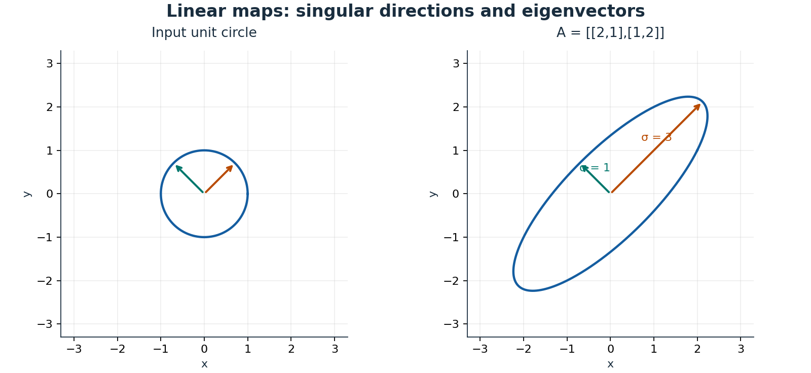
For overdetermined measurements \(Ax\approx b\), minimize \(\|Ax-b\|_2^2\). Differentiation gives \(A^T(A\hat x-b)=0\): the residual is orthogonal to the fitted column space. For measurements \((0,1),(1,2),(2,2)\), fitting an intercept and slope gives \(\hat b=7/6\), \(\hat m=1/2\), with residuals \((-1/6,1/3,-1/6)\). Their sum and their predictor-weighted sum vanish. Orthogonality does not establish that a straight line is scientifically appropriate.
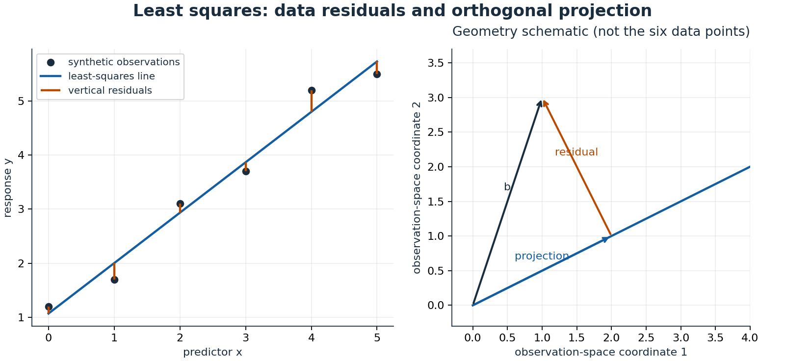
4.1.2 Conditioning, local approximations, and numerical evolution
Conditioning belongs to the problem; stability belongs to the algorithm. For nonsingular \(A\), \(\kappa_2(A)=\sigma_{\max}/\sigma_{\min}\) measures worst-case relative error amplification. Nearly parallel columns make fitted coefficients sensitive even when predictions barely change. Solving normal equations squares the condition number, so use QR or SVD rather than explicitly forming \((A^TA)^{-1}\). Scale quantities sensibly and report uncertainty rather than displaying unjustified digits.
Taylor expansion \(f(x+h)=f(x)+hf'(x)+O(h^2)\) supplies a local error model, not a global guarantee. Newton’s update
sets a tangent approximation to zero. For \(f(x)=x^2-2\) starting at \(2\), the next iterates are \(1.5\) and \(17/12\). Local quadratic convergence needs a sufficiently close starting point, a simple root, and smoothness. A small derivative, multiple root, or distant initial guess can spoil it. Bracketing a continuous sign change gives bisection a slower but stronger guarantee. Terminate using residual and step criteria, scaled to the application’s units.
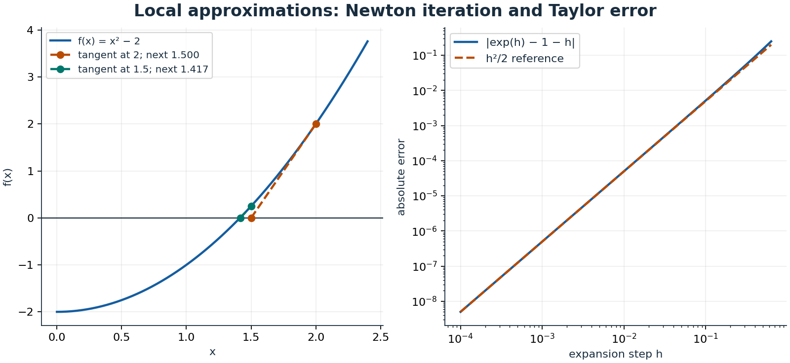
Forward Euler advances \(y_{n+1}=y_n+hf(t_n,y_n)\). Its local truncation error is \(O(h^2)\) and typical fixed-interval global error is \(O(h)\) under regularity assumptions. For \(y'=-2y\), amplification is \(1-2h\), so absolute stability requires \(0<h<1\). A step of \(0.8\) decays while alternating sign: numerically stable does not mean physically faithful. At \(h=1.1\) it grows. Stiff equations can impose severe explicit-step limits; implicit methods trade solves for a larger stability region. Compare successive resolutions, conserved quantities, and an analytic case before trusting a simulation.
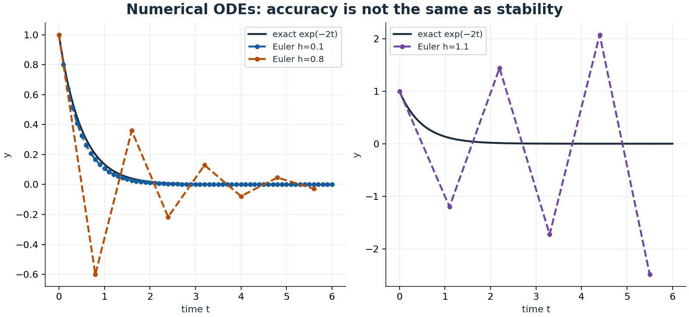
4.1.3 Probability, estimation, and honest uncertainty
A random variable models variation; an estimator is a rule applied to samples. Independent identically distributed observations with variance \(\sigma^2\) give \(\operatorname{Var}(\bar X)=\sigma^2/n\). The standard deviation describes individual spread; the standard error describes precision of an estimated mean. Correlation reduces effective information, and repeated measurements do not average away a shared calibration error. Bias, missingness, selection, and model mismatch require separate investigation.
A frequentist confidence interval is produced by a procedure with repeated-sampling coverage, not automatically a probability distribution for a fixed parameter. A Bayesian credible interval requires a likelihood and prior. For smooth \(g\) and a covariance matrix \(\Sigma\), first-order propagation gives \(\operatorname{Var}(g(X))\approx\nabla g^T\Sigma\nabla g\). Retain covariance terms; independence cannot be inferred from separate column names. Report measurement units, sample selection, interval meaning, and assumptions together.
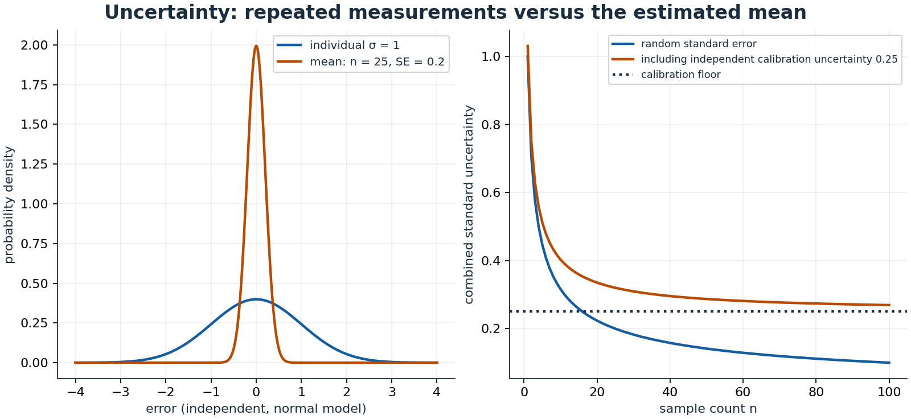
4.1.4 Fields, boundaries, and transforms
The gradient points toward greatest scalar increase; divergence measures local outward flux density; curl measures local circulation. Under suitable smoothness and orientation,
Gauss uses an outward closed-surface normal; Stokes pairs a surface normal with the right-hand boundary orientation. A field may circulate without diverging. Singularities and excluded holes require care before replacing integral information with a local derivative.
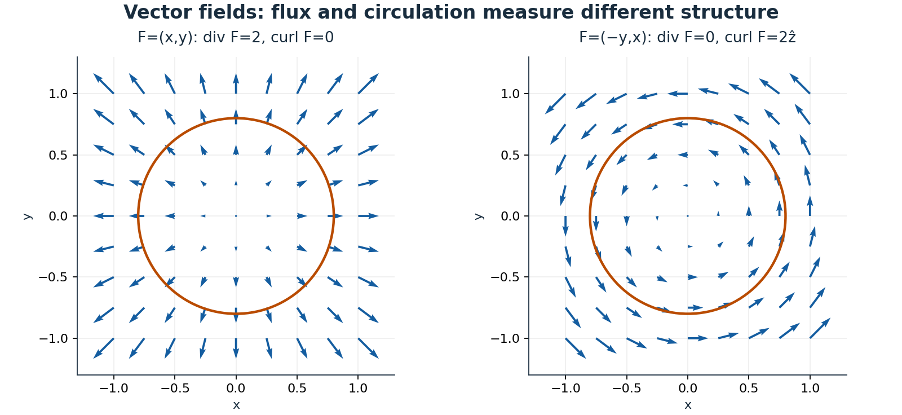
The Laplace transform \(F(s)=\int_0^\infty e^{-st}f(t)\,dt\) turns differentiation into \(sF(s)-f(0)\) where the integral converges. Initial conditions matter; transfer functions normally describe zero-initial-condition response. Fourier analysis resolves oscillations into frequency components, with transform convention and normalization stated explicitly. A square wave has odd sine coefficients \(4/(\pi k)\); truncation leaves Gibbs overshoot near jumps. More terms narrow the affected region rather than eliminating its limiting relative overshoot. Sampling additionally demands bandwidth control to prevent aliasing. These ideas connect directly to feedback in Section 12.1 and diffusion in Section 5.1.
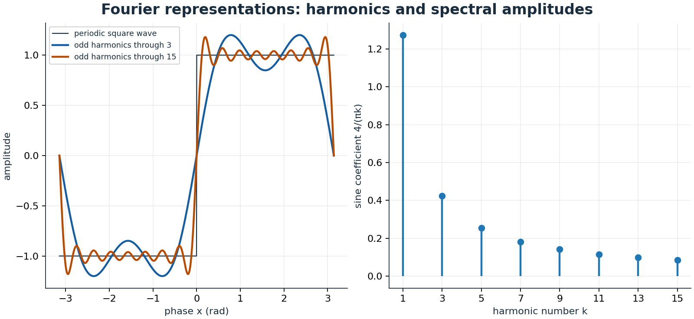
4.1.5 Scope and further study
The Waterloo 2022/23 NE calendar motivates linear algebra, probability, numerical methods, and vector calculus through NE 112, 113, 215, 216, and 217. The SYDE calendar supplies additional scope, including SYDE 312. Neither establishes personal attendance. For independent explanations and exercises, see MIT OpenCourseWare: Linear Algebra. Historical notes follow; read alongside the editorial corrections.
So why do we care about maths... well why do we care about english? English is a language which describes a set of phenomenon like how verbs describe the behaviour of nouns. The temperature increases in a given region if the surrounding temperatures are higher can be stated mathematically as \( \frac{\partial{T}}{\partial{t}} = k \frac{\partial^{2} T}{\partial{x^{2}}} \). I am not including a lot of details that I deem unnecessary to someone used to this type of equation, a diffusion equation, but to someone who is experienced with this type of equation it isn’t very descriptive. Thats where an importance of mathematical literacy comes in.
Mathematics is the most accurate and descriptive way of explaining any set of phenomenon. The only reason it doesn’t supersede other languages is because its not the faster. Whats faster to say to someone, "if we assign the middle of the kitchen table to be the origin \( \vec{r} = (0, 0, 0) \) in this Cartesian system, then the apple is some vector \( \vec{r} = (a, b, 0) \) away from the origin", or, "the apple is somewhere on the kitchen table". Yeah I thought so. If you want to accurately calculate the position of the apple given some force applied to it at time \( t = t_0 \), then mathematics may be required to describe the system to your liking. Humans, and all beings for that matter are creatures of efficiency, and its faster to use a non-mathematical language to describe most everyday things. In other cases, typically ones people may deal with at the workplace, mathematics may be required so a strong basic understand of it will help someone get through any task that requires mathematical computation with ease.
4.2 Calculus
Calculus lets us gain a quantitative understanding of rates of change of a function such as \( f(x) \) at any point \( x \) and the area under a curve such as \( f(x) \) from \( 0 \) to any point \( x \). This can prove to be incredibly useful as we will see through countless examples. For now, lets skip the precalc and start with derivatives.
4.2.1 Derivatives
We will begin to formulate the concept of derivatives starting from the concept of limits. Lets start with this one;
pretty simple eh! Lets get more tricky;
and,
you kinda get the approaching from the more positive or more negative side of \( 0 \) thing don’t you (hopefully). Well now we’ll more onto something requiring algebra;
so we can cancel terms and see a reasonable answer. We will how far we’ll get with this trying to understand calculus. Usually we go through some crazy example to handle crazy situations but I will not go through those until necessary where we will learn ON THE FLYYYY.
Now its all about rates of change and we are gonna start with a line do understand this better.
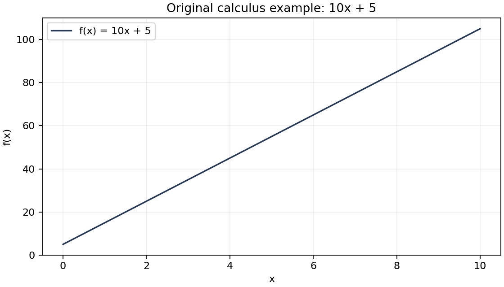
If we want to find the slope we can use the equation;
and if we know \( ( x_1 , y_1 ) \hspace{0.025cm} = \hspace{0.025cm} ( 10 , 105 ) \) and \( ( x_0 , y_0 ) \hspace{0.025cm} = \hspace{0.025cm} ( 5 , 55 ) \), so \( m \hspace{0.025cm} = \hspace{0.025cm} 0 \). Its important to note this only truly works for lines because, as we will see, the derivative of a line is a constant, so the rate of change of a line is constant at all points on the line. This is not true for our next example \( f(x) \hspace{0.025cm} = \hspace{0.025cm} x^2 \).
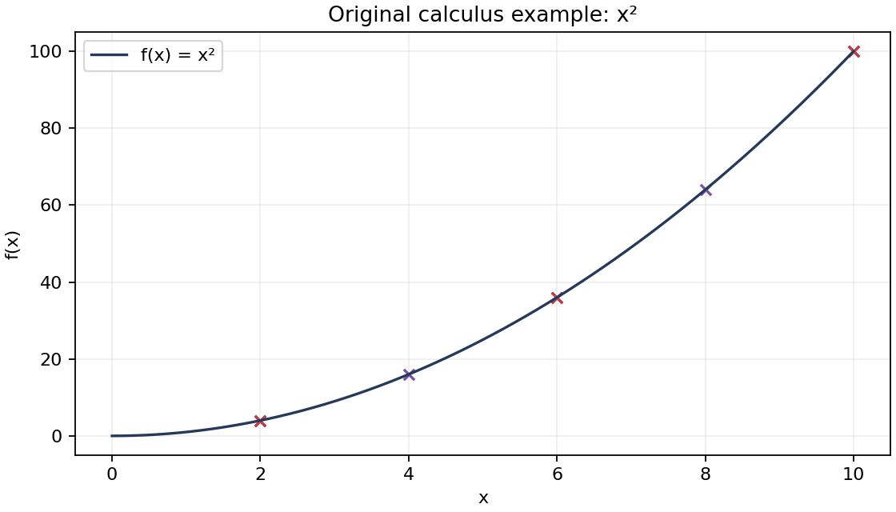
Or what about \( f(x) \hspace{0.025cm} = \hspace{0.025cm} x^4 \);
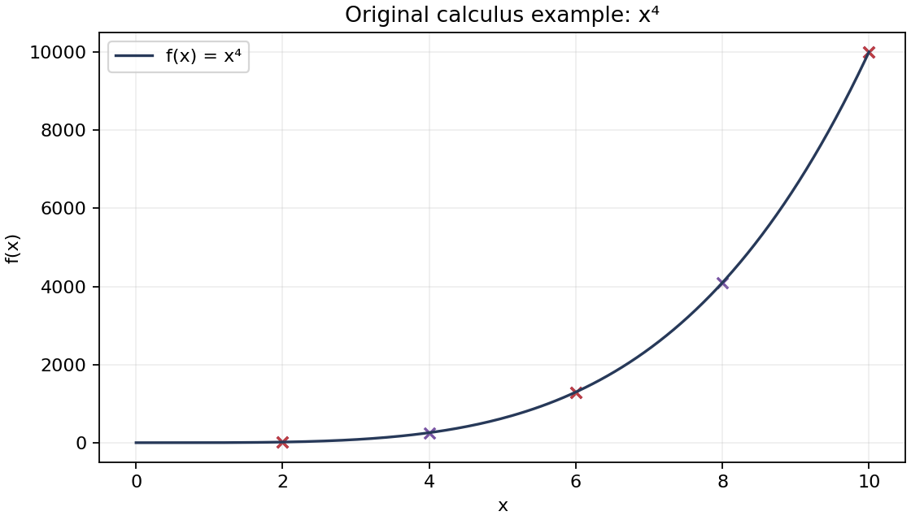
theres an issue with polynomials of order \( f(x) \hspace{0.025cm} = \hspace{0.025cm} x^n \), \( n > 1 \), that can only be solved using derivatives. You see, that for points the same distance away, the approximation to the rate of change gets less accurate as the order of the polynomial increases. The easy solution is just decrease the distance between points to get the rate of change of the function at that point \( x \). This works for computers but mathematicians want a more elegant solution. Plus, as n approaches \( \infty \) you can no longer use approximate rate of change. We use concept of limits to find the ultimately minimized approximate rate of change know as the infinitesimal rate of change of the function at all points \( x \), also known as the derivative of \( f(x) \). The process of obtaining a derivative from first principles is know as differentiation. The derivative of \( f(x) \) is...
And I don’t really like \( \Delta x \) so \( \Delta x = h \) now. Enough chit chat lets get to some examples.
Example 1) \( f(x) \) = \( a x + b \), \( a \) is a constant and \( b \) is a constant.
so,
which proves our assertion that the derivative of a line is constant for all \( x \).
Example 2) \( f(x) \) = \( x^2 \), no constants this time.
one more specific one then I hope you ready for it, this one uses Pascals triangle and Latexing that is hard so just Google it for this purpose if you don’t know it;
Example 3) \( f(x) \) = \( x^4 \), this ones a lot harder, the constant b is back in business.
you might guess the value of \( \frac{df(x)}{dx} \) for \( f(x) = x^3 \) is \( 3 x^2 \), and you’d be right. There’s a general pattern emerging here, that of;
We will now prove this explicitly using knowledge from Pascals triangle.
We will first note;
and so on. The term with just one h is always the same value as the order n in \( (x + h)^n \), so the only term that stays around during the differentiation process after the limit as \( h \) approaches \( 0 \) is the \( n x^{n - 1} \) term.
Now what about the occasions when there are shifts in the function \( f(x) \) so that it becomes \( f(x + a) \). Well we can just re represent our old statement as;
remembering in the differentiation process we divide by \( h \) and take the limit as \( h \) goes to \( 0 \) so the result is simply;
We aren’t quite done yet, because there are also products! But don’t worry we can easily prove these too!
Lets go through the next example \( \frac{d \Big( x^2(x + 1)\Big)}{dx} \).
so,
What we have just seen is a lower level example of the product rule, formally;
So,
should make a lot more sense now, no? How about;
how about now, good (hopefully)! Lets prove it generally for polynomials;
4.3 Linear Algebra
Do a section soon on matrix multiplication, and the application of matrix multiplication to neural networks.
4.3.1 Neural Networks
I have written notes for this, might just wanna copy em over directly this time.
4.4 Probability and Statistics
5 Physics
5.1 Conservation, fields, and physical models across scales – study additions
AI-assisted editorial study additions: original explanations and illustrations, not verbatim historical writing nor a transcript. These are high-level bridges to the detailed source notes, not a reconstruction of every course or derivation.
5.1.1 Newtonian and Lagrangian mechanics
Start by specifying the system boundary, coordinates, inertial frame, constraints, and applied forces. Newton’s law \(d p/dt=F_{\mathrm{ext}}\) reduces to \(m\ddot x=F\) for constant mass; variable-mass systems require accounting for momentum flux. Work changes kinetic energy, while an interaction potential exists only when the force is conservative in the relevant configuration domain. Conservation of total energy includes heat and internal energy, not merely visible mechanical motion.
For generalized coordinates \(q_i\), write \(L=T-V\) and
Here \(Q_i\) represents nonconservative generalized forces. Time-translation symmetry gives conserved energy; spatial and rotational symmetry give momentum and angular momentum under the appropriate isolated-system assumptions. A cyclic coordinate yields conserved conjugate momentum even when that momentum is not simply mass times coordinate velocity. Constraints can simplify coordinates without doing work, but friction and moving constraints need explicit treatment.
For a spring-mass-damper, \(m\ddot x+c\dot x+kx=0\). Define \(\omega_0=\sqrt{k/m}\) and \(\zeta=c/(2\sqrt{km})\). With \(m,k>0\) and \(c>0\), mechanical energy obeys \(\dot E=-c\dot x^2\). Underdamped motion oscillates while losing energy; critical damping separates oscillatory and nonoscillatory regimes. Resonant forced response depends on damping and on which observable is measured. Section 12.1 reinterprets these modes as poles rather than introducing different physics.
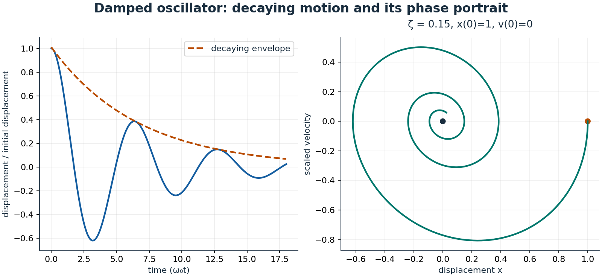
5.1.2 Waves and optics
The one-dimensional wave equation \(u_{tt}=v^2u_{xx}\) supports travelling disturbances, while boundaries select standing modes. Phase velocity describes a constant-phase point; group velocity \(d\omega/dk\) describes a narrowband envelope when dispersion is mild enough. Superposition applies to the linear model, not automatically to high-amplitude waves. Intensity is quadratic in field amplitude, so coherent waves interfere before intensities are computed.
Snell’s law \(n_1\sin\theta_1=n_2\sin\theta_2\) uses angles from the normal. Geometrical rays neglect diffraction and require lengths large relative to wavelength. For equal coherent slits of width \(a\) separated by \(d\), far-field intensity is proportional to \([\sin\beta/\beta]^2\cos^2\delta\), with \(\beta=\pi a\sin\theta/\lambda\) and \(\delta=\pi d\sin\theta/\lambda\). Finite aperture sets the envelope; separation sets fine fringes. Resolution is limited by wavelength, aperture, aberrations, and noise, not magnification alone.
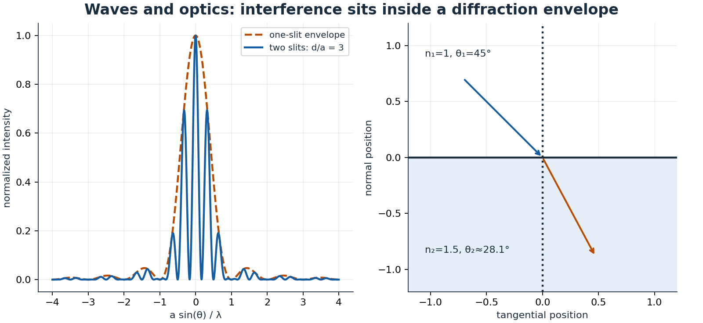
5.1.3 Continuum mechanics, dimensions, and boundaries
A continuum averages over microscopic structure. It is useful only when the observation scale supports that averaging. Displacement \(u\) gives infinitesimal strain \(\epsilon=(\nabla u+\nabla u^T)/2\) when rotations and deformation gradients are sufficiently small. Stress is force per area: traction on normal \(n\) is \(t=\sigma n\). Stress symmetry follows from angular-momentum balance for an ordinary continuum without couple stresses. Linear isotropic elasticity uses \(\sigma=\lambda\operatorname{tr}(\epsilon)I+2\mu\epsilon\); anisotropic crystals require a stiffness tensor.
For an incompressible Newtonian fluid of constant density and viscosity,
Each momentum term has units of force per volume. The Reynolds number \(\rho UL/\mu\) compares inertial and viscous effects, but a single universal transition value does not exist for all geometries. No-slip at a stationary wall produces a parabolic fully developed pressure-driven channel profile. At rarefied or molecular scales, slip and noncontinuum transport can invalidate that boundary model.
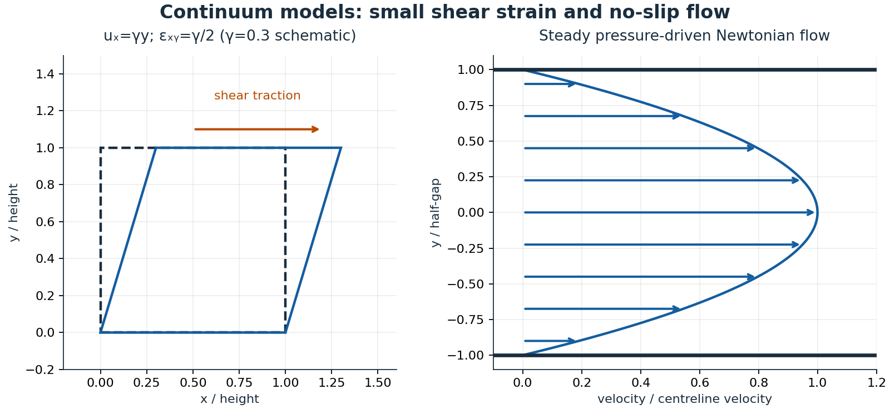
With constant properties, conduction satisfies \(\rho c_p\partial_t T=k\nabla^2T+\dot q\), where \(\dot q\) is volumetric heating. Thermal diffusivity \(\alpha=k/(\rho c_p)\) has dimensions length squared per time, giving diffusion time \(L^2/\alpha\). Dirichlet data prescribe temperature; Neumann data prescribe normal flux; Robin data couple flux to environmental temperature, for example \(-k\partial_nT=h(T-T_\infty)\). Sign depends on the outward normal convention. Initial and boundary data are part of the problem, not numerical afterthoughts.
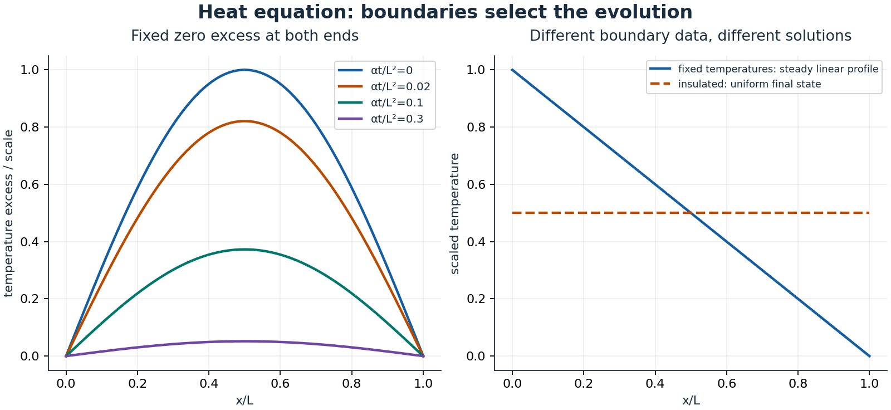
5.1.4 Maxwell fields, circuits, and carriers
Macroscopic Maxwell equations relate free charge and current to fields:
Constitutive relations such as \(D=\epsilon E\) and \(B=\mu H\) add material assumptions. Displacement current preserves charge continuity. The Poynting vector \(E\times H\) describes electromagnetic energy flux. Integral statements connect to the flux and circulation diagrams in Section 4.1.
Lumped circuits approximate spatially distributed fields when propagation delays and geometry allow. Kirchhoff’s current law expresses charge balance; the usual loop law neglects unmodelled changing magnetic flux. Using the \(e^{j\omega t}\) convention, \(Z_R=R\), \(Z_L=j\omega L\), and \(Z_C=1/(j\omega C)\). State whether phasors use peak or RMS amplitude before calculating average power. In semiconductors, conductivity depends on mobile electrons and holes, their concentrations, and mobilities. Doping changes carrier statistics; the junction discussion in Section 11.1 distinguishes moving carriers from fixed ionized dopants.
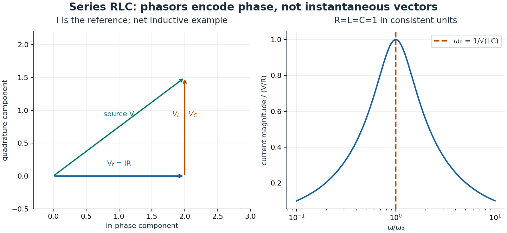
5.1.5 Quantum states, ensembles, and relativity bridges
A normalized wavefunction supplies probabilities, not a hidden classical trajectory. In an infinite one-dimensional box, \(\psi_n=\sqrt{2/L}\sin(n\pi x/L)\) and \(E_n=n^2\pi^2\hbar^2/(2mL^2)\) for positive integers \(n\). Narrower confinement raises kinetic energy. The harmonic oscillator has \(E_n=\hbar\omega(n+1/2)\) and nonzero ground energy. These are different potentials with different level spacings; neither spacing is universal.
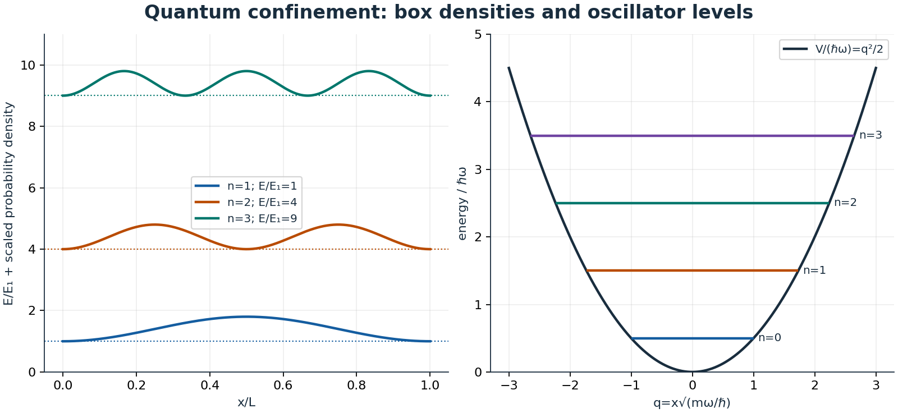
Angular momentum obeys \([L_x,L_y]=i\hbar L_z\), with \(L^2=\hbar^2\ell(\ell+1)\) and \(L_z=m\hbar\) on joint eigenstates. Orbital \(\ell\) is integer; spin requires its own representation and may be half-integer. The uncertainty relation reflects noncommuting observables, not merely imperfect instruments. A pure superposition and a statistical mixture can share some measurement probabilities while differing in coherence.
The canonical ensemble fixes temperature, volume, and particle number, assigning \(p_i=e^{-\beta E_i}/Z\). The grand canonical ensemble permits particle exchange and weights \(E_i-\mu N_i\). Entropy connects microstate probabilities to thermodynamics; quantum indistinguishability distinguishes Bose and Fermi statistics. Finally, special relativity replaces absolute time with invariant spacetime interval and \(E^2=p^2c^2+m^2c^4\). Newtonian mechanics emerges at low speed; general relativity further treats gravitation geometrically. These bridges orient the detailed quantum and statistical notes rather than replacing their derivations.
5.1.6 Sources and scope
See OpenStax University Physics, Volume 1, Volume 2, and Volume 3. The Waterloo 2022/23 NE descriptions guide topics associated with mechanics, continuum models, electromagnetism, quantum mechanics, and statistical thermodynamics; this is a scope map, not evidence of completed courses. Historical notes follow; read alongside the editorial corrections.
5.2 Classical Mechanics
5.3 Continuum Mechanics
You can basically make differential equations out of conservation laws, and use the particular solutions to those differential equations to mathematically describe phenomenon in a system. As simple as that sounds we must build up from the fundamental axioms of continuum mechanics.
5.3.1 Kinematics of a Continuum
You can describe a material using a sum of vectors \( \sum_{i=1}^{N} \vec{r_{i}}(t) \), \( i \epsilon (1,N) \). If we let \( N \Rightarrow \infty \), we obtain the material frame \( \vec{X} = \vec{x}(\vec{X} , t = 0 ) \), and the spacial frame \( \vec{x} = \vec{x}(\vec{X} , t ) \). The material frame can be looked at as the material at \( t = 0 \), whereas the material frame describes the material at any point in time.
Material properties such as velocity, temperature and stress can be described in the material or spacial frame. It essentially means that each of these properties is a function of the position in the material or spacial frame.
5.3.1.1 Example 1: Heat equation due to temperature diffusion caused by a temperature gradient
3.1) To see the math in action we will look at an example (it already started). What is math without physics am I right? We’ll start with the well known heat vector equation. We know heat is transferred from hotter to colder things... cause if the opposite was true infinitely small points which are of higher temperature than their surroundings would get increasingly hot increasingly quickly until the amount of mass-energy with a certain radius creates a high temperature black hole devowering everything in sight. It would also violate the law of conservation of mass-energy so like, yeah... f that. The heat equation mathematically is;
where \( \vec{q} \) is the vector which represents the direction and magnitude of heat being transferred in each direction, \( \vec{\vec{k}} \) is the an-isotropic heat coefficient (cause this example isn’t already convoluted enough) and \( \nabla{T} \) is temperature gradient. Lets define the temperature as \( T = 2 x_1 + 3 x_2 + x_3 \) and the heat coefficient tensor as;
in tensor notation we can represent \( \vec{\vec{k}} \) as;
the vector created by taking the gradient of the temperature distribution can be computed as;
evaluating \( \vec{q} \) we obtain;
all the terms of \( \vec{e}_i \cdot \vec{e}_j \) with \( i \neq j \) are 0, and all the terms of \( \vec{e}_i \cdot \vec{e}_j \) with \( i = j \) are 1;
5.3.1.2 Example 2: A bunch of spacial and material frame stuff, good practice
Next example.
3.2) Given \( \vec{x} \hspace{0.125cm} = \hspace{0.125cm} \Big( \vec{\vec{\delta}} + \vec{\vec{A}} \Big) \cdot \vec{X} \) , \( \vec{\vec{A}} \hspace{0.125cm} = \hspace{0.125cm} k t \Big( \vec{e}_1 \vec{e}_2 + \vec{e}_2 \vec{e}_2 \Big) \) , and \( T( \vec{x} , t ) \hspace{0.125cm} = \hspace{0.125cm} \alpha \vec{b} \cdot \vec{x} \) with \( \vec{b} \hspace{0.125cm} = \hspace{0.125cm} \vec{e}_1 + \vec{e}_2 \). Find (a) \( T( \vec{x} , t ) \), and (b) \( \vec{v}( \vec{x} , t ) \).
5.3.1.3 Material and Spacial derivative
Explanation.
In summation notation \( \vec{v}\cdot\vec{\nabla} \) is;
5.3.1.4 Example 3: Pretty much just playing around
3.3) Find \( \frac{D T}{D t} \), \( T \hspace{0.125cm} = \hspace{0.125cm} \alpha ( x_1 + x_2 ) \), and \( \vec{v} \hspace{0.125cm} = \hspace{0.125cm} \frac{k x_2}{1 + k t} \big( \vec{e}_1 + \vec{e}_2 \big) \hspace{0.125cm} \).
Easy.
5.3.1.5 Acceleration of a Material Particle
\( \vec{x} \hspace{0.125cm} = \hspace{0.125cm} \vec{x}( \vec{X} , t ) \)
Example time.
5.3.1.6 Acceleration of something with a known velocity
The know velocity is \( \vec{v} \hspace{0.125cm} = \hspace{0.125cm} \frac{k \vec{x}}{1 + kt} \), so lets plug and chug to obtain \( \vec{a} \) and maybe investigate.
Now lets go through how we obtain \( \vec{x}( \vec{X} , t ) \) from \( \vec{v} \hspace{0.125cm} = \hspace{0.125cm} \frac{k \vec{x}}{1 + kt} \) ;
With use of some exponent algebra we obtain;
Similarly,
5.3.1.7 Rigid Body Motion
Condition for no deformation is;
Rigid body motion can be explained with a combination of initial or body fixed-frames x y and z values and orientation, and components that describe translation its rotation. The vector \( \vec{c}(t) \) describes center of mass translation. If the location of the center of mass \( \vec{b} \hspace{0.125cm} = \hspace{0.125cm} \vec{0} \), and there is no rotation (i.e the rotation matrix is \( \vec{\vec{R}}(t) \hspace{0.125cm} = \hspace{0.125cm} \vec{\vec{I}} \)), translation only rigid body equation of motion is;
therefore
Just focusing on rotation and saying \( \vec{c}(t) \hspace{0.125cm} = \hspace{0.125cm} \vec{0} \), and we choose arbitrary point of rotation vector \( \vec{b} \), then the rotation only rigid body equation of motion is;
and the general rigid body equation of motion is
example time;
5.3.1.8 Proof rigid body motion doesn’t change distance between material particles
Condition for no deformation;
We start with the vector difference between two arbitrary material points \( \vec{x}^{(1)} - \vec{x}^{(2)} \);
Taking the magnitude to see if it stays in tact we obtain;
we know for all unitary matrices the determinant of the rotation matrix is \( \big|\big| \vec{\vec{R}}(t) \big|\big| \hspace{0.125cm} = \hspace{0.125cm} 0 \), so the final result is our condition for no deformation;
5.3.1.9 The Anti-Symmetric Tensor
The antisymmetric tensor is defined as \( \vec{\vec{T}} \cdot \vec{a} \hspace{0.125cm} = \hspace{0.125cm} \vec{t} \times \vec{a} \), where \( \vec{t} \) is the dual vector of antisymmetric tensor \( \vec{\vec{T}} \). Its possesses no diagonal elements and it is equal to negative one times itself transposed value (i.e \( T_{i i} \hspace{0.125cm} = \hspace{0.125cm} 0 \) and \( T_{i j} \hspace{0.125cm} = \hspace{0.125cm} - T_{j i} \) ). Upon solving it we can find that it is representable by;
5.3.1.10 Anti-Symmetric Tensor Example
Starting with i = 1, and k = 1 (i.e. the \( \vec{e}_i \hspace{0.125cm} = \hspace{0.125cm} \vec{e}_1 \) and \( \vec{e}_k \hspace{0.125cm} = \hspace{0.125cm} \vec{e}_1 \) must be consistent with the summation notation), we obtain;
which proves that \( t_3 \hspace{0.125cm} = \hspace{0.125cm} - T_{1 2} \), and \( t_2 \hspace{0.125cm} = \hspace{0.125cm} T_{1 3} \).
Now doing the remaining cases;
which proves that \( t_3 \hspace{0.125cm} = \hspace{0.125cm} T_{2 1} \) , \( t_1 \hspace{0.125cm} = \hspace{0.125cm} - T_{2 3} \), \( t_2 \hspace{0.125cm} = \hspace{0.125cm} - T_{3 1} \), and \( t_1 \hspace{0.125cm} = \hspace{0.125cm} T_{3 2} \).
Consolidating all the positive and negative terms together gives us;
5.3.1.11 Velocity of a Rigid Body
and of course \( \frac{\partial{\vec{b}}}{\partial{t}} \hspace{0.125cm} = \hspace{0.125cm} \vec{0} \) and \( \frac{\partial{\vec{X}}}{\partial{t}} \hspace{0.125cm} = \hspace{0.125cm} \vec{0} \). We solve for \( \Big( \vec{X} - \vec{b} \Big) \) using the knowledge that \( \vec{\vec{R}}^{-1} \hspace{0.125cm} = \hspace{0.125cm} \vec{\vec{R}}^{T} \), and \( \vec{\vec{R}}^{-1} \cdot \vec{\vec{R}} \hspace{0.125cm} = \hspace{0.125cm} \vec{\vec{\delta}} \) ( so \( \vec{\vec{R}}^{T} \cdot \vec{\vec{R}} \hspace{0.125cm} = \hspace{0.125cm} \vec{\vec{R}} \cdot \vec{\vec{R}}^{T} \hspace{0.125cm} = \hspace{0.125cm} \vec{\vec{\delta}} \) ) .
so,
now we need to go back and look at our definition of the antisymmetric tensor and its dual vector;
We will prove that \( \frac{\partial{\vec{\vec{R}}}}{\partial{t}} \cdot \vec{\vec{R}}^{T} \) is an antisymmetric tensor so that we can change \( \vec{v} \) to a form similar to;
We start with knowledge that \( \vec{\vec{R}}^{T} \cdot \vec{\vec{R}} \hspace{0.125cm} = \hspace{0.125cm} \vec{\vec{R}} \cdot \vec{\vec{R}}^{T} \hspace{0.125cm} = \hspace{0.125cm} \vec{\vec{\delta}} \), taking a derivative with respect to time we obtain;
so,
A condition for an antisymmetric tensor is \( \vec{\vec{T}} \hspace{0.125cm} = \hspace{0.125cm} - \vec{\vec{T}}^{-1} \), and because a component of our rate of change of the rotation tensor is unitary at all points in time (i.e. \( det (\vec{\vec{T}} ) \hspace{0.125cm} = \hspace{0.125cm} 1 \)), then \( \frac{\partial{\vec{\vec{R}}}}{\partial{t}} \cdot \vec{\vec{R}}^{T} \hspace{0.125cm} = \hspace{0.125cm} - ( \frac{\partial{\vec{\vec{R}}}}{\partial{t}} \cdot \vec{\vec{R}}^{T} )^{-1} \hspace{0.125cm} = \hspace{0.125cm} - ( \frac{\partial{\vec{\vec{R}}}}{\partial{t}} \cdot \vec{\vec{R}}^{T} )^{T} \) . Lets see if this matches our previous result that we obtained from taking the derivative of \( \vec{\vec{R}} \cdot \vec{\vec{R}}^{T} \hspace{0.125cm} = \hspace{0.125cm} \vec{\vec{\delta}} \) (remember \( ( \vec{\vec{A}} \cdot \vec{\vec{B}} )^{T} \hspace{0.125cm} = \hspace{0.125cm} \vec{\vec{B}}^{T} \cdot \vec{\vec{A}}^T \) and \( \big( \vec{\vec{B}}^{T} \big)^{T} \hspace{0.125cm} = \hspace{0.125cm} \vec{\vec{B}} \) );
so we can confidently conclude that \( \frac{\partial{\vec{\vec{R}}}}{\partial{t}} \cdot \vec{\vec{R}}^{T} \) is antisymmetric, so we can restate the velocity \( \vec{v} \hspace{0.125cm} = \hspace{0.125cm} \frac{\partial{\vec{\vec{R}}}}{\partial{t}} \cdot \vec{\vec{R}}^{T} \cdot \Big( \vec{x} - \vec{c} \Big) + \frac{\partial{\vec{c}}}{\partial{t}} \) as;
5.3.1.12 Rigid Body Practice
We want to practice obtaining the spacial frame equation \( \vec{x} \hspace{0.125cm} = \hspace{0.125cm} \vec{\vec{R}} \cdot \Big( \vec{X} - \vec{b} \Big) + \vec{c} \) while starting from \( \vec{x} \). In this practice situation we define the spacial frame in terms of the material frame as \( \vec{x} \hspace{0.125cm} = \hspace{0.125cm} \Big( \cos \pi t \big[ X_1 - 1 \big] - \sin \pi t \big[ X_3 \big] + (1 + t) \Big) e_1 + \Big( X_2 + 2 t \Big) e_2 + \Big( \sin \pi t \big[ X_1 - 1 \big] + \cos \pi t \big[ X_3 \big] \Big) e_3 \), and attempt to solve for the vectors \( \vec{b} \), and and \( \vec{c}( t ) \) (remember \( \vec{b} \hspace{0.125cm} = \hspace{0.125cm} \vec{c}( t = 0 ) \) and \( \vec{\vec{R}}( t = 0 ) \hspace{0.125cm} = \hspace{0.125cm} \vec{\vec{\delta}} \)). We define \( \vec{\vec{R}}( t ) \) in this situation (because we know its made of cos and sin functions) as;
And this fits our conditions that \( \vec{\vec{R}}( t = 0 ) \hspace{0.125cm} = \hspace{0.125cm} \vec{\vec{\delta}} \);
We can restate the system as;
Lets validate one more condition, the fact that the rotation matrix’s dot product with its transpose results in the identity matrix;
We will now solve for the duel vector \( \vec{\omega} \) ( remember \( \frac{\partial{\vec{\vec{R}}}}{\partial{t}} \cdot \vec{\vec{R}}^{T} \cdot \vec{a} \hspace{0.125cm} = \hspace{0.125cm} \vec{\omega} \times \vec{a} \) ), and see that the tensor \( \frac{\partial{\vec{\vec{R}}}}{\partial{t}} \cdot \vec{\vec{R}}^{T} \) is anti-symmetric.
Keeping in mind the duel vector \( \vec{\omega} \hspace{0.125cm} = \hspace{0.125cm} A_{32} \vec{e}_1 + A_{13} \vec{e}_2 + A_{21} \vec{e}_3 \), and in this case;
So given that only \( A_{13} \hspace{0.125cm} \neq \hspace{0.125cm} 0 \) and \( A_{31} \hspace{0.125cm} \neq \hspace{0.125cm} 0 \) the duel vector \( \vec{\omega} \) is;
which makes sense because the rotation matrix \( \vec{\vec{R}} \) is constructed such that it rotates around the \( \vec{e}_2 \) axis.
5.3.1.13 Infinitesimal Strain Tensor
Lets start by defining \( \vec{x}^{( p )} \) and \( \vec{x}^{( q )} \) which represents a point P in the spacial frame space and a point Q which is \( d \vec{x} \) away from point P.
Subtracting these to values gives us;
Taking the limit as \( d \vec{X} \rightarrow \vec{0} \) we obtain an expression that contains the displacement gradient \( \vec{\nabla} \vec{u} \);
its important to reiterate tensor calculus;
Example
Given \( \vec{u} \hspace{0.125cm} = \hspace{0.125cm} \big[ k X_{2}^{2} , 0 , 0 \big] \), we see \( \vec{x} \hspace{0.125cm} = \hspace{0.125cm} \vec{X} + \vec{u} \hspace{0.125cm} = \hspace{0.125cm} \big[ X_1 + k X_{2}^{2} , X_2 , X_3 \big] \), so as you go further in the \( X_2 \) direction, the deformation increases in the \( X_1 \) direction. Going further we solve for the differential deformation vector \( d \vec{x} \) given knowledge of \( \vec{\nabla} \vec{u} \);
\( \vec{\nabla}\vec{u} \) is known as the displacement gradient, and \( \vec{\vec{F}} \) is known as the deformation gradient.
Example DONE, lets take a closer look at the deformation gradient.
We can obtain the length of the vector squared by taking the dot product of \( \vec{x} \) with itself;
\( \vec{\vec{C}} \equiv \) Cauchy-Green Deformation Tensor \( \equiv \vec{\vec{F}} \cdot \vec{\vec{F}}^T \)
If the continuum is undergoing rigid body motion; \( \vec{\vec{C}} \equiv \vec{\vec{\delta}} \equiv \vec{\vec{F}} \cdot \vec{\vec{F}}^T \),
Which means for non-rigid-body motion; \( \vec{\vec{C}} \equiv \vec{\vec{F}} \cdot \vec{\vec{F}}^T \neq \vec{\vec{\delta}} \).
Using knowledge that \( \vec{\vec{F}} \hspace{0.125cm} = \hspace{0.125cm} \vec{\vec{\delta}} + \vec{\nabla} \vec{u} \), we shall derive the infinitesimal strain tensor \( \vec{\vec{E}} \hspace{0.125cm} = \hspace{0.125cm} \frac{1}{2} \Big[ \vec{\nabla} \vec{u} + ( \vec{\nabla} \vec{u} )^T \Big] \);
We set \( \Big( \vec{\nabla} \vec{u} \cdot ( \vec{\nabla} \vec{u} )^T \Big) \hspace{0.125cm} = \hspace{0.125cm} 0 \) because it would add a nonlinear term to out equation and we don’t want that. If you remember, \( \vec{\vec{\delta}} \) describes rigid body motion, so we can restate this equation as;
Now that we have obtained the infinitesimal strain tensor we will do some analysis on it to determine some if its properties. We want to examine what elements of the tensor correspond to normal strains (the diagonal elements), the ones that correspond to sheer strains (the off-diagonal elements), and then analyze the invariants of infinitesimal strain tensor to figure out what they mean. We will start with the normal strains;
We define a basis with basis vectors \( \vec{e}_1 , \vec{e}_2 , \vec{e}_3 \), which help describe the differential material frame vectors \( d \vec{X}^{( 1 )} , d \vec{X}^{( 2 )} , d \vec{X}^{( 3 )} \) and the differential spacial frame vectors \( d \vec{x}^{( 1 )} , d \vec{x}^{( 2 )} , d \vec{x}^{( 3 )} \). The relationship between these vectors \( \vec{e}_i , \vec{x}^{( i )} , \vec{X}^{( i )} \), are their respective a scaling factors \( ds \) and \( dS \);
We now evaluate \( d \vec{x}^{( i )} \cdot d \vec{x}^{( j )} \) for the case where \( i \hspace{0.025cm} = \hspace{0.025cm} j \);
We can state that \( d \vec{x}^{( i )} \cdot d \vec{x}^{( i )} \hspace{0.025cm} = \hspace{0.025cm} \big| \big| \vec{x}_i \big| \big|^2 \hspace{0.025cm} = \hspace{0.025cm} ds_{i}^{2} \) and \( d \vec{X}^{( i )} \cdot d \vec{X}^{( i )} \hspace{0.025cm} = \hspace{0.025cm} \big| \big| \vec{X}_i \big| \big|^2 \hspace{0.025cm} = \hspace{0.025cm} dS_{i}^{2} \), so out previous equation becomes;
We’re dealing with an infinitesimal strain tensor so we can say \( \big( ds_i + dS_i \big) \hspace{0.025cm} = \hspace{0.025cm} 2 dS_i \) and therefore;
We state the change in volume of the material as ;
and because its an infinitesimal strain tensor, we say that \( E_1 E_2 \) is really small, so the only some terms in the product \( \Pi_{i \hspace{0.005cm} = \hspace{0.005cm} 1}^{3} dS_{i}^2 \big( 1 + E_{i i} \big) \) and we obtain;
We define \( dV \equiv dS_1 dS_2 dS_3 \), but notice that \( I_1 \) is simply the first invariant of the infinitesimal strain tensor;
For now, we finish off our discussion of the infinitesimal strain tensor with an analysis of the sheer strain on a material (i.e \( d \vec{x}^{( i )} \cdot d \vec{x}^{( j )} \) and \( i \neq j \) );
We define \( \vec{e}_i^{ '} \cdot \vec{e}_j^{ '} \hspace{0.025cm} \equiv \hspace{0.025cm} \cos{\theta} \), and \( \cos{\theta} \hspace{0.025cm} \equiv \hspace{0.025cm} \cos(\frac{\pi}{2} - \gamma) \), so;
Reminding ourselves that \( \cos(\frac{\pi}{2} - \gamma) \hspace{0.025cm} = \hspace{0.025cm} \sin{ \gamma } \), and for infinitesimal strains (i.e small \( \gamma \) ) \( \sin{ \gamma } \hspace{0.025cm} \simeq \hspace{0.025cm} \gamma \) we obtain;
Once again, because of infinitesimal strains, we can state \( \frac{ds_i ds_j}{dS_i dS_j} \hspace{0.025cm} \simeq \hspace{0.025cm} 1 \), so we can restate \( E_{i j} \) as;
Where \( \gamma \) represents the change in angle between \( \vec{x} \) and \( \vec{X} \).
Re-examining our example before with \( \vec{u} \hspace{0.125cm} = \hspace{0.125cm} \big[ k X_{2}^{2} , 0 , 0 \big] \) and solving for \( E_{1 2} \) we can determine \( \gamma \);
5.3.1.14 Time Rate of Change of a Material Element
We want to find the time rate of change \( \frac{D}{D t} \) or a material element \( d \vec{x} \) which is;
Taking the time derivative we obtain;
Implementing the same procedure we did to obtain \( \nabla{\vec{u}} \), multiplying and dividing by \( d \vec{x} \) and taking the limit as \( d \vec{x} \) approaches \( 0 \);
Reminding ourselves that;
5.3.1.15 The Rate of Deformation Tensor
We start by introducing two new tensors, each components of \( \nabla{\vec{v}} \), the symmetric component, \( \vec{\vec{D}} \) and the anti-symmetric component, \( \vec{\vec{W}} \);
\( \vec{\vec{D}} \) is the \( \frac{D}{D t} \) analogue of \( \vec{\vec{E}} \), known as the rate of deformation tensor. \( \vec{\vec{W}} \) is known as the the spin tensor.
Written out explicitly these are;
Now, lets calculate the change in the length of the vector \( d \vec{x}^{(i)} \hspace{0.025cm} = \hspace{0.025cm} ds_i \vec{e}^{i} \) with respect to time, where the length of the vector is defined as \( d \vec{x}^{(i)} \cdot d \vec{x}^{(i)} \hspace{0.025cm} = \hspace{0.025cm} ds_{i}^2 \cancelto{1}{\vec{e}^{i} \cdot \vec{e}^{i}} \hspace{0.025cm} = \hspace{0.025cm} ds_{i}^2 \);
Using what we obtained from the taking the total derivative of \( d \vec{x}^{(i)} \), (i.e \( \frac{D}{D t} d \vec{x}^{(i)} \hspace{0.025cm} = \hspace{0.025cm} \nabla{v} \cdot d \vec{x}^{(i)} \));
Going through both terms, starting with the one that goes to 0, \( d \vec{x}^{(i)} \cdot \vec{\vec{W}} \cdot d \vec{x}^{(i)} \);
Using the knowledge of anti-symmetric tensors that \( \vec{\vec{W}}^T \hspace{0.025cm} = \hspace{0.025cm} - \vec{\vec{W}} \), we obtain;
This is valid because the net result of \( \vec{x}^{(i)} \cdot \vec{\vec{W}} \cdot d \vec{x}^{(i)} \) is a scalar, and the statement \( C \hspace{0.025cm} = \hspace{0.025cm} - C \) implies that \( C \hspace{0.125cm} = \hspace{0.125cm} 0 \).
This just leaves the symmetric tensor component, so we have
We switch notations \( \vec{e}^{(i)} \hspace{0.125cm} = \hspace{0.125cm} \vec{e}_i \) to finish this off;
Just as easily we can calculate the rate of change of volume (volume is defined as \( \prod_{i = 1}^{3} ds_i \)) per unit volume as;
This formulae will be used later to clean up the equation representing the conservation of mass, and another important consequence of this formulae is that if \( \nabla \cdot \vec{v} \hspace{0.125cm} = \hspace{0.125cm} 0 \) then we say the material is incompressible, which will come in handy as a constitutive equation when we’re dealing with fluids.
5.3.2 Stress and Integral Formulations of General Principles
Start with stress tensor, move towards laws of conservation of mass, momentum, energy, entropy inequality.
5.3.2.1 Integral Formulations Of The General Principles Of Mechanics
There are differential equations that govern the possible values of physical quantities (such as temperature, internal energy, entropy, density, displacement, position, velocity, and acceleration), and the are generated using fundamental truths written in integral form. These fundamental truths include the conservation of mass, momentum, energy, and of course the entropy inequality.
Conservation of Mass
The rate of increase of mass in a fixed part of a material is always zero. That is, the material derivative of the mass in any fixed part of the material is zero. This may also be stated as;
We label the material volume \( V_m \), and a control volume \( V_c \), which instantaneously coincides with \( V_c \) in time;
Upon moving dV to the outside of the brackets we can de-integrate this expression;
Remembering that \( \frac{1}{dV} \frac{D dV}{D t} \hspace{0.025cm} = \hspace{0.025cm} \nabla \cdot \vec{v} \), and that \( \frac{D \rho}{D t} \hspace{0.025cm} = \hspace{0.025cm} \frac{\partial{\rho}}{\partial{t}} + \vec{v} \cdot \nabla{\rho} \), we obtain the law of conservation of mass;
and if \( \frac{D \rho}{D t} \hspace{0.025cm} = \hspace{0.025cm} 0 \), then we say the material is in compressible, and therefore;
Conservation of Momentum
The principle of linear momentum states that the forces acting on a fixed part of a material must equal the rate of change of linear momentum of the same fixed part of a material;
Noting that \( \int_{V_c} \frac{D ( \rho dV )}{D t} \hspace{0.025cm} = \hspace{0.025cm} 0 \), and rearranging a bit we obtain;
Noting that \( \frac{D ( \vec{v} )}{D t} \hspace{0.025cm} = \hspace{0.025cm} \vec{a} \), de-integral-ing, and re-arranging to bring negative terms to the R.H.S we obtain the law of conservation of momentum;
Conservation of Energy
This ones pretty heavy... so the rate of change of kinetic and internal energy with respect to time is dependant on both the power generated from the force (i.e \( \vec{F} \cdot \vec{v} \) ) and the rate of heat generated as a result of both bulk heating and from temperature gradients. The force term is is the same as the R.H.S of the law of conservation of momentum;
The surface vector can be turned into the stress tensor, then divergence theorem can be used to turn it into the form we all recognize;
Our original tern now becomes;
The force based terms mostly contributes to the the kinetic energy of the material, whereas the heat generating terms completely contribute to the internal energy of the system. The heat is generated in the bulk and at the surface, and because we require the term describing the heat generated at the surface to be of a similar form to the bulk (and remaining terms), we must employ divergence theorem;
Now the full equation we start with before eventually obtaining the law of conservation of energy (including the bulk heating per unit volume term) is;
We note that \( ( \nabla \cdot \vec{\vec{T}} + \rho \vec{B} ) \cdot \vec{v} \hspace{0.025cm} = \hspace{0.025cm} \rho \frac{D \vec{v}}{D t} \cdot \vec{v} \hspace{0.025cm} = \hspace{0.025cm} \frac{\rho}{2} \frac{D v^2}{D t} \), so we can create a term exclusively involving internal energy per unit mass (\( u \), which we will soon convert to its temperature form);
Lastly we note that \( u \hspace{0.025cm} = \hspace{0.025cm} C_v T \) before we de-integral this expression;
Which is our final form of the law of conservation of energy.
5.3.3 Elastic Solids
Some Stress/Strain stuff, lead into vibrations in solids.
5.3.3.1 Hookean Solid Undergoing Vibrational Displacement
We would like to study a Hookean Solid undergoing vibrational displacement of the form;
\( \vec{u} \) is a possible motion is it satisfies the equation;
\( \vec{B} \hspace{0.125cm} \simeq \hspace{0.125cm} \vec{0} \) in this situation because we consider the effect of gravity negligible. The amplitude of the wave is constant for this system, so whether taking spacial or temporal derivatives it will remain in from of each term following the process of differentiation, so \( \epsilon \) cancels out of the LHS and the RHS. Examining the LHS;
The RHS is a little more tricky to compute, so we will examine the \( \big( \lambda + \mu \big) \nabla \big( \nabla \cdot \vec{u} \big) \) and \( \mu \nabla{}^2 \vec{u} \) terms in the RHS separately (keeping in mind \( \big( \cos{ \omega t } \big) \) is a constant whilst taking spacial derivatives).
Fortunately, \( \mu \nabla{}^2 \vec{u} \) is a lot easier to compute, so lets go ahead and compute it;
Re-Iterating the equation we plugged \( \vec{u} \) into;
and we also re-iterate each term we have solved individually;
What makes this process A LOT easier is that \( \big( \cos{ \omega t } \big) \Big( \cos \Big( \sum_{i = 1}^{3} k_i x_i \Big) \Big) \) can be divided out of each term. Doing this gives us a simpler result;
If \( \vec{n} \hspace{0.025cm} = \hspace{0.025cm} \vec{m} \) (which essentially just means they’re pointing in the same direction because \( | | \vec{n} | | \hspace{0.025cm} = \hspace{0.025cm} | | \vec{m} | | \hspace{0.025cm} = \hspace{0.025cm} 1 \)), then the wave is irrotational (or longitudinal), and the material is undergoing compressions and rarefactions);
which is the speed of a longitudinal wave. For the case where \( \vec{n} \) and \( \vec{m} \) are orthogonal (i.e. \( \vec{n} \cdot \vec{m} \hspace{0.025cm} = \hspace{0.025cm} 0 \)), we obtain a transverse wave;
and for all other cases im not sure.
5.3.4 Newtonian Viscous Fluids
5.4 Electromagnetism
The entirety of electromagnetism can be executively summarized by Maxwell’s Equations:
These are the partial differential equation form of fundamental laws that really came from an integral representation:
I will go through the fundamental laws that come with each of the integral formulae.
5.4.1 Gauss’ and No Mans Law
This first law (equations [ambiguous historical reference: eq:1] and \(\ref{eb-eq-5-1}\)), that the flux of the electric field out of a closed surface (i.e. \( \Phi_E \) = LHS of equation \(\ref{eb-eq-5-1}\)) is equal to the charge inside the surface divided by the electric permittivity of free space (i.e. the RHS of equation \(\ref{eb-eq-5-1}\)), is known as Gauss’ Law. For constant charge q, it should be noted that as you increase the magnitude of \( \vec{dS} \) the value of \( \vec{E} \) must decrease. We can conclude that the value of the electric field has a dependence on the radius because as r increases, \( 4\pi r^2 \) also increases and \( \vec{E} \) decreases. This is where coulombs law comes from:
So it can be said that;
More accurately:
Where \( x_0 \), \( y_0 \) and \( z_0 \) are the coordinates of a charge. A more general electric field representation takes into account that there can be N point charges can easily be shown:
Knowledge of the electric field gives us knowledge of the force on a test charge Q:
We also could have obtained the same electric as in \(\ref{eb-eq-12-1}\) from the knowledge of the potential which is also computed from knowledge of point charges.
Using equations \(\ref{eb-eq-19-1}\) and [unresolved historical reference: eq:21] it can be shown that;
and using equations \(\ref{eb-eq-17-1}\) and \(\ref{eb-eq-18-1}\), equation \(\ref{eb-eq-22-1}\) can be reduced to equation \(\ref{eb-eq-23-1}\);
which validates equation \(\ref{eb-eq-15-1}\).
To end off our intro to the first law we are looking at with electromagnetism, we will show how we obtain the first Maxwell Equation from Gauss’ Law;
Start with a restatement of divergence theorem;
Add an equality between charge q and charge density \( \rho \);
With some rearrangement we can obtain;
removing the integral symbols we obtain;
which is the same as equation [ambiguous historical reference: eq:1].
The same logic can be used to derive equation \(\ref{eb-eq-2-1}\) from equation \(\ref{eb-eq-6-1}\).
therefore;
That’s it for the divergences and surface integral derivations. Now we move on to the curl and line integral derivations which make use of something known as Stokes Theorem. However, before we prove the relation between the integral and differentials forms of the 3rd and 4th Maxwell Equations, lets look into the form of the magnetic field a bit because its used more heavily here.
5.4.2 Electric Field Geometries
Now for more advanced applications of Coulombs Law;
5.4.2.1 Line of Charge
We start with an example of a line of charge. We know that any electric field can be determined by a sum of contribution of other fields from charges (i.e. eq \(\ref{eb-eq-30-1}\) ).
Lets say we align the line charge on the y axis and have it extend from \( (0, -L/2) \) to \( (0, L/2) \). Lets say we want to know the value of the electric field \( E_{x} \) and \( E_{y}\) at a point \( (d, 0) \). We follow the procedure of writing out \( E_{x} \) which we will solve first.
If we take the limit as N goes to infinity (i.e. infinitely small charges) we can obtain an integral formulation of this equation which we can evaluate analytically, note \( \big(x - x_0\big) \) = \( d \).
First we’ll note in our geometry that \( \cos{\theta} = \frac{d}{\sqrt{d^2 + y^2}} \), \( \tan{\theta} = \frac{y}{d} \) and \( dy = d\sec^{2}{\theta}d\theta \). Next we will note that this integral is an even integral (i.e. integrand \( f(y) \) = \( f(-y) \)), so we can double its value and just integrate one of the two area’s, specifically the area between \( 0 \) and \( \frac{L}{2} \). Equation \(\ref{eb-eq-32-1}\) is now;
Next we note that \( \lambda = \frac{Q}{L} \), so \( Q = \lambda L \) and \( dQ = \lambda dL = \lambda dy \).
So now equation \(\ref{eb-eq-33-1}\) becomes;
If we have a very long line of charge (i.e \( L >> d \));
If we have a very short line, or are very far away from it (i.e \( d >> L \), then;
which is a fairly intuitive result.
Now for Ey,
If we take the limit as N goes to infinity (i.e. infinitely small charges) we can obtain an integral formulation of this equation which we can evaluate analytically, note \( \big(y - y_0\big) \) \( = \) \( y \).
Now we will note that this integral is an odd integral (i.e. integrand \( f(y) \) = \( f(-y) \)), so its net result is zero. Equation \(\ref{eb-eq-42-1}\) is now;
5.4.2.2 Plate of Charge
We now move on to what may seem like an intimidating task, calculating a plate of charge. It may seem tricky but the methods used to evaluate this problem are fairly simplistic, its just the formalism which may be daunting at first. The value of the electric field is a function of radius, height, and angle, however in the example we are about to go through, the Electric Field is symmetric about theta and we keep the height constant.
We say there is a disk of radius \( R \) and a position on the disk is describable by \( R^{2} = \big(x - x_{i}\big)^{2} + \big(y - y_{i}\big)^{2} , \) \( z = h \). \( h \) is the dimension of the height away from the disk which is in the z-direction. The equation describing the electric field is;
Which may also be rewriten as;
in the z-direction.
We will now transform this into its integral form by taking the limit as N approaches infinity so \( q_{i} \) turns into \( dQ \);
Using knowledge that \( \eta = \frac{Q}{\pi R^{2}} \) so that \( dQ = \eta 2 \pi R dR \), equation \(\ref{eb-eq-43-1}\) becomes;
We now do a \( u \) substitution but stating;
Using this we can restate equation \(\ref{eb-eq-44-1}\) as;
when inserting the values of the integrands gives;
If R is large or h is small in comparison we have an interesting outcome, that of the parallel plate capacitor which is used in circuit engineering with many uses. Equation [ambiguous historical reference: eq:47] becomes;
Following up on the parallel plate capacitor, if we note that \( V = E_{z} d \), and \( C = \frac{Q}{V} \) then using previous \( \eta = \frac{Q}{\pi R^{2}} \) and \( dQ = \eta 2 \pi R dR \) relationships and equation [ambiguous historical reference: eq:47] we can obtain;
That’s for one parallel plate, for two parallel plates;
5.4.3 Faraday’s Law
5.4.4 Ampere’s Law
Lets derive the value of a magnetic field for a line of current at a point \( \vec{r}_p = (R, 0, 0) \) for a line that extends from \( \vec{r}_a = (0, \frac{L}{2}, 0) \) to \( \vec{r}_b = (0, \frac{L}{2}, 0) \).
where;
As N approaches \( \infty \), \( q_i \) becomes \( dq \) and \( \sum_{i=1}^{N} \) becomes \( \int_{-\frac{L}{2}}^{\frac{L}{2}} \) ;
First we note \( \vec{r}_p = (R, 0, 0) \) and \( \vec{r} = (0, -y, 0) \) so \( \vec{r}_{p} - \vec{r} = (R, -y, 0) \). Second \( \vec{v} = \frac{d \vec{s}}{dt} \), so \( dq \frac{d \vec{s}}{dt} = \frac{dq}{dt} \vec{s} = I \vec{s} \). Lastly, \( r = \sqrt{ R^2 + y^2} \) ;
We must also note \( d \vec{s} = (0, dy, 0) \), which will be useful when we are solving the magnetic field in the \( x \), \( y \), and \( z \) directions. Lets start with the \( x \) direction;
Ok that was trivial lets try \( B_y \);
Ok also trivial lets try \( B_z \);
Alright now we have something... Lets apply the symmetry of this integrand and make this;
We’ll note in our geometry that \( \cos{\theta} = \frac{R}{\sqrt{R^2 + y^2}} \), \( \tan{\theta} = \frac{y}{R} \) and \( dy = R \sec^{2}{\theta}d\theta \). Applying these we obtain;
and if \( L >> R \), then;
Another way of obtaining this is using the integral form of Maxwell’s 4th equation;
Here \( C \) is the circumference of a circle of radius \( R \). If around the circumference \( 2\pi R \) the value of the magnetic field is constant, the we can restate this as;
So we can state that the magnitude of a magnetic field around a constant current \( I \) is;
We can arrive at the final version of the 4th Maxwell equation by first using an old trick that arrived us at the 3rd Maxwell equation, and then applying one last principle, the conservation of charge, to tweak our initial result into the correct version of Maxwell’s 4th equation which includes the displacement current term \( \mu_{0} \epsilon_{0} \frac{\partial{\vec{E}}}{\partial{t}} \). Lets begin by noting that \( \mu_{0} I \) can also be restated as \( \iint_{S} \mu_{0} \vec{J}\cdot\vec{dS} \), so Ampere’s Law can be rewritten as;
Using Stokes Theorem;
We can restate \( \oint_{C} \vec{B} \cdot \vec{dl} \) as \( \iint_{S} (\vec{\nabla}\times\vec{B})\cdot\vec{dS} \);
Removing the same surface integrals we obtain the 4th Maxwell Equation;
But we know this isn’t the full story, that displacement current term ( \( \mu_{0} \epsilon_{0} \frac{\partial{\vec{E}}}{\partial{t}} \) ) is missing. We can notice the irregularity of this statement but taking the divergence of our previous result and noticing that our RHS term is not necessarily zero.
However, it is well known from tensor calculus that the LHS term is zero, however I will show why this is true anyway in a little tangent;
and remembering from tensor calculus that;
we obtain;
we all know how dot products work so;
also from tensor calculus;
Now here’s the trick, we have to remember that if the integers in \( \epsilon_{ijk} \) are ascending like \( \epsilon_{123} \), \( \epsilon_{231} \), or \( \epsilon_{312} \), then \( \epsilon_{ijk} = 1 \). If \( \epsilon_{ijk} \) are descending like \( \epsilon_{321} \), \( \epsilon_{213} \), or \( \epsilon_{132} \), then \( \epsilon_{ijk} = -1 \). For all other combinations \( \epsilon_{ijk} = 0 \), so if \( i = j \), \( j = k \) or \( i = k \) then \( \epsilon_{ijk} = 0 \). That’s part 1 of the trick. Part 2 is noticing that F is an exact differential, meaning it doesn’t matter what order you take derivatives whether its \( \frac{\partial}{\partial{x_i}} \) then \( \frac{\partial}{\partial{x_j}} \), or \( \frac{\partial}{\partial{x_j}} \) then \( \frac{\partial}{\partial{x_i}} \), the result is the same. With that being said interchanging \( \frac{\partial}{\partial{x_i}} \) and \( \frac{\partial}{\partial{x_j}} \) switches the sign of \( \epsilon_{ijk} \), so all of the terms of the sum ends up canceling out;
So we can conclude that;
Back to \( \nabla\cdot\vec{\nabla} \times \vec{B} \hspace{0.125cm} = \hspace{0.125cm} \mu_{0} \nabla\cdot\vec{J} \hspace{0.125cm} \). The LHS is for sure \( 0 \) now, and statement becomes;
so;
Something seems off about this. We know that current density changes with respect to space, we’re just not sure how to formulate it. Lets refer to the equation of continuity for assistance with this issue;
We know from the 1st Maxwell Equation that;
Combining this with the equation of continuity we obtain;
Using this result we can restate our original problem as;
Undoing the divergence term we obtain the 4th Maxwell Equation in its full form including the displacement current;
5.4.5 Electromagnetic Radiation
Now that we have all Maxwell Equations, we will begin the most epic derivation possibly in all of physics. The moment when Maxwell himself discovered that there was a universal speed for all electromagnetic radiation, that happened to be based on the electric and magnetic permittivities of free space \( \epsilon_{0} \) \( \mu_{0} \) respectively.
It is important to note that a key assumption used in this derivation is that these electromagnetic fields are described in a charge and current-less medium (i.e \( \rho = 0 \) and \( \vec{J} = \vec{0} \)). While this isn’t valid for most cases this formalism of electromagnetic radiation serves as a good model for describing the phenomenon and can be easily perturbed for electromagnetic radiation in a non-charge and current-less medium.
The derivations for the \( \vec{E} \) and \( \vec{B} \) fields are long, but very similar. The derivation for \( \vec{E}_{field} \) starts with the use of the 3rd Maxwell Equation and the derivation for the \( \vec{B}_{field} \) starts with the use of the 4th Maxwell Equations. In is instructive for us to restate all 4 Maxwell Equations in a charge and current-less medium.
A lot simpler eh! Good, cause its about to get hard. This derivation requires us to take the curl of the curl of a field (i.e \( \vec{\nabla}\times\vec{\nabla}\times\vec{F} \)). Gulp. We will once again use tensor calculus to perform a necessary proof, that \( \vec{\nabla}\times\vec{\nabla}\times\vec{F} = \nabla\big(\nabla\cdot\vec{F}\big) - \nabla^{2}\vec{F} \). You can probably already see where this is going if you know what the differential form a wave equation looks like.
Lets start with the beginning of the derivation before we go off on a tangent to prove \( \vec{\nabla}\times\vec{\nabla}\times\vec{F} = \nabla\big(\nabla\cdot\vec{F}\big) - \nabla^{2}\vec{F} \) is true.
We know that \( \vec{\nabla} \times \vec{B} \hspace{0.125cm} = \hspace{0.125cm} \mu_0\epsilon_0\frac{\partial{\vec{E}}}{\partial{t}} \), so;
We’re so close to done but a vector identity, \( \vec{\nabla}\times\vec{\nabla}\times\vec{E} = \nabla\big(\nabla\cdot\vec{E}\big) - \nabla^{2}\vec{E} \), must be proved before we move on.
Borrowing from tensor calculus we can restate the LHS of our last result as;
using knowledge of \( \epsilon{ilm} = \epsilon{mil} \), we can restart our result as;
Now, theres an important statement about these \( \epsilon_{jkl}\epsilon_{mil} \) terms, they can be restated as;
Which allows us to do this;
We’re gonna totally get rid of \( m \) on for the positive and negative terms. For the positive terms, \( m \) becomes \( j \), and \( k \) becomes \( i \). For the negative terms, \( j \) becomes \( i \) and \( m \) becomes \( k \) (so \( \vec{e}_m \) turns into \( \vec{e}_k \) on the negative side and our previous result becomes;
Choice of indicies is arbitrary so we’re gonna make all the \( k \)’s on the left hand side \( j \)’s before we continue;
Now its just a matter of recognizing the forms of these equations and what setup of tensor calculus was used to obtain them. We’ll start with the slightly obvious one (that \( \nabla^{2} E = \sum_{i=1}^{3} \sum_{j=1}^{3} \frac{\partial^{2}{E_j}}{\partial{x_i}^{2}} \vec{e}_j \));
The Laplacian Operator is constructed as follows;
Evaluating this we obtain;
So if \( \vec{E} = \sum_{j=1}^{3} E_j \vec{e}_j \) it would make sense that;
For the more tricky term, we must note one thing before we tackle this, its that the index of the electric field must be the same for the leftmost and rightmost terms at the end of the derivation because they refer to the same electric field. So \( \sum_{i=1}^{3} \sum_{j=1}^{3} \frac{\partial^{2}{E_i}}{\partial{x_i}\partial{x_j}} \vec{e}_j \) becomes \( \sum_{i=1}^{3} \sum_{j=1}^{3} \frac{\partial^{2}{E_j}}{\partial{x_j}\partial{x_i}} \vec{e}_i \). Interchanging the order of \( \frac{\partial{E_j}}{\partial{x_j}\partial{x_i}} \) to look like \( \frac{\partial{E_j}}{\partial{x_i}\partial{x_j}} \) doesn’t change the result because \( E \) is an exact differential, so we postulate that;
We can restate this as;
which is our result from before. So in full it can be stated that;
Continuing from where we left off;
We know from our charge and current-less version of the 1st Maxwell Equation that \( \nabla\cdot\vec{E} = 0 \). So our last result becomes;
This is almost the electric-field wave equation, but we are just missing an intuitive understanding of the term which links \( \frac{\partial^{2}{\vec{E}}}{\partial{t}^{2}} \) to \( \nabla^{2}\vec{E} \). That term happens to be the speed of light (squared technically). It turns out if you take the inverse square root of \( \mu_{0}\epsilon_{0} \) (i.e. \( \frac{1}{\sqrt{\mu_{0}\epsilon_{0}}} \)) you obtain the value of the speed of light \( c \). So our wave equation can be finalized as;
Now we will show this for the magnetic field. We start with the 4th Maxwell Equation;
Taking the curl;
Inserting the 3rd Maxwell Equation (\( \nabla\times\vec{E} = - \frac{\partial{\vec{B}}}{\partial{t}} \)) we obtain;
which is the magnetic field wave equation.
sin and cos function are the typical solutions to these types of equations, and we can construct solutions to this wave equation as such.
5.4.6 4-Potential, 4-Current, and the EM Field Tensor
This formalism is useful in quantum field theory and condensed matter theory. It uses a convention where the dimensions are represented as \( x_{\mu} \hspace{0.025cm} \equiv \hspace{0.025cm} ( t, \vec{x} ) \), and vectors and tensors are constructed using this convention like so;
The 4-current, 4-potential, and the electromagnetic field tensor are defined as;
It is instructive to go over how the electric and magnetic fields are related to the vector potential \( \vec{A} \);
Now, lets see how each of the components of the electric and magnetic fields are realized in this EM Field Tensor, starting with the trivial diagonal elements;
Taking note that only the electric field contains partial derivatives of \( A_{\mu} \) with respect to time, and reminding ourselves that the first rows and columns correspond to the elements that contain partial derivatives with respect to time, we can see that;
Similarly;
Alright, cool. 10 down, 6 to go. The remaining EM tensor terms contain purely spacial partial derivatives, so you can already sort of assume that they might end up constructing magnetic fields. We are aren’t taking any derivatives of the scalar potential. The remaining terms can be computed as;
Similarly;
This process seems daunting until you realize there are only 6 non-trivial terms you have to calculate. This is an anti-symmetric tensor which has some significance (probably I have to study this more to see why). Another set of interesting properties is the EM Field Tensors relation to the Maxwell Equations. We start by taking the divergence of \( \vec{\vec{F}} \) ;
so;
It should be clear that because we are taking spacial derivatives of electric and magnetic fields upon taking the divergence of \( \vec{\vec{F}} \), the questionable equality in the previous equation, from a units standpoint, could have some validity if the spacial derivatives of the electric field terms all cancel out.
Lets examine this further after reminding ourselves that \( \nabla^2 \hspace{0.025cm} \equiv \hspace{0.025cm} \sum_{\mu = 1}^{4} \vec{e}_{\mu} \frac{\partial^2}{\partial{x_{\mu}}^2} \hspace{0.025cm} \equiv \hspace{0.025cm} \frac{1}{c^2} \frac{\partial^2}{\partial{t}^2} \vec{e}_1 - \frac{\partial^2}{\partial{x}^2} \vec{e}_2 - \frac{\partial}{\partial{y}^2} \vec{e}_3 - \frac{\partial}{\partial{z}^2} \vec{e}_4 \hspace{0.025cm} \equiv \hspace{0.025cm} \frac{1}{c^2} \frac{\partial^2}{\partial{t}^2} \vec{e}_1 - \sum_{i = 2}^{4} \frac{\partial^2}{\partial{x_i}^2} \vec{e}_i \hspace{0.025cm} \equiv \hspace{0.025cm} \frac{1}{c^2} \frac{\partial^2}{\partial{t}^2} \vec{e}_1 - \nabla_{\vec{x}}^2 \), \( \vec{J} \hspace{0.025cm} \equiv \hspace{0.025cm} \sum_{\mu = 1}^{4} J_{\mu} \vec{e}_{\mu} \hspace{0.025cm} \equiv \hspace{0.025cm} c^2 \rho \vec{e}_1 - J_1 \vec{e}_2 - J_2 \vec{e}_3 - J_3 \vec{e}_4 \hspace{0.025cm} \equiv \hspace{0.025cm} c^2 \rho \vec{e}_1 - \sum_{i = 2}^{4} J_i \vec{e}_i \hspace{0.025cm} \equiv \hspace{0.025cm} c^2 \rho \vec{e}_1 - \vec{J}_{\vec{x}} \) (the \( \vec{x} \), and \( \vec{A} \hspace{0.025cm} \equiv \hspace{0.025cm} \sum_{\mu = 1}^{4} A_{\mu} \vec{e}_{\mu} \hspace{0.025cm} \equiv \hspace{0.025cm} \phi \vec{e}_1 - A_1 \vec{e}_2 - A_2 \vec{e}_3 - A_3 \vec{e}_4 \hspace{0.025cm} \equiv \hspace{0.025cm} \phi \vec{e}_1 - \sum_{i = 2}^{4} A_i \vec{e}_i \hspace{0.025cm} \equiv \hspace{0.025cm} \phi \vec{e}_1 - \vec{A}_{\vec{x}} \) (the \( \vec{x} \) subscript represents that this vector potential just contains spacial components), so the scalar potential can be treated separately from the vector potential;
5.5 Quantum Mechanics
Quantum Mechanics, probably one of the most mysterious descriptions of the universe to date. Its sets of laws describe so many sets of phenomenons and explain to such accuracy so many things, and yet proposes so many new sets of questions about the fundamental nature of things.
Classically, if you know the position and momentum of all particles in the universe you may predict the future outcome of all events, the world would be completely deterministic. The only limit was our ability to attain information about the position and momentum of all particles, like how wind detectors use this knowledge along with temperature and humidity detectors to predict weather patterns. Those predictions are themselves limited but our ability to accurately predict phenomenon. How much data is enough to accurately predict things. Depends what you mean by accurately, how much numerical error before something is considered inaccurate? For weather patterns, the further the simulation goes in time the less accurate the system is because of something called chaos theory. Small differences in initial conditions lead to more and more drastic changes with the progression of time. All of this aside, determinism remains valid because it becomes theoretically possible to detect things to perfect accuracy.
The shaky thing is that Quantum Mechanics is founded on the Heisenberg uncertainty principle, that the more you become certain about the particles position the less you become certain about it momentum and vice versa described in (eq \(\ref{eb-eq-201-1}\)).
Fundamentally, all particles have a waveform in the form of their deBroglie wavelength (eq \(\ref{eb-eq-202-1}\)) which is related to the particles momentum.
These are minor introductions to the mysteriousness of quantum mechanics but lets get down to the real question. How do you see a wave, like where is it.
Classically, a wave is some sort of sinusoidal disturbance in a medium. A water wave is disturbing still water by perturbing its height up and down. Sound waves disturb the natural air by perturbing its air density up and down, and act similarly as sound propagates through a material. We obtain the mathematical representation of these classical wavefunctions by solving a differential equation that represents them. There are many examples from classical mechanics that would show the ubiquity of waves throughout classical mechanics.
Quantum Mechanically, the waveform, or wavefucntion of an elementary particle such as an electron can be interpreted as a disturbance in a field. Light itself is a disturbance of electric and magnetic fields (eq \(\ref{eb-eq-203-1}\), \(\ref{eb-eq-204-1}\));
which are solutions to their respective wave equations (eq \(\ref{eb-eq-205-1}\), \(\ref{eb-eq-206-1}\));
Keeping with the idea of a wave being a disturbance, lets carry on to the next mind bender, concluding that the wavefunction of an elementary particle for something like an electron is a disturbance in the electromagnetic field in the form of a charge that creates a field and has influence on the local potential energy. We will later see that the wavefunction \( |\Psi^2(\vec{x},t)| \) represents the probability of finding the electron in a given time and space interval which can be calculated using eq \(\ref{eb-eq-207-1}\);
and it is normalized such that
The second weird consequence comes from that first weird question, how do you see an electron. You don’t. You see the change in state of electrons from one type of waveform to another (i.e. from one wavefunction to another). This also corresponds in a change in energy level. If a particle gains or loses energy its surroundings much have given it energy or have gained the energy it looses. This is because of the law of conservation of energy. When an electron relaxes down to a lower energy state, it releases energy in the form of a photon, which we see and interpret as light coming from an object in front of us. Electrons can also absorb a photon and go to a higher energy state and therefore change to that energy levels associated wavefunction, then emit that photon and return to its original wavefunction and energy level. What am I getting at here? Every physical system has its own set of wavefunctions and associated energy eigenvalues, and the mathematical framework that describes the time independant energy eigenvales and wavefunctions is called the Time-Independant Schrodinger Equation (eq \(\ref{eb-eq-209-1}\));
There’s a bit of linear algebra needed for the remainder of this but we’re just gonna start with the conceptual understanding of eigenvalues and eigenfunctions. In equation \(\ref{eb-eq-209-1}\), the subscript n denotes which eigenvalue and eigenfunction we are talking about. For every eigenfunction that satisfies \(\ref{eb-eq-209-1}\) there is an associated eigenvalue needed such that the equality remains valid. We will see what this means after a lengthy example.
5.5.1 Particle in a Box
Firstly, lets introduce \( \hat{H} \). \( \hat{H} \) is called the Hamiltonian, and it is the operator in the eigenvalue equation \(\ref{eb-eq-209-1}\) that returns the eigenvalues and eigenfunctions. In our case it is a differential operator, however there is a matrix formulation of quantum mechanics which we will skip for now for simplicity. Because it is directly related to the shape of the wavefunction and its energy eigenvalue, it has units of energy and it forces wavelike solutions to the differential equation which we will shortly see.
Second we construct a general Hamiltonian and then use an example Hamiltonian to calculate a simple wave function. The most intuitive representation is probably that of the kinetic and potential energy operators. \( \hat{H} \) = \( \hat{T} \) + \( \hat{V} \). \( \hat{V} \) could be anything, it depends on the local distribution of wave functions and point particles.
Now, our example involves just a kinetic energy operator \( \hat{T} \) which looks like this;
Representing \( x_1 = x, \) \( x_2 = y, \) \( and x_3 = z \) we can rewrite equation \(\ref{eb-eq-211-1}\) as;
In spherical coordinates, if we can map to a linear rotor’s Cartesian coordinates with \( x = r\sin{\theta}\cos{\phi} \) , \( y = r\sin{\theta}\sin{\phi} \) and \( z = r\cos{\theta} \) then the Laplacian operator (equation \(\ref{eb-eq-212-1}\)) is;
We will start will a 1D Cartesian coordinate kinetic operator only Hamiltonian known as the 1D particle in a box;
Now lets outline the process for solving the Schrodinger equation for a time independant quantum system.
First you need to pick a Hamiltonian, which we have at this point for this example. If you want to build you own Hamiltonian simply find the potential and them decide if you want the Laplacian to be in cartesian or spherical coordinates.
Second you need to solve the Schrodinger Equation and obtain a general solution form of the wavefunction. The third step is applying boundary conditions to the wavefunction to obtain a particular wavefunction solution, and the fourth and final step is to normalize the wavefunction (i.e eq \(\ref{eb-eq-215-1}\) ).
We have step one done because we have the Hamiltonian (eq. \(\ref{eb-eq-214-1}\) ), step two is solve the time independant Schrodinger Eqaution,
This can be rewritten as;
We propose a test solution in the form of \( \psi(x) = e^{ax} \) and solve for what values of a the statement is true;
Plugging this into our equation for \( \psi(x) = e^{ax} \), we obtain as our general solution;
and that from Euler’s Identiy;
because if we were to apply \( a = ikx \) to the taylor series expansion of \( e^{ax} \) we would get;
It seems like we may not be able to represent this with one \( f(n) \), where \( f(n) \) is what decides the sign of a value in the series \( (-1)^{f(n)} \) in equation \(\ref{eb-eq-228-1}\). We need two in fact, and this is why we require \( e^{ikx} \) = \( cos(kx) \) + \( i sin(kx) \).
Resuming from equation \(\ref{eb-eq-222-1}\);
which we can rewrite as;
Now onto step 3, applying boundary conditions. We say that \( \psi(0) = 0 \) and \( \psi(L) = 0 \), and also \( \psi(x < 0) = 0 \) and \( \psi(x > L) = 0 \) for clairification. It is a particle in a 1D box with length L after all.
We now apply the boundary conditions to equation \(\ref{eb-eq-229-1}\) starting with the first one;
So \( A = 0 \) , and as a result the cosine term disappears;
Now we apply the second boundary condition;
So we can say the unnormalized wavefunction is;
The final step is to normalize the wavefunction, solving for B using the equation;
\( \psi^{\ast}(x) \) is the complex conjugate of \( \psi(x) \), and in this case it is the same as \( \psi(x) \). Equation \(\ref{eb-eq-235-1}\) can be writen as;
Using known trig identities we can obtain;
The sin term is zero for both limits of integration so the net result is;
So the final form of the 1D particle in a box wavefunction is;
The energy eigenvalues are obtained from our definition of E and k;
To summarize we have our energy eigenvalues and eigenfunctions;
Now lets do some observables;
which turns into an annoying integration by parts problem that end up disappearing anyway... sigh... but we obtain;
so;
which makes sense seeing as it should on average be in the middle of L regardless of n.
Now we will do \( \langle\hspace{0.125cm} \hat{p} \hspace{0.125cm} \rangle \).
which is to be expected as the particle would spend equal time going in both directions.
Now I want to demonstrate the validity of \(\ref{eb-eq-201-1}\) by first finding the varience of \( x \) and then the varience of \( p \);
so we need two more terms for both \( x \) and \( p \). The second terms of \( x \) and \( p \) are \( \langle \hspace{0.125cm} \hat{x} \hspace{0.125cm} \rangle^{2} \) and \( \langle \hspace{0.125cm} \hat{p} \hspace{0.125cm} \rangle^{2} \), and are simply the square of their respective expectation values. The other terms require evaluation;
......... which means we have to do 2 iterations of IBP... alright lets so it.
Now were gonna do the momentum case;
So our standard deviation of the position is;
and the standard deviation of the momentum is;
So the inequality know as the uncertainty principle is as follows;
Which is true because \( n = 1, 2, 3... \) and \( \pi \sqrt{\frac{1}{3}} > 1 \).
5.5.2 Harmonic Oscillator
The hamiltonian for the Harmonic Oscillator is;
We want to obtain the energy eigenvalues \( E_v \), from this hamiltonian;
We’re gonna focus on the 1D case with so \( \nabla^2 = \frac{d^2}{dx^2} \);
If we say \( x = \sqrt{\frac{\hbar}{m_e \omega}} q \) , and \( dx = \sqrt{\frac{\hbar}{m_e \omega}} dq \) then;
Now note that;
We also note that;
So we observe \( \frac{d}{dq} q - q \frac{d}{dq} = 1 \) and our equation becomes;
So the Schrodinger equation becomes;
And we define the creation and annihilation operators as;
and
respectively and so our Schrodinger equation becomes;
If we represent the nondimensionalized momentum as \( p = -i\frac{d}{dq} \) , then we can re-represent the creation and annihilation operators as;
and
so now we are ready to solve some commutation relations which will help us expose the energy eigenvalues, we know \( \big[ q , p \big] = i \) and so we’ll start with \( \big[ a^{\dagger} , a \big] \);
\( q^2 \) and \( p^2 \) cancel out and we obtain;
which can be re-expressed as;
and using the symmetry of the commutation relation \( \big[ i p , q \big] = -i \big[ q , p \big] \) and the fact that i has no effect on the commutation relation and can be extracted just like any constant \( \big[ q , - i p \big] = -i \big[ q , p \big] \) we can re-express our commutation relation as;
And once again using the symmetry of the commutation relation we can state that;
Going back to our Hamiltonian we obtain
Which looks kinda like;
Ok, next commutation relations \( \big[ \hat{H} , a \big] \) and \( \big[ \hat{H} , a^{\dagger} \big] \);
The \( \frac{a}{2} \) terms cancel and the \( \hbar \omega \) terms are constant so they can be moved outside the commutator to obtain;
With hacks we obtain;
Next;
Now knowing that \( \hat{H} \psi_{\nu} = E_\nu \psi_{\nu} \) we can use the creation and annihilation operators and knowledge of results of their commutation relations we can obtain;
So;
and likewise;
So it should be clear that \( \hat{H} a \psi_\nu \) and \( \hat{H} a^{\dagger} \psi_\nu \) are eigenstates of the Hamiltonian, and that the creation and annihilation operators raise and lower the energy eigenvalue by value \( \Delta E = \hbar \omega \).
So we obtain the energy eigenvalues of the harmonic oscillator as;
The wavefunction has the form;
where \( H_{\nu}\Big(\sqrt{\frac{m_e \omega}{\hbar}} x \Big) \) are Hermite polynomials.
5.5.3 Rigid Rotor
We start by defining angular momentum operator as \( \hat{\vec{l}} = \vec{\hat{r}}\times\vec{\hat{p}} \), which will act analogously to linear momentum whilst solving the Schrodinger equation with the Rigid Rotor Hamiltonian;
The wavefunction will end up being explained by spherical harmonics using Legendre Polynomials other sinusoidal functions (some constructed using Eulers Identity \( e^{i k x} = cos(kx) + i sin(kx) \)).
First lets review the relationship between angular and linear momentum, linear momentum is represented by;
Angular momentum is represented by;
Noting that \( I = \mu R^2 \) and \( \mu = \frac{m_1 m_2}{m_1 + m_2} \), and \( \vec{\omega} \) is the angular frequency vector which points normal to the plane of rotation. We say a reduced mass of \( \mu \) is attached to a string of radius \( R \), or the mass \( \mu \) is confined to a sphere with radius \( R \).
The consequences of this are that \( \hat{H} = \hat{T}_{rot} \) is represented is spherical coordinates instead of Cartesian coordinates, and the potential is defined to be 0 at \( R = R_0 \) (i.e \( V = 0 \), if \( R = R_0 \)) and infinity everywhere else (i.e. \( V = \infty \), if \( R \neq R_0 \)).
Before we can solve the Rigid Rotor Schrodinger equation we must transform the Laplacian (in the kinetic energy operator) from Cartesian to spherical coordinates. But first, we must transform the kinetic energy operator from a linear momentum form to an angular momentum form.
We’ll start with some statements; \( R_1 + R_2 = R \), \( m_1 + m_2 = M \), \( \mu = \frac{m_1 m_2}{M} \).
We will use this to obtain a few useful results, \( R_1 = R \frac{\mu}{m_1} \) and \( R_2 = R \frac{\mu}{m_2} \).
We now begin to express the kinetic energy in terms of angular components in place of linear components;
With the last step explainable by;
Now we going to transform this so we obtain out expression for \( T \) in terms of angular momentum \( L \). Note we are defining our rotation along the xy plane, so there is no linear momentum in the z direction. Also note that \( v_{1,2} = \omega R_{1,2} \)
Finally, if \( T = \frac{1}{2} I \omega^{2} \);
In operator form, this is;
Starting back from the \( \hat{H}_{rot} = \frac{\hat{p^{2}}}{2 \mu} = -\frac{\hbar^{2}}{2 \mu} \nabla_{xyz}^{2} \), we need to switch to spherical coordinates. There’s a process to go from \( \nabla_{xyz}^{2} \) to \( \nabla_{\phi \theta \chi}^{2} \), but its lengthy so I will refer you to the derivation in my calculus section HYPERLINK.
We will simply state that \( \nabla_{\phi \theta \chi}^{2} \) is;
So now the rotational part of our Hamiltonian now becomes;
The full Hamiltonian is;
We recall that the potential energy operator has the property \( \hat{V} = \infty \) if \( R = R_0 \), and \( \hat{V} = 0 \) if \( R \neq R \). So we treat R as a constant and say that \( \psi = 0 \) if \( R \neq R_0 \), and \( \frac{\partial{\psi}}{\partial{R}} = 0 \) at all points. So all the terms in \( \nabla_{\phi \theta \chi}^{2} \) that have a \( \frac{\partial}{\partial{R}} = 0 \) term in them will disappear and... we can finally express the Schrodinger equation as;
\( \psi( R_0 , \theta, \phi ) \) is usually relabelled as \( Y(\theta, \phi ) \) as we don’t care about \( R_0 \) anymore. The form presented previously can be represented as;
If we move the \( \frac{\partial^{2}}{\partial{\phi}^{2}} \) term to the LHS and the \( E_l \psi( R_0 , \theta, \phi ) \) as well as multiply both sides by \( \frac{2 I}{\hbar^{2}} \sin^{2}\theta \). Now we label \( \frac{2 I E_l}{\hbar^{2}} \) as \( \beta \) and prepare to perform Separation of Variables (S.O.V) by stating \( Y(\theta,\phi) = \Theta(\theta) \Phi(\phi) \). Our equation now becomes;
If we divide this whole expression by \( Y(\theta,\phi) = \Theta(\theta) \Phi(\phi) \), we obtain;
Notice we set both sides equal to \( m^2 \). \( \Theta \) and \( \Phi \) are independent (which is why we can perform S.O.V in the first place). We will start with what is clearly the simpler differential equation to solve \( \Phi \).
One of our boundary conditions is that \( \Phi(0) = \Phi(2 \pi) \), using this we see;
5.6 Statistical Thermodynamics
Brief introduction. Particles can be modelled as having probabilities of existing in different eigenstates with different energy eigenvalues. We can therefore calculate thermodynamic values such as a systems internal energy, its entropy, and its specific heat capacity;
These thermodynamic formulae can be calculated in terms of partition functions. We will go over how to calculate the partition function based on what is known as the degeneracy \( g_i \) of that quantum state \( i \), occupancy probabilities relative to the zero energy state \( \epsilon_0 \hspace{0.025cm} = \hspace{0.025cm} 0 \) so \( p_i \hspace{0.025cm} = \hspace{0.025cm} \frac{g_i \exp{\Big(-\frac{\epsilon_i - \epsilon_0}{k_B T} \Big)}}{Z} \). This is represented as;
The representation of internal energy, entropy and specific heat capacity in terms of partition functions is;
For we will go into solving partition functions for various systems, and later show how the partition function of a system is describable (for now) using products of independent partition functions constructed from energy eigenvalues of independent quantum systems which normalize some overall system consisting of say, translational, vibrational, and otational degrees of freedom and a ground state dictated by the first vibrational energy eigenvalue and the electronic energy ground state. Without further a do lets solve the transnational partition function for the particle in a box energy eigenvalues, classically known as the ideal gas.
5.6.1 Ideal Gas
The ideal gas law, \( P V \hspace{0.025cm} = \hspace{0.025cm} n R T \), is one of the most ubiquitous formulae in all of physics, but most people don’t have a microscopic interpretation of this equation. There is a classical and quantum approach to deriving this formula based on logical assumptions about the motion and collective energy of these N particles. We will start with the classical approach.
5.6.1.1 A Classical Approach
We will attempt to reconstruct each variable in the ideal gas law, pressure, volume, and temperature, based on an intrinsic relationship between the kinetic energy of particles and force, \( F \), exerted on the walls of a container of known arbitrary volume, \( V \), due to a change in momentum, \( dp \), of particles that occur a given amount of time, \( dt \).
Lets say there is N particles in a box with 3 dimensions. \( \frac{N}{3} \) particles will bounce off of both walls of the box in an amount of time, dt.
Assuming the particles undergo completely elastic collisions, and their velocity changes from \( -v \) to \( v \), the change in momentum is;
This change in momentum happens during some time interval, \( dt \), which is the amount of time it takes to travel from one end of the box to the other, and back again. This time interval can be derived from the equation for the velocity of the particles \( v \hspace{0.025cm} = \hspace{0.025cm} \frac{d x}{d t} \), so the time it takes to go from one end of the box and back again is;
We know the force exerted on the walls of the container from one particle is;
so the pressure exerted on a wall of area \( A \hspace{0.025cm} = \hspace{0.025cm} dy dz \), by all particles is;
Reinterpreting the numerator as the kinetic energy of all particles, \( \frac{N}{3} m v^2 \hspace{0.025cm} = \hspace{0.025cm} \frac{2}{3} K \), and defining the volume as \( V \hspace{0.025cm} = \hspace{0.025cm} dx dy dz \), we can rearrange the previous equation to obtain;
which, if we take the ideal gas law as canon, then \( \frac{2}{3} K \hspace{0.025cm} = \hspace{0.025cm} n R T \), or \( K \hspace{0.025cm} = \hspace{0.025cm} \frac{3}{2} n R \). Noting that \( R \hspace{0.025cm} = \hspace{0.025cm} N_A k_B \) and \( N \hspace{0.025cm} = \hspace{0.025cm} n N_A \), where \( N_A \) is avagadro’s number, we can restate the kinetic energy of all particles as;
and we arrive at the ideal gas law;
For this type of system, it can be said that the internal energy and the kinetic energy are the same in this situation, and in the quantum case we will see that the internal energy ends up equalling \( \frac{3}{2} N k_B T \). We will eventually find out that for each degree of freedom in a system, the internal energy increases by a factor of \( \frac{1}{2} k_B T \), so for a system with no potential energy term (which i’ll admit is nonphysical) the internal energy is \( \frac{f}{2} k_B T \)
5.6.1.2 The Quantum Approach
Lets solve the partition function for an ideal gas, but what does that mean? We must calculate;
where \( \epsilon_{n_x, n_y, n_z} \) is the energy eigenvalue of the eigenfunction \( \psi_{n_x, n_y, n_z} \), obtained by solving the time independant Schrodinger equation;
What ultimately decides the thermodynamic properties of a system is the partition function, which itself depends on the density of states \( g_{n_x, n_y, n_z} \) and the energy eigenvalues \( \epsilon_{n_x, n_y, n_z} \), which are obtained by solving the Schrodinger equation, which is constructed from the knowledge of the Hamiltonian, and solved using knowledge of the boundary conditions.
The Hamiltonian used to obtain energy eigenvalues is the 3D particle in a box Hamiltonian;
For simplicity, we assume that the length, width and height of the box are all the same, then we know the particle in a box has eigenfunctions solutions are;
where (\( n_x \hspace{0.125cm} = \hspace{0.125cm} 1,2,3... \), \( n_y \hspace{0.125cm} = \hspace{0.125cm} 1,2,3... \), and \( n_z \hspace{0.125cm} = \hspace{0.125cm} 1,2,3... \)).
Plugging this into the Schrodinger equation we see that;
so;
Now, its very important to note that there are cases where the partition function can be computed using an integral instead of a sum, which will help us derive elegant exact solutions to problems that otherwise wouldn’t be so elegant. The condition of when the sum can be an integral depends on if the spacing between energy levels is much smaller than \( k_B T \) (i.e. \( - \Delta E \ll k_B T \)). For more quantum systems, those with smaller length, \( L \), and temperature, \( T \), this approximation may not be valid. However, in classical cases where temperature and length are large, the statement \( \frac{h^2}{8 M L^2 k_B T} \ll 1 \) ( or \( \frac{h^2}{8 M L^2} \ll k_B T \) ) gains validity.
In terms of evaluating the integral, unlike how we sum over discrete quantum numbers, we now integrate over the continuous energy value because of how we treat \( g \big( \epsilon_{n} \big) \);
Now this begs the important question, what is \( g \big( \epsilon_{n} \big) \), and how do we compute it? It is the density of states, or the amount of states at some energy \( \epsilon_{n} \) ( \( n \hspace{0.025cm} = \hspace{0.025cm} \sqrt{ \Big( n_x^2 + n_y^2 + n_z^2 \Big)} \).
Lets start by defining the amount of states below some energy value, \( \epsilon \), as \( \Phi ( \epsilon ) \), and say that the continuous density of states function is defined as;
We can represent \( \Phi ( \epsilon ) \) as;
where;
Noting that \( L^3 \hspace{0.025cm} = \hspace{0.025cm} V \), and plugging this radius term in we obtain;
Now we can compute the continuous energy density of states function;
Back to our partition function;
Performing a substitution;
we obtain;
and using knowledge of Gaussian integrals we obtain;
so we end up the final form of our translational partition function;
Before we continue, its important to note that this partition function can only be used to compute thermodynamic properties for a system of one particle, for N distinguishable particles (will go over what distinguishable means later), the partition function takes the form;
Now it is instructive to use these values to calculate thermodynamic properties, we remind ourselves of;
We can express \( \ln{Z_{trans}} \) as;
and so plugging \( \ln{Z_{trans}} \) into each of these formulae, we obtain;
which match up with what is expected of a classical system.
5.6.1.3 Alternate Derivation
Our units got a little messy there going from the discrete definition of the partition function to the continuous partition function, and we had to derive a continuous density of states function which made the process more convoluted. There is a alternate derivation of the translational partition function that asserts that \( g_i \hspace{0.025cm} = \hspace{0.025cm} 1 \), for all \( i \), and actually integrates over all \( n_x \), \( n_y \), and \( n_z \). We start from;
which we can treat as;
and knowing that each integral is identical we only really need to evaluate;
Employing change of variables;
Noting that \( L^3 \hspace{0.025cm} = \hspace{0.025cm} V \), and using knowledge of Gaussian integrals;
we obtain;
5.6.2 Vibrational Partition Function
This time we won’t compute an integral, insteal we will compute an infinite series, specifically a geometric series.
The energy eigenvalues for the harmonic oscillator ( \( \epsilon_{\nu} \hspace{0.125cm} = \hspace{0.125cm} h v_{osc} \Big( \nu + \frac{1}{2} \Big) \) ) will be applied here to solve for the vibrational partition function. This time there’s no degeneracy term to worry about.
5.6.2.1 Perturbed Linear Rotor
We want to find a diagonalized Hamiltonian representing a linear rotor (HF) in an electric field using perturbation theory.
The Hamiltonian is as follows;
and we are evaluating ;
We know that;
We also know;
Expanding this into its true form we obtain;
We use the trick that \( Y_{1}^{0}(\theta, \phi) = \frac{1}{2}\sqrt{\frac{3}{\pi}}\cos(\theta) \), so \( \cos(\theta) = {2}\sqrt{\frac{\pi}{3}} Y_{1}^{0}(\theta, \phi) \), and equation [ambiguous historical reference: eq:257] becomes;
Remembering that \( Y_{l}^{m \ast}(\theta, \phi) = (-1)^{m} Y_{l}^{-m}(\theta, \phi) \), equation \(\ref{eb-eq-259-1}\) becomes;
If we use Wigner 3j matrices we can solve this for all possibilities of l and m, remember \( l \ge \big| m \big| \);
so that means;
We set a maximum value of azimuthal quantum number l, which dictates the size of the \( \hat{T}_{rot} \) and \( \hat{V} \), where \( dim(\hat{T}_{rot}) \) and \( dim(\hat{V} \)) are \( \sum_{0}^{l_{max}} 2l + 1 \).
We present an example \( \hat{T}_{rot} \) with \( l_{max} = 1 \) as;
Using equation [ambiguous historical reference: eq:255] we can restate \( \hat{T}_{rot} \) as;
which reduces to;
Similarly;
Remembering equation [ambiguous historical reference: eq:257];
and equation [ambiguous historical reference: eq:262] and [ambiguous historical reference: eq:263]
We can obtain numerical values for this matrix before diagonalization by evaluating these Wigner 3j matricies. They follow the rules such that, which was coded by someone so WE DON’T HAVE TO;
The result of the code for this specific \( l_{max} = 1 \) example is;
where the energy is in units of Kelvin.
After diagonalization this matrix, equation \(\ref{eb-eq-274-1}\) unsurprisingly becomes;
and the net result of \( \bra{l m}\hat{H}_{rot}\ket{l' m'} \) is \( U = 39.62 K \) which was obtained using \( T = 50 K \) and \( E = 1 \frac{N}{C} \);
The code which calculate the exact diagonalization of \( \hat{V} \) along with the additional code to calculate the internal energy (\( U = -\frac{\partial{Z_{rot,pot}}}{\partial{\beta}} \)) using principles from statistical mechanics is found on github. To quickly summarize;
and for this problem we set \( g_{l} = 1 \) for all l.
We propose that;
so that means;
which is what we used to obtain 39.62;
5.6.2.2 Perturbed Asymmetric Top
We want to find a diagonalized Hamiltonian representing an aysmmetric top (H2O) in an electric field using perturbation theory.
The Hamiltonian is as follows;
and we are evaluating ;
For the asymmetric case ;
In the oblate top limit (where two angular momentum values are smaller than the other) \( I_{aa} = I_{bb} < I_{cc} \), we can rearrange our \( T_{rot} \) to obtain;
The potential contribution is also in the \( \ket{J K M} \) basis.
5.6.3 Electronic Structure Calculations
Electronic Structure Calculations are of high importance in quantum chemistry because a theoretical model of materials aids in the understanding of experimental observations as well as the development of new materials. A good resource for simulating electronic structure is quantum espresso https://www.quantum-espresso.org/ based on density functional theory, plane waves and psuedopotentials. They have pseudopotentials built for all naturally occurring elements.
5.6.4 PIMC
The quantum mechanical partition function is defined as;
The trace operator is a sum over the diagonal elements of the density matrix (which we define as \( \hat{\rho} \hspace{0.125cm} \equiv \hspace{0.125cm} e^{-\beta \hat{H}} \)), and it can be calculated as an integral in the continuous coordinate basis \( \ket{q} \);
The Hamiltonian \( \hat{H} \) can be represented generally as having a kinetic term \( \hat{T} \) and a potential term \( \hat{V} \), so the previous formulae can be re-expressed as;
To evaluate the potential and kinetic density matrices separately we need to analyze following statement (splitting the potential part of the Hamiltonian into two half contributions is a convention that will be explained later);
Performing a Taylor series expansion to the RHS here we obtain;
and we neglect terms \( \mathcal{O}(\beta^3) \) or greater because a large \( T \) means a small \( \beta \). For smaller temperature cases we require a mathematical tool known as the Trotter expansion, finishing off this expansion;
The Trotter expansion makes this approximation exact. It is defined as;
We define \( \Omega \) such that our maths look less overwhelming;
and we use it to redefine our partition function as;
We employ the resolution of the identity to this expression after reinterpreting \( \ket{q} \) as \( \ket{q_1}\);
and obtain the partition function as;
We will evaluate the potential and kinetic terms one at a time, starting with trivial potential terms;
So now our expression \( \bra{q_i} \Omega \ket{q_{i+1}} \) becomes;
The kinetic energy term can be evaluated by inserting momentum basis states using the resolution of the identity (i.e. \( 1 \hspace{0.025cm} = \hspace{0.025cm} \int d^n p \ket{p} \bra{p} \)), but some background is required on the inner product of coordinate and momentum states;
The statement;
must be true such that;
remains valid. Note \( \langle p | q' \rangle \hspace{0.025cm} = \hspace{0.025cm} \langle q' | p \rangle^{*} \hspace{0.025cm} = \hspace{0.025cm} \frac{1}{(2 \pi \hbar)^{\frac{n}{2}}} e^{\frac{- i p q'}{\hbar}} \), so our above expression becomes;
Now, continuing with the process of solving \( \bra{q_i} e^{ - \frac{ \beta p^2}{2 m P}} \ket{q_{i+1}} \);
Note that;
Note that this has the form of a Gaussian integral, which has the solution;
Noting that in this scenario, \( a \hspace{0.025cm} = \hspace{0.025cm} \frac{\beta}{2 m P} \) and \( b \hspace{0.025cm} = \hspace{0.025cm} \frac{i (q_i - q_{i + 1})}{\hbar} \), so;
If we state that \( \kappa \hspace{0.025cm} = \hspace{0.025cm} \frac{m P}{2 \pi \hbar^2 \beta} \) (note \( \kappa \hspace{0.025cm} \equiv \hspace{0.025cm} \Big[ \frac{kg \cdot \frac{kg m^2}{s^2}}{\frac{kg^2 m^4}{s^4} \cdot s^2} \Big] \hspace{0.025cm} \equiv \hspace{0.025cm} \Big[ \frac{1}{m^2} \Big] \) ), then the above expression becomes;
Using this result we can write Z as;
Noting that \( V(q_i) \) is always counted twice in the sum \( \sum_{i = 1}^{P} \Big( V(q_i) + V(q_{i + 1}) \Big) \) because \( V(q_1) \hspace{0.025cm} = \hspace{0.025cm} V(q_{i + 1}) \), we can rewrite the partition function as;
5.6.4.1 Internal Energy for PIMC
The internal energy is traditionally calculated as;
where \( p_i \), the probability of a particle being in a given quantum state \( \epsilon_{i} \), is given by;
The partition function in its most basic form has the expression;
where \( \beta \hspace{0.025cm} = \hspace{0.025cm} \frac{1}{k_B T} \) There is a relationship between the internal energy and this most basic form of the partition function;
With some added maths it can be shown that;
so;
To make it look possibly prettier we do some more maths to show;
so
however we will build off of our previous result ( \( U \hspace{0.125cm} = \hspace{0.125cm} - \frac{\partial \ln{Z}}{\partial{\beta}} \) ) instead.
Logically, we should now go the density matrix representation of internal energy that is used in PIMC. The density matrices for the system (generally speaking) depend on a partitioned product of density matrices for simpler systems, which if treated as independant are more easily solvable (this is directly analogous to the partition function being constructed from smaller partition functions \( Z \hspace{0.025cm} = \hspace{0.025cm} Z_{trans} Z_{vib} Z_{rot} Z_{electronic} \)). If we define \( \vec{R} \hspace{0.025cm} = \hspace{0.025cm} (\vec{r};\vec{\Omega}) \hspace{0.025cm} = \hspace{0.025cm} (x,y,z;\phi,\theta,\chi) \), then the density matrix can be shown generally as;
where the Hamiltonian for quantum systems is typically defined as having translational, vibrational, rotational, and electronic components;
Neglecting \( \hat{H}_{vib} \) for now, keeping our solution for \( \hat{V}_{pot} \) as it is valid, and reminding ourselves that we already found a valid PIMC solution for the transitional density matrix because \( \hat{T}_{trans} \hspace{0.025cm} = \hspace{0.025cm} \frac{\hat{p}^2}{2 m} \), we represent the density matrix as;
We use the assumption that temperature is very large so we can separate the Hamiltonians (we’ll incorporate the Trotter expansion to make this valid for all non-zero temperatures) into their own exponentionals.
Its useful to note that even though we made this approximation, the bra’s and kets still operate on each exponential individually much like how they would have if expanded the original representation as a taylor series. I will do a quick aside to show this. We assume that;
and so it is a valid assumption (that i’m only doing to make the demonstration of this proof easier) to state that
and operating on the ket, then having the bra operate on the resulting term we obtain;
and these operators have some result for their eigenvalues (and the potentials are the same for the same \( \vec{R} \);
which can be re-represented exactly in an exponential form as;
The main point is that the bras and kets act on each of these Hamiltonian operators individually to create independent energy eigenvalues by assuming they combination of Hamiltonians form a set of independent linear differential equations. Going back to our original representation with the Hamiltonian operators;
The bra and ket act differently on the translational, rotational, and potential terms in each case. The tranlational terms are independant of the Euler Angles \( \vec{\Omega} \), and the rotational terms are independant of Cartesian Coordinates \( \vec{r} \), so we will express their density matrices as having only the components of the bra and ket that act upon them, and the potential density matrix will have the full set of basis coordinates \( \vec{R} \). The previous term can also be represented as;
Taking this into a more compact form we have;
Where is should be clear that;
Going back to the partition function;
This time working with the \( (x, y, z, \phi, \theta, \chi) \) Cartesian and Euler Angle basis vectors, we have the continuous representation of;
Performing the Trotter expansion we can re-express our old result as;
Now notation is important. We say that;
and additionally that;
We define tau as \( \tau \hspace{0.025cm} = \hspace{0.025cm} \frac{\beta}{P} \), and remind ourselves that;
Much like how \( U \hspace{0.025cm} = \hspace{0.025cm} - \frac{\partial{\ln{Z}}}{\partial{\beta}} \), a similar expression is true for \( \tau \) when trying to find the partial energy contributions from \( \hat{\rho}_{trans_i} \), \( \hat{\rho}_{rot_i} \) and \( \hat{\rho}_{pot_i} \). We name these energies \( \epsilon_{trans_i} \), \( \epsilon_{rot_i} \), and \( \epsilon_{pot_i} \), respectively;
5.7 Solid State Physics
5.7.1 Drude Theory of Electron’s in Solids
The Drude theory was the first model for electron collisions and conductivity, and was based around kinetic theory for gases and has some key assumptions. Firstly there is some mean collision time \( \tau \). Secondly, \( \vec{p} \hspace{0.125cm} = \hspace{0.125cm} \vec{0} \) following a collision. Lastly, electrons act as free electrons with their motion determined by electric magnetic fields (i.e. \( \vec{F} \hspace{0.125cm} = \hspace{0.125cm} q ( \vec{E} + \vec{v} \times \vec{B} ) \) ) .
5.8 Relativity
5.9 Theory of Everything
5.9.1 Standard Model
The standard model is modern humanities best T.O.E model of observable universe. Not to be confused with the unobservable universe, the um? 97 % of the universe that is dark matter and dark energy we can?t actually observe. None the less, it explains close to the entirety of the phenomenon we are confident we?ve observed since the dawn of recording observations.
Motivation
I want to go over my current perspective on the standard model using the most amount of math I can quickly and confidently explain to someone who kind of knows what im talking about and is willing to periodically rewind the video to hear my? explanations. I want to explain some basic physical concepts that I might build on in later videos in order to illustrate my perspective on various.. things. This is my one motivator to make this, and the second is that I want to display the modern execution of the scientific method, our search for answers to fundamental questions, and the limits that fundamentally hold us back from those answers.
Natures like weird elementary particle KNEX
The standard model consists of 16 elementary particles some of which are mass, charge and or colour* containing half integer spin Fermions and some of which interact via integer spin Bosons that all travel at light speed, and one of which is the Higgs Boson (a.k.a the God Particles) which through creates mass through a intricate and elegant process called read the fucking manga? you weeeeb. The particles path through time are governed by the equation of motion derived from their Lagrangian and their initial positions and velocities, and their Lagrangian is the differential equation representation of the system overall kinetic and potential energy. The most common observed interactions are the formation of proton and neutrons from quarks, the subsequent interaction between the protons and neutrons, and the even more subsequent interaction of electrons with already bonded protons and neutrons forming all the atoms of the periodic table? following a few sun?s exploding that is. These building blocks make up all of chemistry and to have an in depth understanding of the laws of chemistry involved understanding quantum mechanics and electromagnetism and statistical thermodynamics. To understand biology or inorganic chemistry or polymer science thoroughly you must understand biochemistry, solid state physics, and organic chemistry and conveniently to understand biochemistry that thoroughly you must have to understand organic chemistry. This builds all the way up but it breaks down to a few simple rules; things tend to increasing complexity (or information), and things tend to decreasing energy (or more relaxed in energy level), and things interact to do both of these things.
Lagrangian Stuff
To thoroughly explain Lagrangian mechanics would take a while, but the jist of it is that you have a Lagrangian which is a differential equation representation of the systems energy, and you want to minimize something called the action which is the value of the integral of the Lagrangian within some arbitrary time interval. The result of this minimization is another differential equation derived from the Euler Lagrange equation which computes the systems equation of motion using partial derivatives of the Lagrangian. Long story short we input a Lagrangian, and output some differential equation(s) (possibly coupled partial differential equations) that?s luckily probably already been solved 100 years ago so we can get straight up get the equation of motion for this systems Lagrangian. When you have all the equations of motion for all the elementary particles in the universe then you can predict the future? well to bad you can?t (lol Uncertainty Principle? not getting into why not this video is long enough). This still doesn?t seem to explain everything though.
Enter Statistical Thermodynamics and QED
5.10 Perturbed linear rotor – companion draft
Historical companion manuscript, retained separately because it differs from the version above. Its intermediate algebra and numerical claims have not been fully verified. See the editorial corrections and conventions at the start of this notebook.
Perturbed Linear Rotor
We want to find a diagonalized Hamiltonian representing a linear rotor (HF) in an electric field using perturbation theory.
The Hamiltonian is as follows;
and we are evaluating ;
We know that;
We also know;
Expanding this into its true form we obtain;
We use the trick that \( Y_{1}^{0}(\theta, \phi) = \frac{1}{2}\sqrt{\frac{3}{\pi}}\cos(\theta) \), so \( \cos(\theta) = {2}\sqrt{\frac{\pi}{3}} Y_{1}^{0}(\theta, \phi) \), and equation \(\ref{rotor-eq-257-1}\) becomes;
Remembering that \( Y_{l}^{m \ast}(\theta, \phi) = (-1)^{m} Y_{l}^{-m}(\theta, \phi) \), equation \(\ref{rotor-eq-259-1}\) becomes;
If we use Wigner 3j matrices we can solve this for all possibilities of l and m, remember \( l \ge \big| m \big| \);
so that means;
We set a maximum value of azimuthal quantum number l, which dictates the size of the \( \hat{T}_{rot} \) and \( \hat{V} \), where \( dim(\hat{T}_{rot}) \) and \( dim(\hat{V} \)) are \( \sum_{0}^{l_{max}} 2l + 1 \).
We present an example \( \hat{T}_{rot} \) with \( l_{max} = 1 \) as;
Using equation \(\ref{rotor-eq-255-1}\) we can restate \( \hat{T}_{rot} \) as;
which reduces to;
Similarly;
Remembering equation \(\ref{rotor-eq-257-1}\);
and equation \(\ref{rotor-eq-262-1}\) and \(\ref{rotor-eq-263-1}\)
We can obtain numerical values for this matrix before diagonalization by evaluating these Wigner 3j matricies. They follow the rules such that, which was coded by someone so WE DON’T HAVE TO;
The result of the code for this specific \( l_{max} = 1 \) example is;
where the energy is in units of Kelvin.
After diagonalization this matrix, equation \(\ref{rotor-eq-274-1}\) unsurprisingly becomes;
and the net result of \( \bra{l m}\hat{H}_{rot}\ket{l' m'} \) is \( U = 39.62 K \) which was obtained using \( T = 50 K \) and \( E = 1 \frac{N}{C} \);
The code which calculate the exact diagonalization of \( \hat{V} \) along with the additional code to calculate the internal energy (\( U = -\frac{\partial{Z_{rot,pot}}}{\partial{\beta}} \)) using principles from statistical mechanics is found on github. To quickly summarize;
and for this problem we set \( g_{l} = 1 \) for all l.
We propose that;
so that means;
which is what we used to obtain 39.62;
6 Chemistry
6.1 Chemical balance, molecular structure, and measurement – study additions
AI-assisted editorial study additions: original explanations and illustrations, not verbatim historical writing nor a transcript. This conceptual review is not a laboratory synthesis procedure or a claim of laboratory qualification.
6.1.1 Balance first, equilibrium second
A chemically plausible answer must conserve every element and total charge. Stoichiometric coefficients count amounts, not mass fractions. In a closed acid solution, analytical concentration satisfies \(C_T=[HA]+[A^-]\); electroneutrality includes every ionic species, for example \([H^+]+[M^+]=[OH^-]+[A^-]\). Omitting a counterion can yield an apparently solvable but physically impossible model. Couple these balances with acid dissociation and water autoionization, rather than applying an equilibrium constant in isolation.
Activities make thermodynamic equilibrium constants dimensionless: for a dilute solute, \(a_i=\gamma_i c_i/c^\circ\). The activity coefficient approaches one in an appropriate dilute ideal limit, but concentrated electrolytes need a nonideal model. For a reaction with signed stoichiometric coefficients \(\nu_i\),
At equilibrium \(Q=K\) and the reaction Gibbs energy is zero; the standard reaction Gibbs energy generally is not. A negative \(\Delta_rG\) favours forward change under the stated conditions but says nothing about how quickly it occurs. Pure condensed phases have unit activity only in their chosen standard-state approximation.
For a weak acid without added salt, neglecting water ionization gives \(K_a\approx x^2/[c^\circ(C_T-x)]\) with \(x=[H^+]\). The familiar square-root approximation additionally requires \(x\ll C_T\); verify it afterward. The Henderson–Hasselbalch relation uses an activity ratio. A buffer near equal acid and conjugate-base activities has pH near \(pK_a\), but finite buffer capacity means added acid cannot be ignored indefinitely.
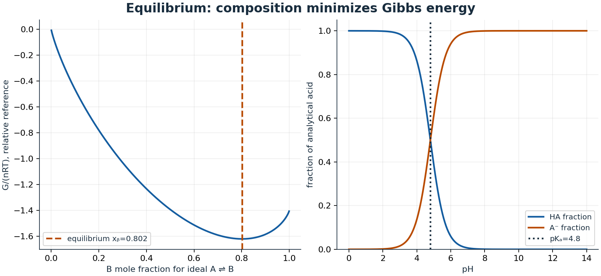
6.1.2 Rates, mechanisms, and molecular explanation
Rate laws are empirical or mechanistic statements, not usually read straight from an overall balanced equation. For a first-order disappearance, \(d[A]/dt=-k[A]\), concentration decays exponentially and half-life is \(\ln 2/k\). A second-order law gives different units for \(k\) and a concentration-dependent half-life. Pseudo-first-order behaviour can arise when another reactant is held effectively constant; that condition must be checked.
The Arrhenius model \(k=A\exp[-E_a/(RT)]\) predicts a straight line in \(\ln k\) versus \(1/T\) over a regime with approximately constant activation parameters. A catalyst changes the kinetic pathway and accelerates approach to equilibrium; it does not change \(K\) for the same overall reaction and conditions. Curvature, diffusion limitation, or changing mechanisms can invalidate a single fitted activation energy. Reaction-coordinate energy diagrams are conceptual landscapes, not measured time trajectories.
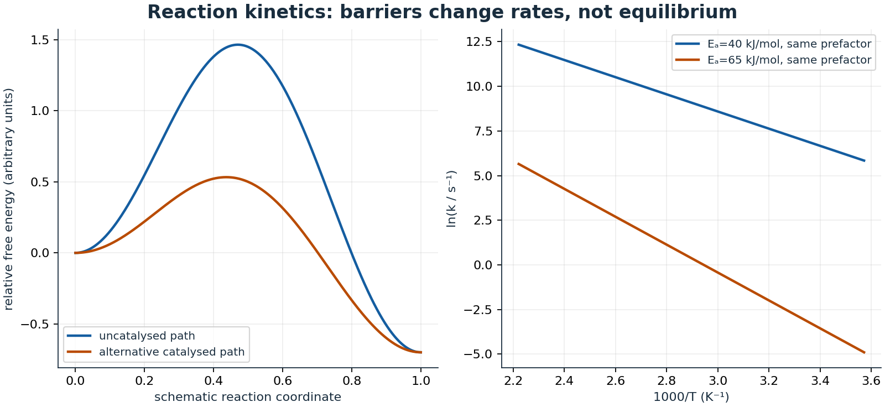
Atomic orbitals combine into molecular orbitals; filling bonding and antibonding states explains why electron count affects bond order. For a simple two-orbital picture, bond order is \((N_b-N_a)/2\). Delocalization in conjugated systems can lower energy and change optical transitions; resonance drawings represent one electronic structure, not rapidly switching molecules. Hybridization is a useful bonding model, not a directly photographed orbital shape.
Stereochemistry distinguishes connectivity from spatial arrangement. Enantiomers are nonsuperimposable mirror images; diastereomers are stereoisomers that are not mirror partners. Conformational rotation does not generally change configuration. Mechanistic curved arrows track electron-pair movement, with charge and valence checked at each step. Concerted substitution and stepwise ionization predict different stereochemical tendencies, but solvent, substrate, competing elimination, and intermediate structure matter. Recognizing an electron-rich donor and electron-poor acceptor is more transferable than memorizing a named reaction without its assumptions.
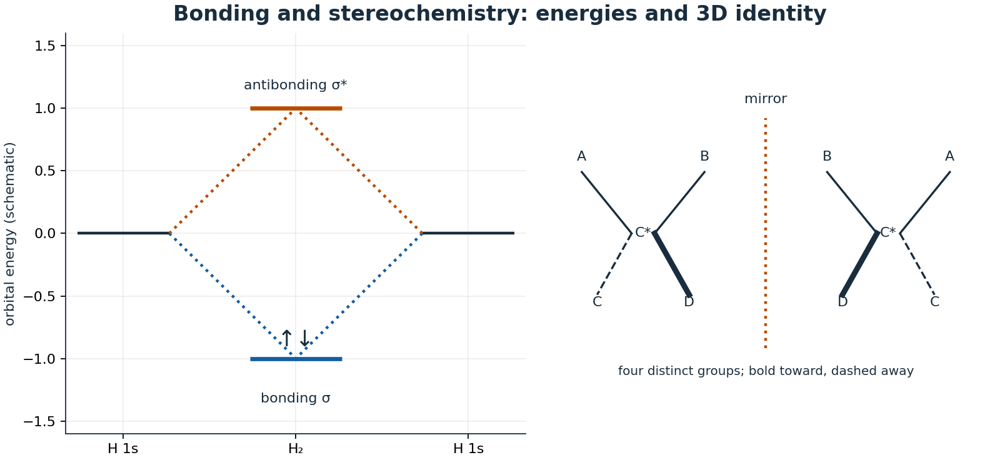
6.1.3 Polymers and biochemical function
Polymer properties depend on chain length distribution, branching, tacticity, crystallinity, cross-linking, and temperature. Number-average and mass-average molar masses differ:
Step-growth and chain-growth describe different growth mechanisms, not simply slow versus fast reactions. Glass transition marks a change in segmental mobility; melting concerns crystalline order. Cross-linked networks can exhibit elastic recovery while lacking ordinary melt flow. Mechanical behaviour therefore cannot be inferred from chemical repeat-unit identity alone.
Proteins combine amino-acid chemistry with folding, electrostatics, and solvent interactions. Lipids organize interfaces, carbohydrates store energy and encode recognition, and nucleic acids carry sequence information. Enzyme catalysis depends on structure and environment. The Michaelis–Menten initial-rate model \(v=V_{\max}[S]/(K_m+[S])\) assumes a suitable simple mechanism, approximately steady intermediate concentration, and negligible product effects. \(K_m\) is not universally a binding dissociation constant. Denaturation, inhibition, transport, and substrate depletion can all make a fitted saturation curve misleading.
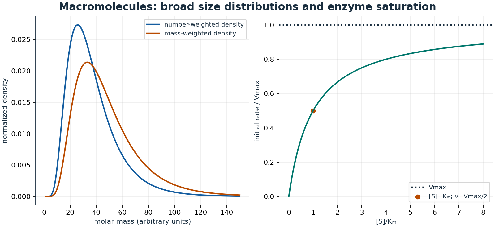
6.1.4 Characterization, uncertainty, and safety
FTIR probes vibrational modes that change dipole moment; Raman probes changes in polarizability. Their selection rules are complementary, not interchangeable peak catalogues. X-ray diffraction relates ordered spacings to \(2d\sin\theta=n\lambda\); peak broadening may reflect domain size, strain, or instrumental effects. SEM contrast depends on electron interactions, detector, charging, and sample geometry. AFM measures a tip–surface interaction through a feedback system, with finite tip geometry broadening narrow lateral features.
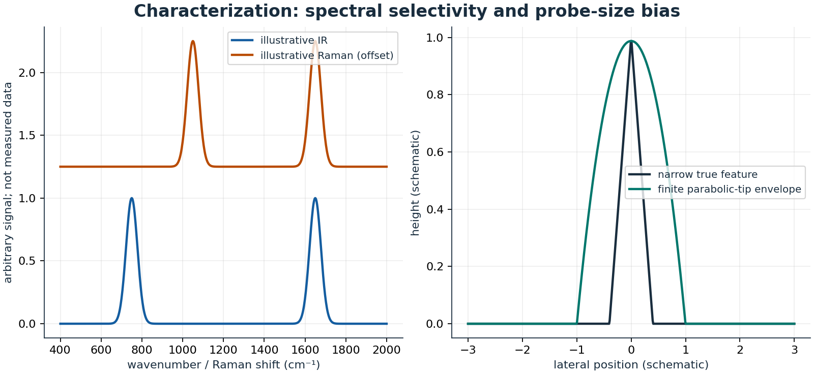
Use standards, blanks, repeat measurements, calibration, and complementary techniques. Distinguish instrument resolution from accuracy and detection limit from quantified concentration. Propagate uncertainty as in Section 4.1; a visually sharp peak is not proof of a unique phase or composition. Nanomaterial hazards depend on size, shape, exposure route, persistence, and surface chemistry. Consult institutional procedures and safety data, use trained supervision and appropriate containment, and assess waste handling. These notes deliberately omit operating recipes and do not authorize unsupervised chemical work.
6.1.5 Sources and scope
The Waterloo 2022/23 NE calendar motivates the chemical principles, organic chemistry, biochemistry, materials characterization, and macromolecular themes. See OpenStax Chemistry 2e for foundational balance, equilibrium, kinetics, and bonding. Calendar listings, including later-introduced courses, are scope references only and do not establish a personal study history. Historical notes follow; read alongside the editorial corrections.
7 Biology
7.1 Cell Biology
7.1.1 Cell Types
There exist many different types of cell throughout the many organs of the human body.
Tissues are a groups of cells with a similar structure and function, and there are 4 common tissues found throughout the human body; epithelial, connective, muscular, and nervous tissue.
7.1.1.1 Epithelial Tissue
7.1.1.2 Connective Tissue
7.1.1.3 Muscular Tissue
7.1.1.4 Nervous Tissue
7.2 Human Body
7.2.1 NeuroEndocrine System
Neuroendocrine System
Dopamine
Its name was derived from the IUPAC chemical name dihydroxyphenethylamine synthesized by removing a carboxyl group from its precursor L-DOPA, which is made from the biosynthesis of the amino acid L-tyrosine. L-DOPA is synthesized in the brain and kidneys, and it is the precursor to other useful biochemicals such as epinephrine and norepinephrine, and these (along with dopamine) are part of a class of chemicals known as catecholamines. It synthesized in plants and most animals.
Its a neurotransmitter that has several distinct dopamine pathways, one of which plays a major role in the motivation components of reward-motivated behaviour. Because of this, certain drugs which increase dopamine neuronal activity in brain are considered addictive. Dopamine pathways are also involved in motor control and controlling the release of various hormones, so it could possibly be said that compounds that release dopamine (addictive compounds) are physically addictive.
Dopamine pathways (groups of cells) form a dopamine system which is neuromodulatory. Neuromodulation is a physiological process by which a neutron uses one or more chemicals to regulate a diverse population of neurons. Neuromodulators are neurotransmitters that diffuse through neural tissue to affect low-acting receptors of many neurons. Other examples of neuromodulators include serotonin, acetylcholine, histamine, norepinephrine. They?re known to have modulatory effects on target areas such as decorrelation of spiking, increase of firing rate, sharpening of spatial tuning curves, and maintenance of increased spiking during working memory.
8 Psychology
Retained from the earlier Mental Map.
8.1 The Big 5
8.1.1 Openness
8.1.2 Conscientiousness
8.1.3 Extroversion
8.1.4 Agreeableness
8.1.5 Neuroticism
8.2 Theory of Multiple Intelligence’s
Differentiates human intelligence into specific "modalities" instead of looking at it in terms of general intelligence.
8.2.1 Musical-Rhythmic and Harmonic
Sensitivity to sounds, rhythms, tones, melodies and timber. People with high musical intelligence will tend have good pitch, can sing, play instruments and/or compose music. Mathematical and musical intelligence’s have some overlap when it comes to their thinking processes.
8.2.2 Visual-Spatial
8.2.3 Verbal-Linguistic
8.2.4 Logical-Mathematical
Ability to calculate, quantify, consider propositions and hypothesis, and carry out complete mathematical operations. It enables you to perceive connections and relationships using concepts and abstract symbolic thought.
8.2.5 Bodily-Kinesthetic
8.2.6 Interpersonal
8.2.7 Intrapersonal
8.2.8 Naturalistic
Human ability to discriminate among living things such as plants and animals, and other aspects of the natural world such as crystals, mountains, clouds, etc. Was of more notable value back when most people had to be hunters, gatherers, and/or farmers.
8.2.9 Existential
8.3 Cognitive Science
9 Computation
9.1 Self-taught DSA and LeetCode problem-solving patterns – study additions
AI-assisted editorial study additions: original explanations and illustrations, not verbatim historical writing nor a transcript. This is explicitly self-taught data structures and algorithms study, including LeetCode-style practice, not a claim of enrolment in a computer-science or SYDE DSA course.
9.1.1 Choose a representation before an algorithm
An abstract data type specifies permitted operations; a data structure implements them. An array supports constant-time indexing with contiguous slots, but insertion near the front shifts elements. A dynamic array has amortized constant-time append, although an individual resizing append is linear. A linked list has constant-time local insertion when the relevant node or predecessor is already known, but finding that location can cost linear time. Pointer overhead and cache locality matter in practice; equal asymptotic bounds do not imply equal performance.
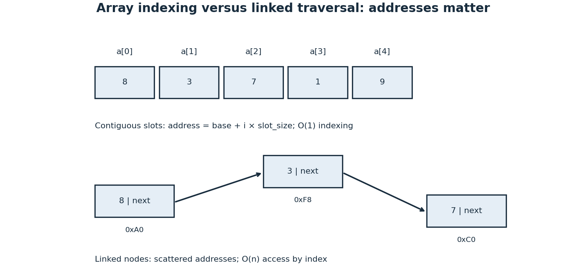
A stack removes the most recently added item and naturally models nested work. A queue removes the earliest item and supports breadth-first exploration. Implement queue removal without shifting an entire array, for example using a ring buffer or deque. Hash tables offer expected constant-time lookup under suitable hashing and load assumptions; collision-heavy worst cases may be linear. A key must obey the container’s equality and hash contract, and mutating a hash-relevant key while stored can break lookup.
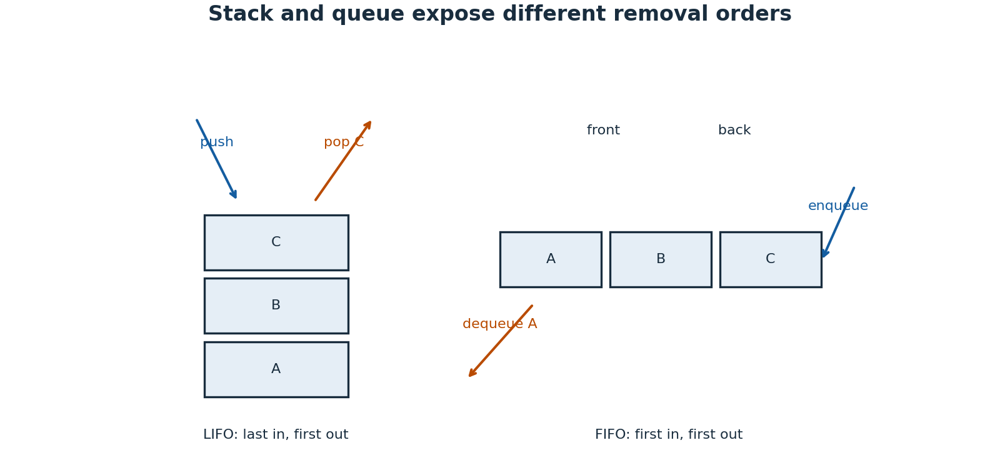
A binary search tree orders entire subtrees, not just immediate children. Search costs \(O(h)\) with height \(h\); balance is what makes that logarithmic. A binary heap maintains parent–child priority and completeness but does not globally sort siblings. A min-heap gives \(O(1)\) minimum access, \(O(\log n)\) insertion/removal, and \(O(n)\) bottom-up construction. In a zero-based array, children are \(2i+1\) and \(2i+2\). A heap is ideal for repeated best-next extraction, not arbitrary membership search.
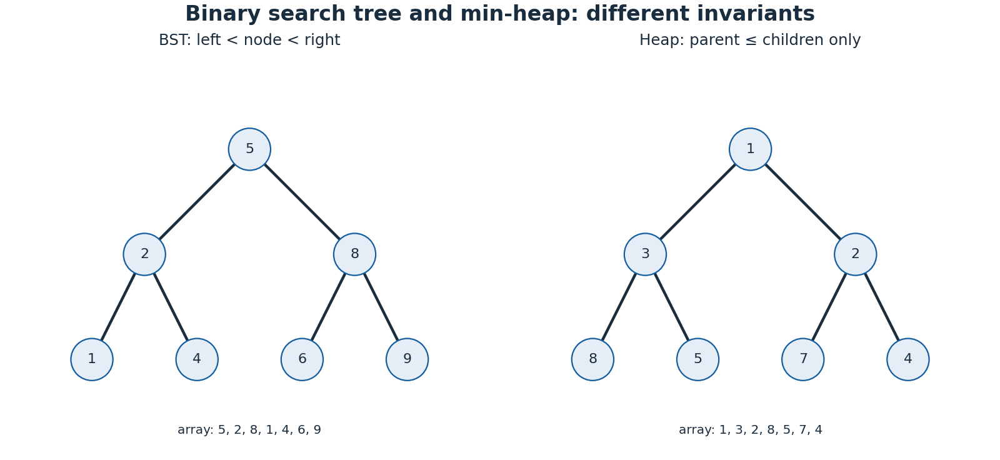
9.1.2 Complexity is a claim with a cost model
Big-O gives an asymptotic upper bound; Big-Theta gives a tight growth class. Specify input size, operation cost, auxiliary storage, recursion depth, and whether the claim is worst-case, expected, or amortized. Expected analysis averages over a stated randomness model; amortized analysis distributes cost over an operation sequence without requiring randomness. Sorting huge integers or comparing long strings changes the cost model. Outputting all subsets already requires exponential output, regardless of clever bookkeeping.
9.1.3 Graphs, dependencies, and connectivity
An adjacency list uses \(O(V+E)\) storage for a sparse graph. BFS with a FIFO queue finds fewest-edge distances in an unweighted graph. Mark a vertex when enqueued, and save its predecessor once; this prevents duplicate frontier growth and reconstructs a shortest path. DFS uses a stack or recursion and is useful for reachability, cycle reasoning, and finishing order, but does not generally find a shortest path. Both take \(O(V+E)\) with adjacency lists and constant-time visited checks.
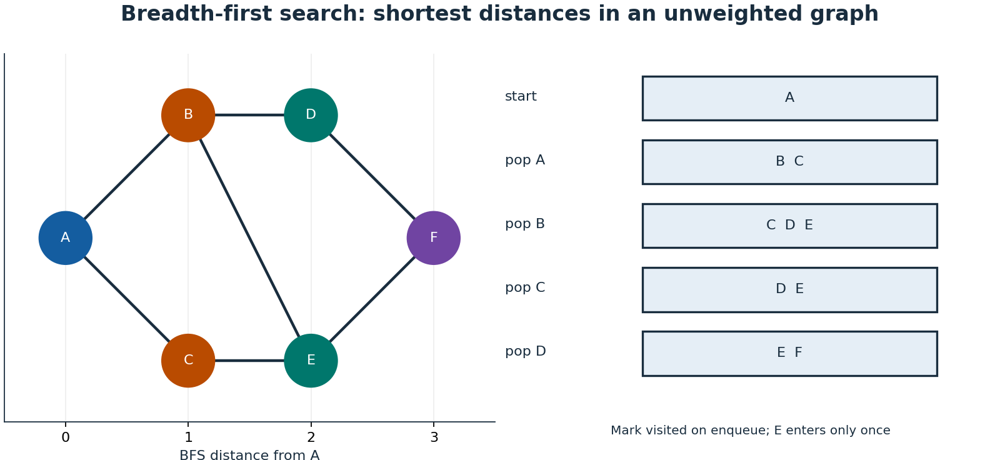
Dijkstra’s algorithm repeatedly settles the smallest tentative distance and relaxes outgoing edges. Its correctness requires nonnegative edge weights; a negative edge can improve an already settled vertex. With a heap, skip stale distance entries rather than processing them as new discoveries. Bellman–Ford handles negative edges and detects reachable negative cycles; finite shortest paths fail when such cycles can influence the destination.
Topological order exists only for a directed acyclic graph. Kahn’s method repeatedly removes indegree-zero vertices; processing fewer than \(V\) reveals a cycle. DFS reverse finishing order also works when cycles are correctly detected. Union–find answers incremental undirected connectivity: union by rank or size plus path compression gives near-constant amortized cost \(O(\alpha(n))\). It is not a path-finding algorithm and does not by itself support arbitrary edge deletion.
9.1.4 Binary search is an invariant, not a remembered template
For sorted \(a\), lower bound seeks the first index whose value is at least target \(t\). Maintain a half-open unresolved interval \([lo,hi)\), with all indices below \(lo\) known smaller than \(t\) and all indices at or above \(hi\) known at least \(t\). Initially \(lo=0\), \(hi=n\), so both outside assertions are vacuous.
While \(lo<hi\), choose \(mid=lo+\lfloor(hi-lo)/2\rfloor\).
If \(a[mid]<t\), assign \(lo=mid+1\); otherwise assign \(hi=mid\).
Return \(lo\) when the interval is empty. The result may equal \(n\).
The interval strictly shrinks and the assertions survive each update. Empty input, duplicates, all-smaller, all-larger, and exact-boundary cases are essential tests. For binary search on an answer, first prove the feasibility predicate is monotone; numeric order alone does not guarantee that property.
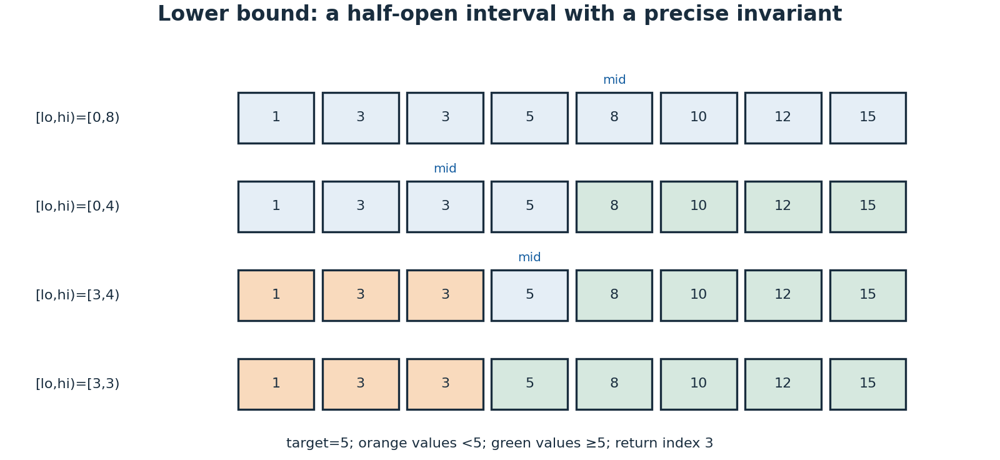
9.1.5 Sorting, recursion, and optimal substructure
Merge sort divides, solves smaller instances, and merges sorted outputs. Taking from the left on equal keys preserves stability, meaning equal-key records retain original relative order. Standard array merge sort uses \(O(n\log n)\) time and \(O(n)\) auxiliary space. Quicksort is typically fast and expected \(O(n\log n)\) with suitable randomization, but ordinary versions have quadratic worst cases and are unstable. Heapsort offers worst-case \(O(n\log n)\) with constant auxiliary array storage but is unstable. Insertion sort is quadratic worst-case, stable with careful comparisons, and useful for small or nearly sorted inputs.
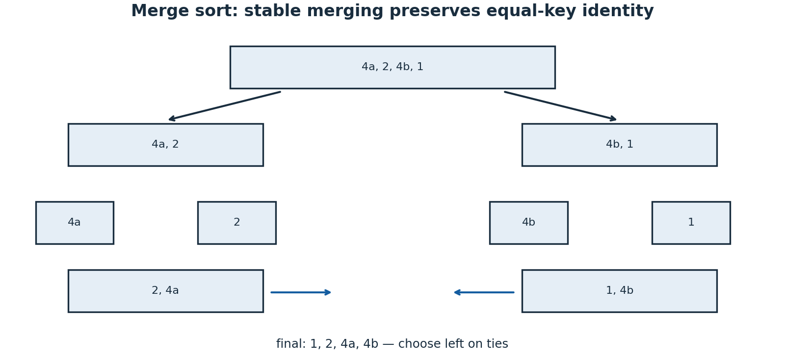
Every recursive function needs a base case and a decreasing progress measure. Backtracking explores choices and undoes state before exploring siblings; copying results avoids later mutation corrupting saved answers. Memoization helps only when repeated subproblems share a sufficient state description. Dynamic programming requires a recurrence, boundary values, dependency order, and a proof that no relevant history was discarded.
For right/down grid paths, \(D[i,j]=D[i-1,j]+D[i,j-1]\), with boundary row and column equal to one. Obstacles change the recurrence to zero at blocked cells. A row-buffer implementation uses \(O(\text{columns})\) space because only top and left are needed. Greedy decisions need an exchange argument or another correctness proof: locally attractive choices are not automatically globally optimal. Earliest finishing time solves unweighted interval scheduling; choosing the shortest interval does not generally do so.
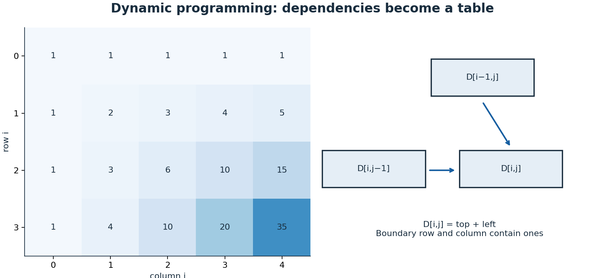
9.1.6 Reusable patterns and falsifiable tests
Prefix sums \(P[0]=0\), \(P[i+1]=P[i]+a[i]\) answer half-open range sums by \(P[r]-P[l]\), including negative values. A variable-length sum window usually needs nonnegative entries so extension cannot decrease the sum. For arbitrary signs, a prefix-sum frequency map can count target-sum subarrays; initialize the zero prefix count to one. Sorted two-pointer pair search relies on ordering: increasing the left endpoint raises the sum, while decreasing the right lowers it. A longest-substring-without-repeats window instead maintains frequency or last-seen invariants, not numeric monotonicity.
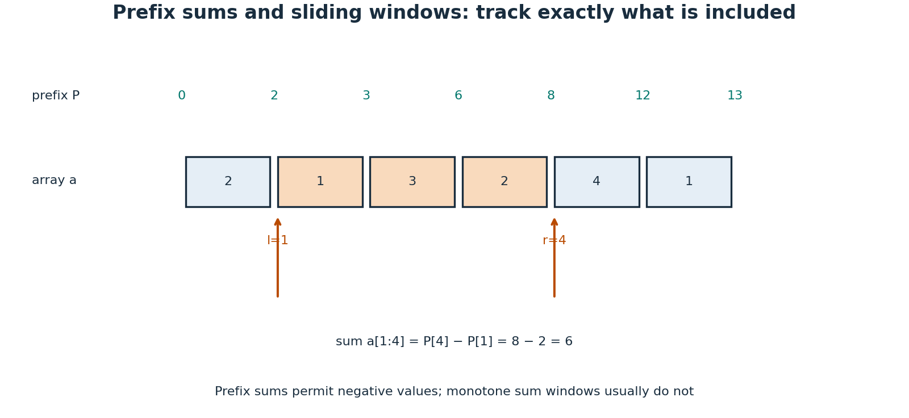
Test empty and singleton inputs, duplicate keys, negative numbers, overflow limits, disconnected graphs, cycles, unreachable targets, and deep recursion. Compare optimized solutions against brute force on small exhaustive inputs. Check properties such as sorted output preserving the input multiset, valid reconstructed paths, and heap order after every mutation. Practice should end with an explained invariant and failure case, not just an accepted submission.
9.1.7 Independent learning references
See MIT OpenCourseWare: Introduction to Algorithms. The Waterloo 2022/23 SYDE calendar lists DSA subject matter, but is used only as a topic comparison; this section makes no SYDE 223 completion claim. Historical notes follow; read alongside the editorial corrections.
Main Philosophy: Using computers proficiently is simply a matter of having a coders mindset and knowing how to find out how to do something. That is why this extensive list has been created so that I don?t have to remember a bunch of different commands n stuff.
9.2 Fundamentals of Computation
CPU –> Does computations at the scalar level
GPU –> Does computations at the vector level
MPU –> Does computations at the tensor level
9.2.1 CPU’s
Languages Included: LINUX, python, c++, fortran.
9.2.2 Useful Wikipedia Articles to Read
Unix Philosophy
Gives a description of the philosophies that went into designing Unix, and how those philosophies influenced the coding world in general.
9.3 LINUX
Basic Commands
LINUX is a bit different from a language (I think its considered an os (operating system)), but it has its set of useful things to know in order to do stuff like any other coding language like;
| ssh servername | cryptographic network protocol for operating network services securely over an unsecured network. I started out with nlogn, BASICALLY ALLOWS ACCESS TO A SERVER |
|---|---|
| ls | lists all files and subdirectories in the current directory (directory is a fancy asshole talk for folder) |
| ls -a | lists dot files as well |
| cd pathname | stands for change directory, will take you to the directory you specify, if you want you can access directories in other directories but extending the path |
| cd | if no directory is specified the cd command will simply take you back to your earliest directory. |
| cd .. | will take you one directory back, and if your at the earliest directory it will take you to the home directory. |
These commands are enough to give you access to anyone files in a server you have access to; to read and/or edit files you can use vim, emacs, or any other LINUX text editor which have their own set of useful commands.
To edit a file type;
vim (or emacs) filename, and the screen will change and display the information in the file you requested to edit. (see subsection on VIM)
Additional Commands
What we have gone through is the basic LINUX/VIM commands. When I use the word basic LINUX commands or basic VIM commands, what I really mean is that understanding these commands is of the utmost importance as they will significantly speed up the process of writing code and troubleshooting. It shouldn?t take too long for a newcomer to get used to using these, especially because they are used so frequently. What I lay out now are things that will be used less frequently...
| sbatch filename | submits things to the queue |
|---|---|
| squeue or qstat | lets you see files in the queue |
| vimdiff | compares vim scripts and outputs differences |
| head filename | displays the first 10 lines of that file |
| tail filename | displays the last 10 lines of that file |
| git clone | copies someones set of code on githib |
| quota -s | shows the amount of allowed space, and the amount of space taken up |
| rm filename | removes file named filename. |
| rm -r directoryname | removes directory named directoryname and all of its contents so long as there are no write protected file |
| rm -rf directoryname | removes directory named directoryname and force removes any write protected files (I would recommend using this instead of rm -r in almost all cases). |
| grep -r keyword . | The grep command is used to search text (in this example is searches for the word keyword). It searches the given file for lines containing a match to the given strings or words. It is one of the most useful commands on Linux and Unix-like system. Let us see how to use grep on a Linux or Unix like system. The -r ensures that it searches through all files in a directory and the . symbol specifies that you want to search through the directory you are in. |
You can also copy (cp) and move (mv) directories using -r as an additional argument;
| cp -r directoryname | copies directory and the entirety of the directories contents, and like the original copy command, it requires a path and there is the option of renaming the directory upon pasting it in its new path in the directory. |
|---|---|
| mv -r directoryname | moves directory and the entirety of the directories contents, and like the original copy command, it requires a path and there is the option of renaming the directory upon pasting it in its new path in the directory. |
9.3.1 VIM
| i | insert mode: this command allows you to type words while inside of a folder (i.e. edit). note: if you copy text from somewhere using ?c, ?v can be used to paste that specific thing, however you can store something different in your ?copy? space by using visual mode (v). |
|---|---|
| v | visual mode: lets you copy and paste more accurately. the copy you perform here will be different from the copy you perform with ?c. when you want to copy in visual mode you can highlight the desired text and cut using d, copy using y (yank), and paste using p. |
| / | essentially the command f of vim |
| :vsplit filename | :vsplit command can be used to look at two documents simultaneously, however you may only navigate through and/or edit one file at a time. to navigate to different screens you can use shift W(h, j, k, l) to navigate up, down, left and right. |
| :number | sends you to the line (number) |
| :wq or shift ZZ | quits with saving |
| :q! | quits without saving |
| :%s/oldone/newone | replaces any segments of text that say oldone with text that says newone |
Finally, to run code you need to know how to start it. My alias is currently pydev for interpreted python scripts, and its /PATH/__filename__ for c or fortran code (./__filename__ if you are already in the directory which possesses __filename__). To run to __filename__ script, type; alias __filename__ , and depending on the file there may or may not be arguments needed as inputs; alias __filename__ argv[1] argv[2] ? argv[N], for example, (you can use /argv inside the script to find out if there are any arguments in it).
With just 12 commands we went from incapable of anything to able to being able to navigate directories and efficiently edit files. It may not seem like much but no one?s ever been quoted saying all commands are created equal. To summarize, you can now;
log into a server
navigate through directories in that serves
list off files and subdirectories inside any directory
open any file for editing
enter into insert mode to edit scripts
enter into visual mode to efficiently move code around
display multiple files at once while editing
use command f
go directly to the line of code you want (useful for troubleshooting)
quit files with saving
quit files without saving
run files
9.3.1.1 Additional VIM Commands
Some additional VIM commands;
| shift AA | takes your cursor to the end of a line |
|---|
9.3.2 GitHub
GitHub is a website where you can upload your own directories containing files so that other people can use them, and download directories such that you can use other peoples programs.
To clone (or download) someones directories from their GitHub repository, copy the URL that’s displayed after you click the green clone button on their GitHub repository, and type;
git clone https://github.com/the_link_will_be_here
Now, more importantly, to upload you own directory to your repository. Its stupidly difficult (its not that bad but very misleading for how simple it is). Start by clicking add new repository, and if you think pressing initialize this repository with a README.md is the better idea, your WRONG. Opting to just press create repository after (choosing to) naming it after the directory you want to copy over is the better choice. It will give you suggestions about what to do to properly upload your code to GitHub;
git init
git add README.md
git commit -m "first commit"
git remote add origin
https://github.com/l2mcgrat/PATH.git
git push -u origin master
You actually want to follow a very similar set of instructions, but the instructions they give you aren’t perfect;
git init
git add *
git commit -m "doesn’t matter just type something"
git remote add origin https://github.com/PATH.git
git push -u origin master
9.3.3 Terminal
Here’s some terminal commands;
| command T | quick key for adding a new tab to terminal |
|---|---|
| command 2 | will take you to the second tab |
9.4 python
the B.O.A.T when it comes to interpreted languages
| import numpy as np | you can import numpy, and you can use any function inside numpy (like creating a vector of 8 zeros) by typing np before the function at hand |
|---|---|
| array = np.zeros( 8 , float ) | you can import numpy, and you can use any function inside numpy (like creating a vector of 8 zeros) by typing np before the function at hand. |
| import pythonfile | different way of using functions from files you’ve imported |
| array = pythonfile.pythonfunction( 8 , float ) | which requires more work, but its easier to decipher when comments aren?t present (which they usually aren?t) |
| from sys import argv | required for use of argv[] |
| argument1 = argv[1] | allows you to run a file with arguments as inputs which I find is frequently useful |
9.5 C++
Object Oriented language that is way less aesthetic than python? but its faster though.
| cout “string” endl | prints string |
|---|---|
| cout thing endl | prints whats inside the thing variable |
9.6 Other Peoples Programs
Many other people write highly complex programs to perform things like simulating physical systems. MMTK (Molecular Modeling Toolkit) and MoRiBS (Molecular Rotation in Bosonic Solvents) are examples of these types of packages.
It is useful to know the in?s and out?s of certain programs in order to effectively use them. While most programmers should extensively document their code and prepare enough README files for it such that new users can easily use it, this habit is uncommon. Following a need to provide separate external documentation, I present my notes on several specific computer programs.
9.6.1 MMTK
9.6.1.1 Chapter 1: Introduction
The Module Reference describes all classes and functions intended for end-user applications module by module, using documentation extracted directly from the source code. References from the introductory sections to the module reference facilitate finding the relevant documentation.
The Molecular Modelling Toolkit (MMTK) presents a new approach to molecular simulations. It is not a ?simulation program? with a certain set of functions that can be used by writing more or less flexible ?input files?, it is a collection of library modules written in an easy-to-learn high-level programming language, Python. This approach offers three important advantages.
Application programs can use the full power of a general and well-designed programming language
Application programs can profit from the large set of other libraries that are available for Python. These may be scientific or non-scientific; for example, it is very easy to write simulation or analysis programs with graphical user interfaces (using the module Tkinter in the Python standard library), or couple scientific calculations with a Web server.
Any user can provide useful additions in separate modules, whereas adding features to a monolithic program requires at least the cooperation of the original author.
9.6.1.2 Chapter 2: Overview
This chapter explains the basic structure of MMTK and its view of molecular systems. Every MMTK user should read it at least once.
MMTK applications are ordinary Python programs, and can be written using any standard text editor. MMTK tries to be as user-friendly as possible for interactive use. For example, lengthy calculations can usually be interrupted by typing Control-C. This will result in an error message (?Keyboard Interrupt?), but you can simply go on typing other commands. Interruption is particularly useful for energy minimization and molecular dynamics: you can interrupt the calculation at any time, look at the current state or do some analysis, and then continue.
Modules
MMTK is a package consisting of various modules, most of them written in Python, and some in C for efficiency. The individual modules are described in the Module Reference. The basic definitions that almost every application needs are collected in the top-level module, MMTK. The first line of most applications is therefore;
from MMTK import *
The definitions that are specific to particular applications reside in submodules within the package MMTK. For example, force fields are defined in MMTK.ForceFields, and peptide chain and protein objects are defined in MMTK.Proteins.
Python provides two ways to access objects in modules and submodules. The first one is importing a module and referring to objects in it, e.g.;
import MMTK import MMTK.ForceFields universe = MMTK.InfiniteUniverse(MMTK.ForceFields.Amber94ForceField())
The second method is importing all or some objects from a module;
from MMTK import InfiniteUniverse from MMTK.ForceFields import Amber94ForceField universe = InfiniteUniverse(Amber94ForceField())
The first method takes less work and is more specific when a module is called, whereas the second method is more specific earlier on but doesn’t require you to type MMTK.Module before using something within a module.
Objects
MMTK is an object-oriented system. Since objects are everywhere and everything is an object, it is useful to know the most important object types and what can be done with them. All object types in MMTK have meaningful names, so it is easy to identify them in practice. The following overview contains only those objects that a user will see directly. There are many more object types used by MMTK internally, and also some less common user objects that are not mentioned here. Chemical Objects Include;
Atoms
Groups
Molecules
Molecular Complexes
These objects form a simple hierarchy: complexes consist of molecules, molecules consist of groups and atoms, groups consist of smaller groups and atoms. All of these, except for groups, can be used directly to construct a molecular system. Groups can only be used in the definitions of other groups and molecules in the chemical database.
A number of operations can be performed on chemical objects, which can roughly be classified into inquiry (constituent atoms, bonds, center of mass etc.) and modification (translate, rotate).
There are also specialized versions of some of these objects. For example, MMTK defines proteins as special complexes, consisting of peptide chains, which are special molecules. They offer a range of special operations (such as selecting residues or constructing the positions of missing hydrogen atoms) that do not make sense for molecules in general.
Collection objects represent arbitrary collections of chemical objects. They are used to be able to refer to collections as single entities. For example, you might want to call all water molecules collectively solvent. Most of the operations on chemical objects are also available for collections.
Force field objects represent a precise description of force fields, i.e. a complete recipe for calculating the potential energy (and its derivatives) for a given molecular system. In other words, they specify not only the functional form of the various interactions, but also all parameters and the prescriptions for applying these parameters to an actual molecular system.
Universes define complete molecular systems, i.e. they contain chemical objects. In addition, they describe interactions within the system (by a force field), boundary conditions, external fields, etc. Many of the operations that can be used on chemical objects can also be applied to complete universes.
A minimizer object is a special ?machine? that can find local minima in the potential energy surface of a universe. You may consider this a function, if you wish, but of course functions are just special objects. Similarly, an integrator is a special ?machine? that can determine a dynamical trajectory for a system on a given potential energy surface.
Minimizers and integrators can produce trajectories, which are special files containing a sequence of configurations and/or other related information. Of course trajectory objects can also be read for analysis.
Variable objects (not to be confused with standard Python variables) describe quantities that have a value for each atom in a system, for example positions, masses, or energy gradients. Their most common use is for storing various configurations of a system.
Normal mode objects contain normal mode frequencies and atomic displacements for a given universe.
The Chemical Database
For defining the chemical objects described above, MMTK uses a database of descriptions. There is a database for atoms, one for groups, etc. When you ask MMTK to make a specific chemical object, for example a water molecule, MMTK looks for the definition of water in the molecule database. A database entry contains everything there is to know about the object it defines: its constituents and their names, configurations, other names used e.g. for I/O, and all information force fields might need about the objects. MMTK comes with database entries for many common objects (water, amino acids, etc.).
Forcefield
MMTK contains everything necessary to use the Amber 94 force field on proteins, DNA, and water molecules. It uses the standard Amber parameter and modification file format. In addition to the Amber force field, there is a simple Lennard-Jones force field for noble gases, and a deformation force field for normal mode calculations on large proteins. MMTK was designed to make the addition of force field terms and the implementation of other force fields as easy as possible. Force field terms can be defined in Python (for ease of implementation) or in C or Fortran (for efficiency). This is described in the developer?s guide.
Units
Since MMTK is not a black-box program, but a modular library, it is essential for it to use a consistent unit system in which, for example, the inverse of a frequency is a time, and the product of a mass and the square of a velocity is an energy, without additional conversion factors. Black-box programs can (and usually do) use a consistent unit system internally and convert to ?conventional? units for input and output. The unit system of MMTK consists mostly of SI units of appropriate magnitude for molecular systems:
nm for lengths
ps for times
atomic mass units (g/mol) for masses
kJ/mol for energies
THz (1/ps) for frequencies
K for temperatures
elementary charges
The module MMTK.Units contains convenient conversion constants for the units commonly used in computational chemistry. For example, a length of 2 angstroms can be written as 2*Units.Ang, and a frequency can be printed in wavenumbers with print frequency/Units.invcm.
9.6.2 Coop Project Using MMTK
To become confident that our MMTK code is an accurate depiction of nature, we use MoRiBS code (molecular rotation in bosonic solvents) as a benchmark because we know its an accurate representation of reality. To fix any bugs that may be present in the MMTK code, we strip down our Hamiltonian such that only the \( \hat{T}_{rot} \) remains.
9.6.2.1 Rotation Only
So our Hamiltonian is;
and our first set of results is;
| Temperature | Erot MoRiBS (in Kelvin) | Erot MMTK (in Kelvin) |
|---|---|---|
| 10.0 K | 4.338763 | 5.249981 |
| 20.0 K | 22.88446 | 45.63629 |
| 30.0 K | 39.46542 | 95.68960 |
| 50.0 K | 71.99282 | 188.9862 |
These values clearly disagree as you can see in the figure below. We were getting this result for a while and couldn’t figure out why. We stripped the code down to its basics and found the error inside the deleul function inside the RotOnly integrator. The function was responsible for extracting euler angles \( \phi, \) \( \theta, \) and \( \chi, \) from a rotation matrix \( \vec{\vec{R}}(\phi,\theta,\chi) \), and it was miscomputing the values of \( \phi \) and \( \chi \).
The results after the bug fix were as follows;
| Temperature | Erot MoRiBS (in Kelvin) | Erot MMTK (in Kelvin) |
|---|---|---|
| 10.0 K | 4.338763 | 4.1465 |
| 20.0 K | 22.88446 | 22.638 |
| 30.0 K | 39.46542 | 39.894 |
| 50.0 K | 71.99282 | 69.544 |
which generated the plot;
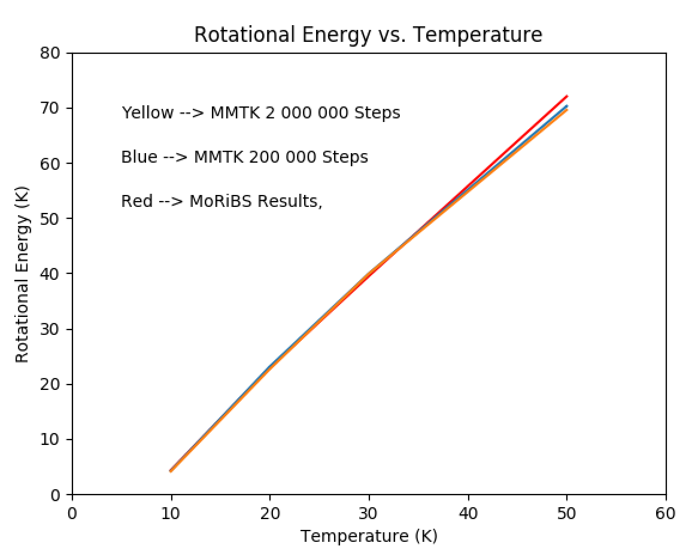
we can safely move away from the rotation only testing.
9.6.2.2 Translation Only
Our Hamiltonian is as follows;
and so our solution should be roughly \( \frac{3 N k_{B} T}{2} \). We ran 5 simulations at \( T = \Big( 10 , 20 , 30 , 50 , 100 \Big) \), each with just 1 molecule (\( N = 1 \)). These are our results.
| Temperature | Expected Solution | Etrans MMTK | Error |
|---|---|---|---|
| 10.0 K | 15.0 K | 15.854 K | 0.0645 K |
| 20.0 K | 30.0 K | 29.537 K | 0.1334 K |
| 30.0 K | 45.0 K | 44.704 K | 0.1990 K |
| 50.0 K | 75.0 K | 74.209 K | 0.3388 K |
| 100.0 K | 150.0 K | 146.349 K | 0.6692 K |
Firsly I want to clear up that the error is not meant to represent the difference between the expected solution and the acquired solution. It is simply the standard deviation of the distribution used to obtain Etrans MMTK, which itself is an average value.
The data seems to agree well with the theoretical prediction.
9.6.2.3 Rotation + Potential
Our Hamiltonian is as follows;
now we get into which potential we are using. There are three;
and the most complicated one;
I’m not completely sure about the inner workings of MBPol (Many Body Polarizeable), but I think the system allows for changing of dipole moments for many body problems.
We will use MBPol for the simulations we compare to experimental research papers, but to test our running script we will interchangeably use to other two potentials to ensure our code behaves appropriately. MBPol is easily the most accurate potential but its the hardest to implement and also hard to use. The second potential mentioned refers to dipole-dipole interactions, which was already prepared in MMTK when I started this project. I simply had to adapt it for water. The first potential is the simplest. Its just a electric field interacting with a water molecule. Its so simple in fact it has an exact solution which we can compute using perturbation theory. This is helpful for validating the solution of a script.
Another way of having confidence in your simulation results is to run the same simulation twice using two different scripts (in this case MoRiBS and MMTK), and if they output the same results you can have confidence.
We will compare the simulations using the \( \vec{E}_{field} \) potential first (1000 steps);
| Temperature | Erot + Epot MoRiBS | Erot + Epot MMTK |
|---|---|---|
| 10.0 K | ||
| 20.0 K | ||
| 30.0 K | ||
| 50.0 K | ||
| 100.0 K |
9.6.3 MoRiBS
MoRiBS stands for Molecular Rotation in Bosonic Solvents, and as the name suggests, it simulates molecular rotation in bosonic solvents. A boson follows Bose-Einstein statistics (see section on Bose-Einstein statistics) and has half integer spin which has its own consequences (will go into later if I get involved with Worm Algorithm and SuperFluids).
For the nvm_prop folder, type the following to output 3*181 files;
for x in {0..180}; do sbatch - - export=ithe=$x generate.sh;done
From there, you can compile the 3*181 files into 3 files using the /compile.x command.
9.6.3.1 random instructions
Whilst in Tapas’ linear rotor MoRiBS /MoRiBS-PIMC/examples/linear_pigs directory;
if you type; python script_submission_analysis_MoRiBS.py -h; it prints out list of instructions for running MoRiBS with certain arguments.
example argument; python script_submission_analysis_MoRiBS.py tau submission PIMC HF HF 0.1 -d 1.865 -N 10 -Block 1000 -Pass 200 --ROTMOVE -R 10.05
To copy files from a server (in this case l2mcgrat@graham.computecanada.ca) to my desktop;
scp l2mcgrat@graham.computecanada.ca:/home/l2mcgrat/MBPolPaper2/N2P2.png .
10 Machine Learning/Data Science/Artificial Intelligence
Retained from the earlier Mental Map.
10.1 Machine Learning
10.1.1 Model Representation and Cost Function
10.1.1.1 Model Representation: Linear Regression
Example) Predicting Housing Prices
This linear regression example is a supervised learning problem because we are given the correct answer for this problem and we use it to train a function h that predicts the correct house price as a function of the size in \( ft^{2} \). This is also categorized as a regression problem because were trying to pick what the function considers most accurate output from a continuous set of possible answers, rather than choosing what the function considers the most accurate output from discrete set of possible answers, which we could categorize as a classification problem.

Figure: Linear Regression Housing Prices
Andrew Ng’s notation; \( \vec{m} \equiv \) number of training examples, \( \vec{x} \equiv \) "input" variable/features, \( \vec{y} \equiv \) "output" variable/target, \( (x, y) \equiv \) one training example, and \( (x^{(i)}, y^{(i)}) \) is the \( i^{th} \) training example.

Figure: Theory of Linear Regression
10.1.1.2 Cost Function
Continuing from the linear regression section, the cost function is a tool we use to get the best possible straight line (\( h_{\theta} (x) = \theta_0 + \theta_1 x \)) through the data. We want to choose values for \( \theta_0 \) and \( \theta_1 \) so that \( h_{\theta} (x) \) is close to \( y \) for all \( m \) examples. Formally we want to minimize;
for every training example. What we are doing here is minimizing the cost function \( J(\theta_0, \theta_1) \) (\( \equiv \frac{1}{2m} \sum_{i=1}^{m} ( \hat{y}^{(i)} - y^{(i)} )^2 = \frac{1}{2m} \sum_{i=1}^{m} ( h_{\theta} (x^{(i)}) - y^{(i)} )^2 \)) to get the best line.
For the full linear regression we have;
Hypothesis: \( h_{\theta} (x) = \theta_0 + \theta_1 x \)
Parameters: \( \theta_0, \theta_1 \)
Cost Function: \( J(\theta_0, \theta_1) \equiv \frac{1}{2m} \sum_{i=1}^{m} ( \hat{y}^{(i)} - y^{(i)} )^2 \)
Goal: \( \min_{\theta_0, \theta_1} J(\theta_0, \theta_1) \)
For the simplified form (\( \theta_0 = 0 \)) of linear regression we have;
Hypothesis: \( h_{\theta} (x) = \theta_1 x \)
Parameter: \( \theta_1 \)
Cost Function: \( J(\theta_1) \equiv \frac{1}{2m} \sum_{i=1}^{m} ( \hat{y}^{(i)} - y^{(i)} )^2 \)
Goal: \( \min_{\theta_1} J(\theta_1) \)
where the hypothesis function must go through the origin. Note the hypothesis function (\( h_{\theta} (x) = \theta_1 x \)) is a function of \( x \), whereas the cost function (\( J(\theta_1) \)) is a function of \( \theta_1 \). Lets examine the cost function is different circumstances, perfect line, and imperfect line;
In the perfect line example we have \( \theta_1 = 1 \).
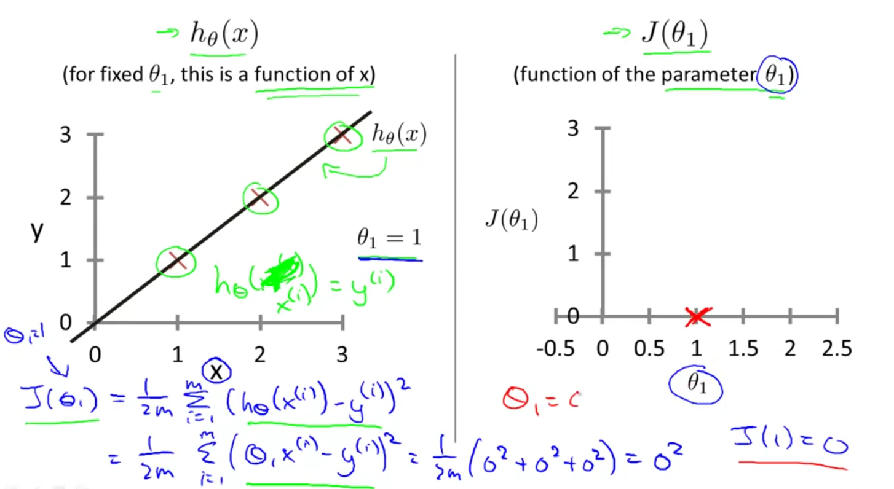
Figure: Perfect Line
In the imperfect line example we have \( \theta_1 = 0.5 \) with \( J(\theta_1 = 0.5) = 0.58 \).
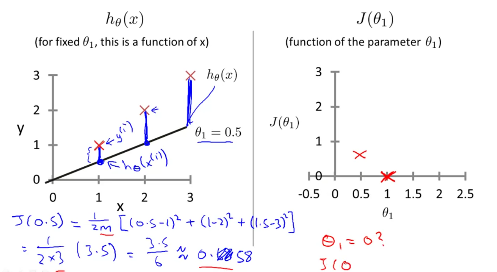
Figure: Imperfect Line
Cost function as a function of \( \theta_1 \) (minimized at \( \theta_1 = 1 \));
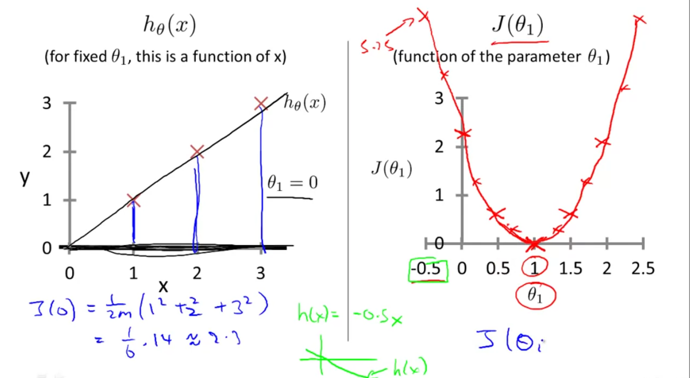
Figure: Cost Curve
The figure below represents a simple housing market example. This data can be plotted with matplotlib.

Figure: 1D Example
The figure below the general shape of the cost function for a system like this with 2 parameters. This can be done with matplotlib.
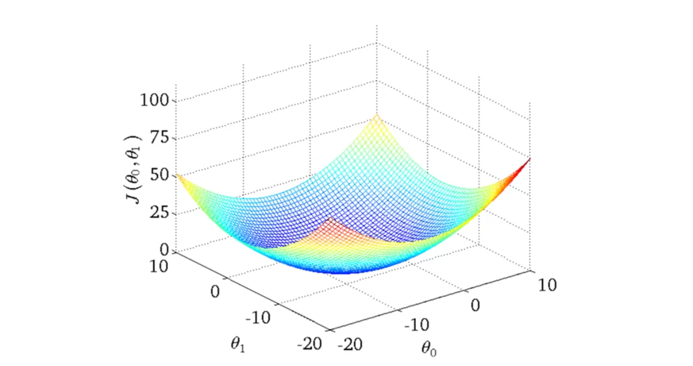
Figure: 2D Cost Curve
The figure below is a slightly different housing market example with the 2D parabola drawn as a contour plot. This can be done with matplotlib.

Figure: 2D Contour Plot Example
10.1.1.3 Gradient Descent
Goal: Want to minimize \( J( \theta_0, \theta_1 ) \).
Execution: Initialize \( J( \theta_0, \theta_1 ) \). Keep Changing \( \theta_0 \) and \( \theta_1 \) until \( J( \theta_0, \theta_1 ) \) is minimized.

Figure: Gradient Descent Plot
For the figure above, \( \theta_0 \) and \( \theta_1 \) will change so that they are in the blue region and not the red region.
Gradient Descent Algorithm:
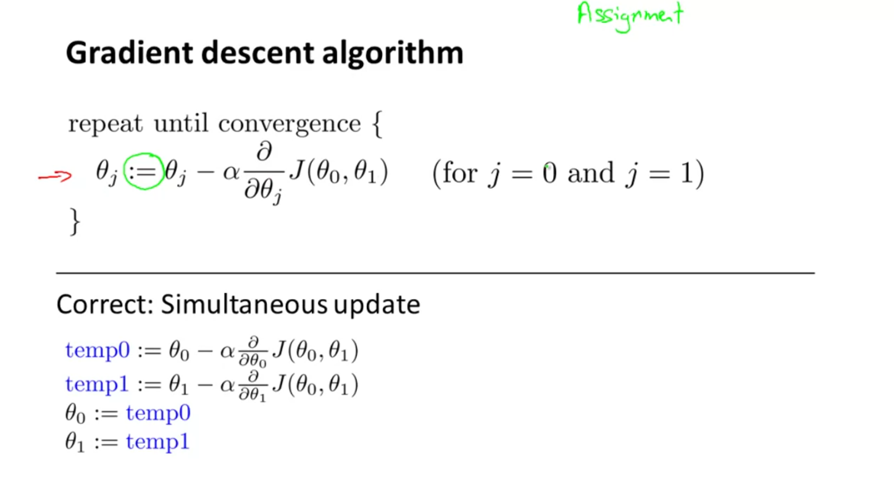
Figure: Correct Gradient Descent Algorithm
Remember to do simultaneous updating of the parameters that make up the cost function, instead of what is incorrectly displayed in the figure below:
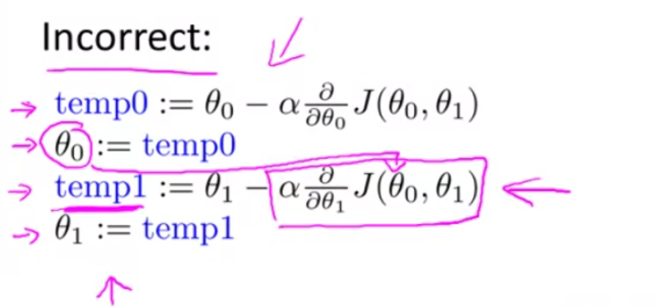
Figure: Incorrect Gradient Descent Algorithm
The following figure graphically displays the intuition behind gradient descent by applying concepts from calculus;
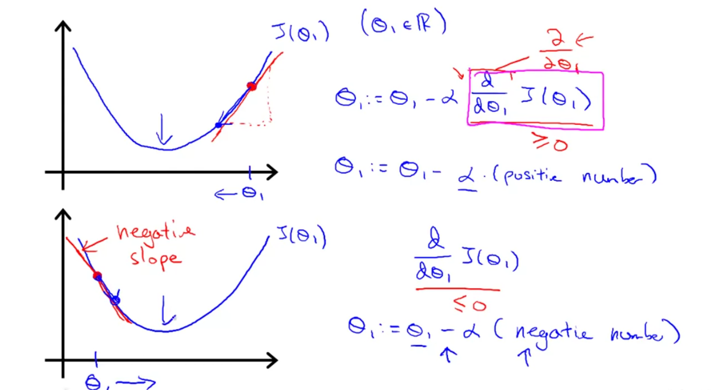
Figure: Gradient Descent Intuition
The value of the learning rate \( \alpha \) determines how much the parameter \( \theta_j \) changes with each gradient descent step. If \( \alpha \) is too small, the gradient descent algorithm will approach the minimum slower than it could have if \( \alpha \) was larger. If \( \alpha \) is too small, the gradient descent algorithm will overshoot the minimum and likely end up giving a larger \( J ( \theta_0 , \theta_1 ) \) that what could be achieved with lower \( \alpha \). Gradient descent will converge so some local minimum no matter what even if the learning rate is very small, as seen in the figure below;

Figure: Learning Rate Intuition
We will now go through gradient descent for linear regression.
Recap:

Figure: Recap of Concepts
From the figure above, we will be looking at the derivative term in the figure below;
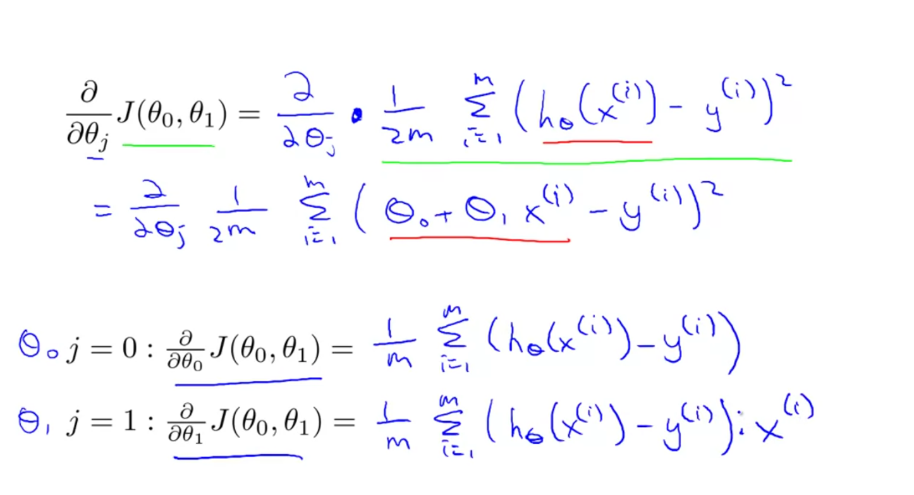
Figure: Calculation of Cost Function
We put it all together with the following gradient descent algorithm, shown in the figure below;
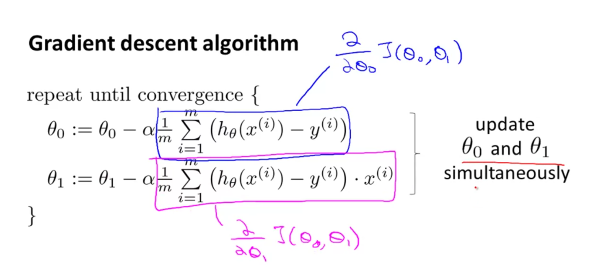
Figure: Gradient Descent Algorithm in Full
The figure above shows the full extend of this simple gradient descent algorithm.
Another type of gradient descent algorithm is called batch gradient descent, which uses all the training examples before updating parameters.
10.1.2 Multivariate Linear Regression
It is instructive to move from 1 to N variables to process in our understanding of machine learning concepts. Its not much of a leap, but will involve generalizing for N variables which takes some getting used to.
10.1.2.1 Multiple Features
The following is an example of an application of multivariate linear regression, used to try to predict the housing price \( y \) based on an input vector \( \vec{x} = \) [size, number of bedrooms, number of floors, age of home];

Figure: Introduction to Multiple Features
For a general multivariate system, the mathematical expression is given as follows;
For the previous example, the hypothesis function would look like the figure below;

Figure: Multivariate Regression (N = 4) Mathematical Expression
The hypothesis function can be expressed more concisely using dot products and vector notation, extending the sum \( h_\theta (x) = \theta_0 \sum_{n=1}^{N} \theta_i x_i \) to include the 0th term asserting that \( x_0 = 1 \);
The figure below clears up any confusion translating from mathematical expressions of vectors/tensors to a visual expression.

Figure: Mathematical Notation
Now the parameters are defined by a N+1 dimensional vector \( \vec{\theta} \). The cost function can be expressed in vector notation as well;
The same can be said for gradient descent which is shown in the following figure;
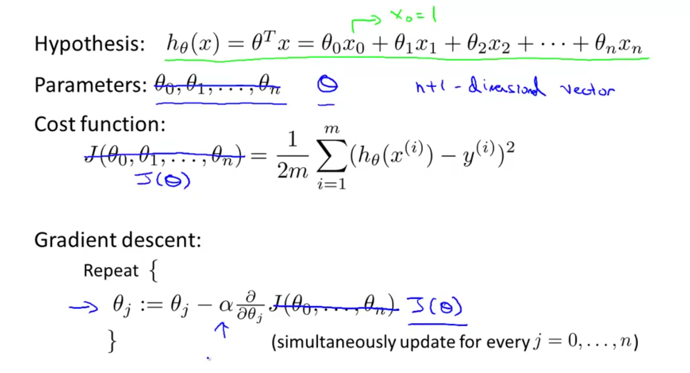
Figure: More Mathematical Notation
The following figure shows how the gradient descent algorithm changes between linear and multivariate regression.
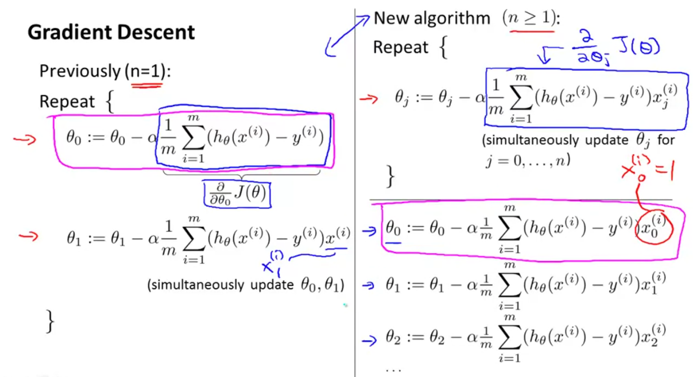
Figure: Gradient Descent Algorithm in Full
A new concept called feature scaling can be used to speed up computation and avoid memory error. The following figure carries over the principles from the housing price concept, showing how to scale the variables effectively.

Figure: Gradient Descent Algorithm in Full
We see that for all training examples the values range between 0 and 1, which is valid given we are trying to normalize them to be within \( x \epsilon [-1, 1] \).

Figure: Gradient Descent Algorithm in Full
Additionally, one could use mean normalization to try to create a desirable range of \( x \epsilon [-\frac{1}{2}, \frac{1}{2}] \).

Figure: Gradient Descent Algorithm in Full
10.1.2.2 Gradient Descent Standard Procedures
We want to know when to stop the algorithm. An instructive way to do this is to declare convergence if the rate of change of the cost function \( | \frac{\partial J ( \theta )}{\partial{t}} | \) drops below a certain value (lets say \( \epsilon \)), which means the algorithm is halted and the system is done being trained.
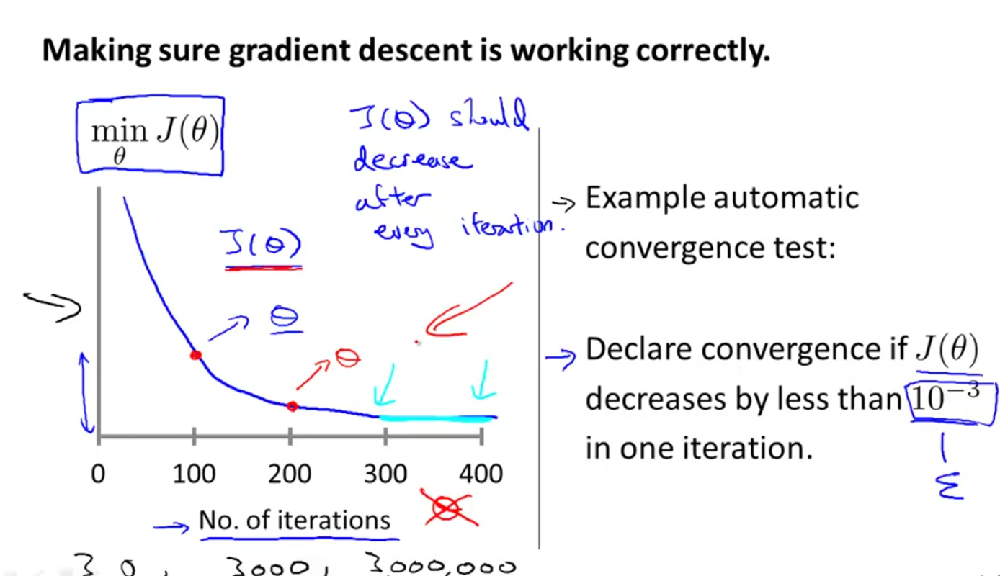
Figure: Gradient Descent Algorithm in Full
Sometimes the value will oscillate around a local minimum like a satellite orbiting the planet in an elliptical fashion. This is because the learning rate is too large. If the learning rate was smaller the system would converge slower, but possibly reach a lower minimum.

Figure: Gradient Descent Algorithm in Full
The best method is to try a bunch of different learning rates scaling exponentially \( C_0 r^n \), and see which one gives the lowest value for the cost function in the test set and training set. Its optimal to search for a system that has low bias and low variance.
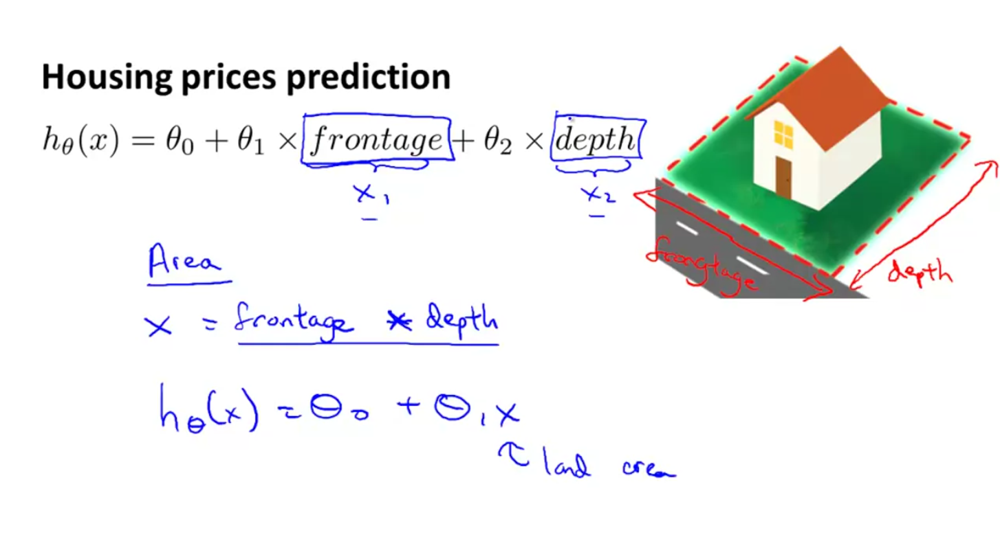
Figure: Gradient Descent Algorithm in Full
The next instructive thing to do is to move to polynomial regression, followed by multivariate polynomial regression. The basic function for polynomial regression is \( h_{\theta} ( x ) = \sum_{i=0}^{N} \theta_i x^i \) (note \( x^0 = 1 \). There do exist other forms of polynomial regression using non-integer powers such as what is seen in the figure below.
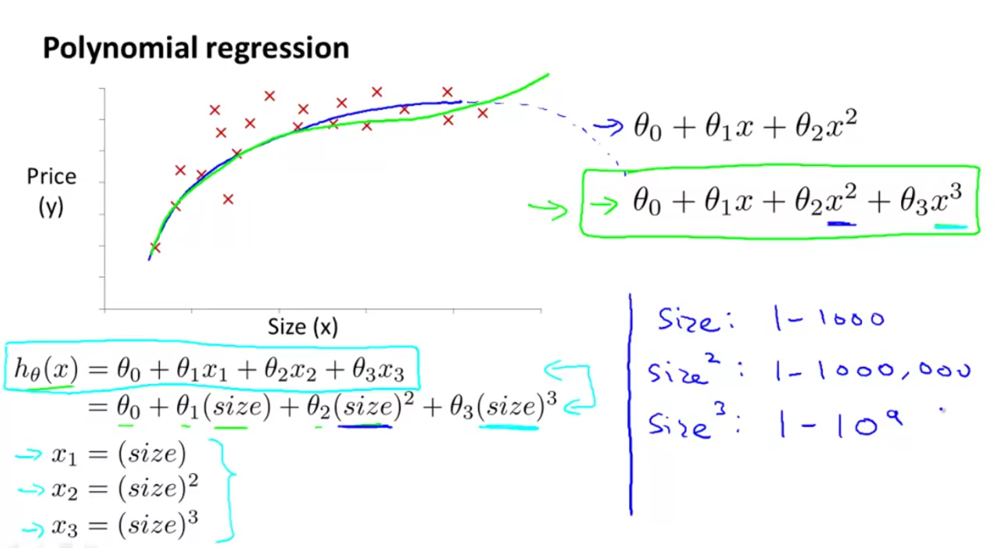
Figure: Gradient Descent Algorithm in Full
There do exist other forms of polynomial regression using non-integer powers such as what is seen in the figure below.
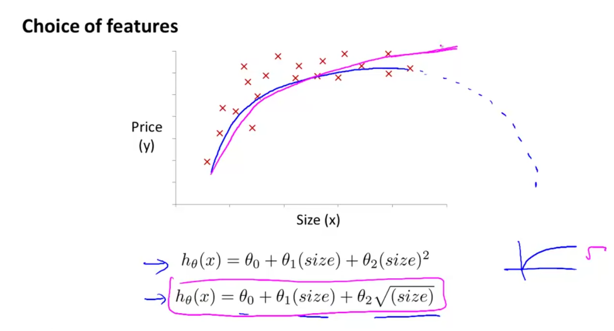
Figure: Gradient Descent Algorithm in Full
The figure below shows the procedure for gradient descent, determined analytically using the principles for multivariate calculus. Numerically, this meant we would have reached a local minimum (or possibly, but not probably, the global minimum) if the rate of change of the cost function with respect each variable is zero, then there are no changes to any values of \( \theta_i \) that bring you closer to the local minimum (i.e. \( \frac{\partial{J (\theta)}}{\partial{\theta_i}} = \vec{0} \).

Figure: Gradient Descent Algorithm in Full
With a bit of linear algebra it can be shown that the optimal value for \( \vec{\theta} \) is given by;
If an array containing rows of training examples containing parameters such as [ size ( \( ft^2\) ), \( N_{rooms} \), \( N_{floors}, t_{age} \) ] and the labels for the training vectors \( \vec{y} \). The figure below shows how rows of training examples and their respective labels can be turned into tensor formats.
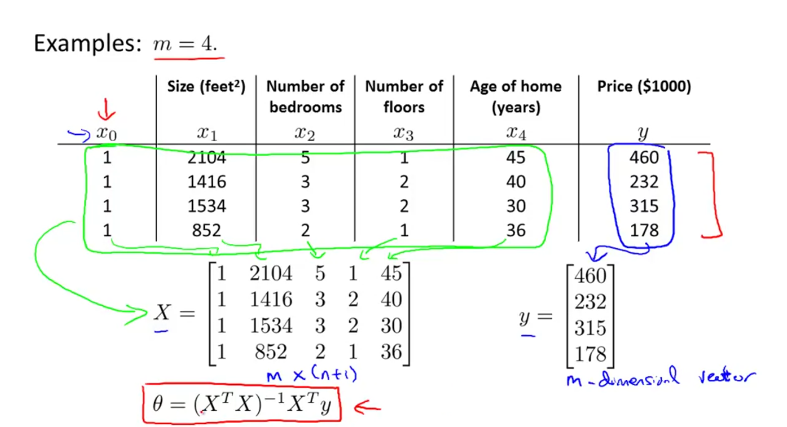
Figure: Gradient Descent Algorithm in Full
The design matrix is an \( (n, m) \) tensor, where \( n \) is the total number of features and \( m \) is the total number of training examples.
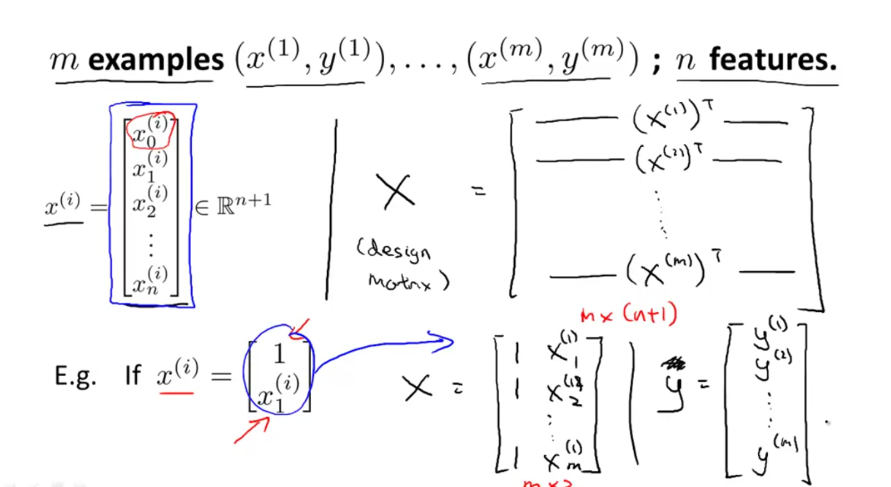
Figure: Defining Tensors
The figure below outlines the key differences between gradient descent and the analytical solution derived in the above figure.
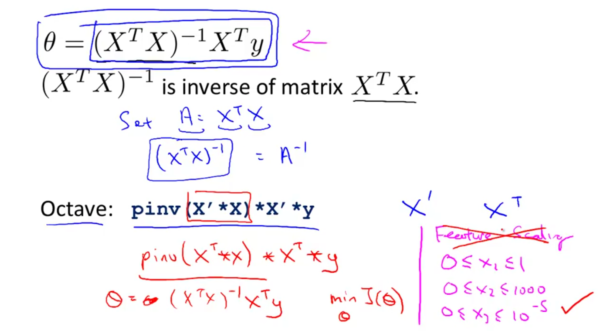
Figure: Comparing Numerical and Analytical Methods
10.2 Artificial Intelligence
10.2.1 Computer Vision
10.2.2 Natural Language Processing
NLP focuses on optimizing a machine learning algorithm so it can spit out an optimal output given some natural language data (typically sound or text; .wav or .txt). NLP is a sub field of computer science, information engineering, and artificial intelligence. Major challenges of NLP include speech recognition, natural language understanding and natural language generation (using GAN’s).
Here is a comprehensive list of NLP functions;
Speech
Speech Recognition: the exact opposite of text-to-speech; a process that most accurately converts a sound clip of a person speaking into the corresponding speech representation. One issue that arises is sounds representing successive letters blending in through a process called coarticulation.
Speech Segmentation: is typically used alongside speech recognition software to ensure words in the text a properly segmented. This is necessary because human speech can tend to slur words (i.e not many successive pauses between words) which makes it difficult to properly segment words without speech or word segmentation.
Text-to-speech: a process that transforms units of text into a spoken representation.
Syntax
Grammar Induction: generate a formal grammar that describes language syntax.
Lemmatization: the task of removing inflectional endings only and to return the base dictionary form of a word which is also known as a lemma.
Morphological Segmentation: separate words into morphemes and identify the class of morpheme. Morphemes are the meanings of prefixes and suffixes.
Part-so-speech tagging: determine the parts of speech (categories of words with similar grammatical properties) for each word.
Parsing: determine the parse tree (grammatical analysis) of a given sentence by using either dependency parsing or constituency parsing. The grammar for natural languages is ambiguous and there can be multiple possible interpretations for a correct parse.
Sentence Boundary Disambiguation: find the sentence boundaries (which are marked by periods or other punctuation marks) given a chunk of text.
Stemming: the process of reducing inflected words to their stem word.
Word Segmentation: a process that correctly separates a chunk of continuous text into separate words, which is more useful for languages like Mandarin, Japanese and Thai which aren’t necessarily spaced out like English words.
Terminology Extraction: a subtask of information extraction which makes use of linguistics processors (parse chuncking and part-of-speech tagging) to determine the appropriate terminology candidates to extract from a corpus (i.e. syntactically plausible terminological noun phrases).
Semantics:
Lexical Semantics: a subfield of linguistic semantics that looks at how the meaning of lexical units (prefixes, affixes, suffixes, words, etc.) correlates with the structure of the language or syntax (referred to a syntax-semantic interface), as well as; classification and decomposition of lexical items, the differences and similarities in lexical semantic structure cross-linguistically, and the relationship of lexical meaning to sentence meaning and syntax.
Distributional Semantics: Often summarized as; linguistic items with similar distributions have similar meanings; a research area that develops and studies theories and methods for quantifying and categorizing semantic similarities between linguistic items based on their distributional properties in large samples of language data.
Machine Translation: translate text from one language to another; considered one of the most difficult tasks (classed as AI complete), requiring many types of knowledge to perform optimally including; grammar, semantics, and even facts about the real world.
Named Entity Recognition: given a stream of text, determine which items in the text map to proper names, and also label what type of proper noun it is. Capitalization can help with recognizing proper nouns in a stream of text but does nothing to help with labelling proper nounds.
Natural Language Generation: often viewed as the opposite of Natural Language Understanding; it converts information from computer databases or semantic intents into readable human language. NLG can be used to produce long form content for organizations to automate custom reports, produce custom content for a web or mobile application, and even work as a chat-bot with the option of using speech-to-text to have the user interact via microphone.
Natural Language Understanding:
10.2.2.1 Language Detection
10.2.2.2 Lexical Analysis (Tokenization)
10.2.2.3 Sentence Boundary Disambiguation (Sentence Segmentation)
10.2.2.4 Part-of-Speech Tagging
10.2.2.5 Named Entity Extraction
10.2.2.6 Shallow Parsing (chunking)
10.2.2.7 Parsing
10.2.2.8 Coreference Resolution
10.2.3 AI Business Reports
10.2.3.1 WE_AI_Report_2018
European study of AI in business. Basically asked the best person available from 270ish european companies with the role and skill-set closest to the CTO or CIO a bunch of questions to gauge the state of artificial intelligence in various [scale] business.
Over the years artificial intelligence has helped with; processing voice to text or language translation, real-time traffic navigation, dynamically serving targeted advertisements based on personal data and browsing history, predicting trends and guiding investment decisions in financial institutions.
The current developments have been fueled by an exponential rise in computing power, increasing accessibility and sophistication of powerful algorithms, and an explosion in the volume and detail of data available to feed AI’s capabilities.
74% of C-level employees expect AI to be helpful with; engaging customers by enhancing the user experience, tailoring content, increasing response speed, adding sentiment, creating experiences, and anticipating need. C-suite respondents scored ‘engaging customers’ highest of the AI benefit areas.
Someone from Novo Nordisk Pharmaceuticals said that, "when working with AI initiatives, it is important to focus on key business issues that benefit the whole and not just doing sub-optimization at small scale", and someone from PFA Pension and Insurance said, "I don ́t see why speaking openly about our ongoing AI initiatives should be a big fuss. What really makes a difference from a competitive perspective is a companies ability to execute".
11 Nanotechnology
11.1 Nanodevices, photonics, and engineered interfaces – study additions
AI-assisted editorial study additions: original explanations and illustrations, not verbatim historical writing nor a transcript. Calendar topics organize this conceptual review; they do not certify course completion, cleanroom training, or experimental competence.
11.1.1 From energy bands to a p–n junction
Closely spaced electronic states in a solid form bands. A semiconductor has a gap between valence and conduction bands; carrier populations depend on temperature, doping, and the Fermi level. Electrons and holes both contribute to transport, with different mobilities and scattering mechanisms. Drift responds to electric field, while diffusion responds to concentration gradients. Equilibrium can have both processes present with zero net current.
When p and n regions form a junction, mobile electrons and holes diffuse and recombine near the interface. The remaining ionized acceptors and donors are bound in the lattice: ordinary depletion is not caused by dopant migration. Negative fixed charge lies on the depleted p side and positive fixed charge on the depleted n side. Their electric field opposes further diffusion. At equilibrium the Fermi level is spatially constant, while band edges bend with electrostatic potential.
For a one-dimensional abrupt junction with uniform doping, the depletion approximation neglects mobile charge inside the space-charge region. Charge balance gives \(N_Ax_p=N_Dx_n\). With forward applied voltage \(V_A\) and dielectric permittivity \(\epsilon\),
This approximation excludes breakdown, strong injection, and atomically abrupt behaviour beyond the continuum model. Reverse bias broadens depletion; forward bias reduces the barrier and changes carrier injection. The ideal diode law is therefore a transport result with restrictive assumptions, not simply Ohm’s law with a varying resistor.
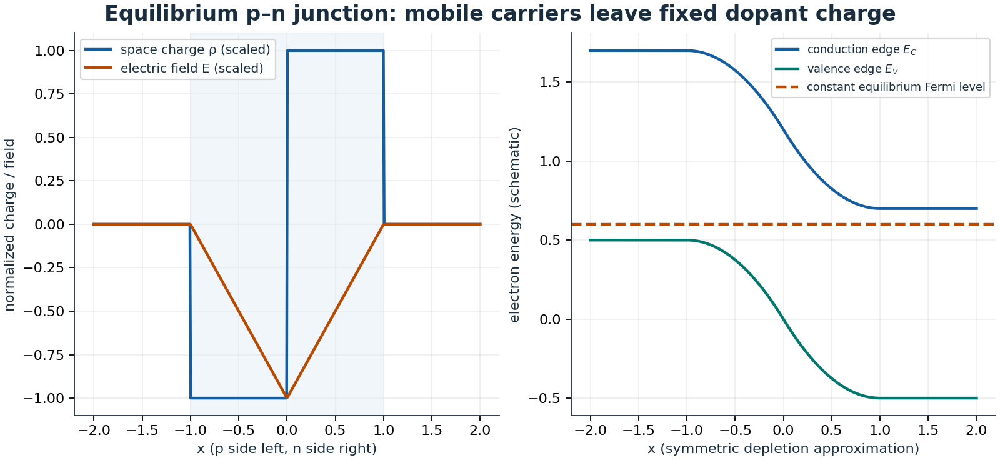
11.1.2 MOS electrostatics and fabrication concepts
A metal–oxide–semiconductor gate changes surface potential capacitively. Depending on bias and substrate type, the surface accumulates majority carriers, depletes, or inverts. In an n-channel MOSFET on a p-type body, positive gate bias can create an electron inversion channel linking source and drain. Threshold is a model-dependent transition marker, not an infinitely sharp switch. Subthreshold conduction, interface traps, oxide leakage, body bias, and short-channel fields matter in real devices.
The ideal long-channel strong-inversion model gives \(I_D=\mu C_{ox}(W/L)[(V_{GS}-V_{th})V_{DS}-V_{DS}^2/2]\) below pinch-off, followed by approximate saturation. Saturation means weak drain-voltage dependence within the model, not a maximum safe current. Small-signal transconductance is a local derivative at a bias point and should not be extrapolated across the full characteristic.
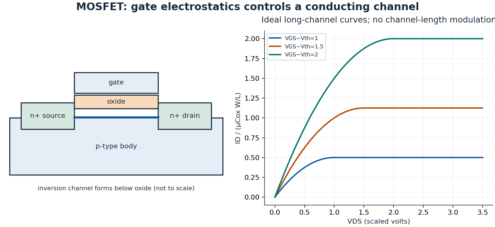
Fabrication conceptually combines substrate selection, film formation, pattern definition, selective material removal, doping, and contacts. Lithography defines where later operations act; deposition and etching alter material geometry. Alignment, selectivity, roughness, stress, contamination, thermal budget, yield, and metrology interact. Top-down patterning and bottom-up self-assembly solve different constraints and may be combined. These principles do not specify chemicals, temperatures, doses, operating sequences, or instructions for cleanroom equipment. A simulated ideal cross-section is not a validated fabrication process.
11.1.3 Photonics and confinement
Refractive-index contrast confines guided fields, with evanescent tails extending into cladding. Modes satisfy Maxwell equations and boundary conditions; a ray sketch alone cannot determine nanoscale confinement. Dispersion separates phase and group velocities. Absorption, scattering, bending, and imperfect coupling contribute to loss. Photodetectors convert absorbed photons to electrical signals, while LEDs and lasers require carrier injection and radiative transitions; a laser additionally needs gain overcoming loss and appropriate optical feedback.
Resonators store energy over multiple round trips. A narrower linewidth can improve selectivity but reduce bandwidth and increase sensitivity to drift. High quality factor does not by itself imply efficient coupling or a low-noise measurement. Interference depends on phase coherence, and nanostructures can alter optical density of states without guaranteeing higher external efficiency.
11.1.4 Surfaces and electrochemical energy
Surface-to-volume ratio scales as inverse size for geometrically similar particles, making interface energy, adsorption, and contamination increasingly important. Contact angle balances interfacial tensions only under the assumptions of the relevant wetting model; roughness and hysteresis complicate interpretation. Langmuir adsorption \(\theta=Kp/(1+Kp)\) assumes equivalent sites, monolayer occupancy, and no lateral interactions. A successful fit alone does not prove those microscopic assumptions.
For an electrochemical reaction as written, with \(n\) electrons transferred,
The Nernst equation gives a reversible equilibrium potential using dimensionless activities. At room temperature, a tenfold change in \(Q\) changes potential by about \(-59.2/n\) millivolts. Measured operating voltage also includes kinetic overpotentials, ohmic losses, and mass transport. A battery’s energy capacity and a capacitor’s rapid charge storage are different performance measures. Nanostructuring may shorten transport lengths while increasing undesirable side reactions and reducing packing density.
11.1.5 Scope, evidence, and links
Device equations rely on the physics in Section 5.1; activity and free-energy conventions follow Section 6.1; AFM feedback connects characterization to Section 12.1. The Waterloo 2022/23 NE calendar guides semiconductor, fabrication, photonics, surface, nanoprobing, and electrochemistry scope. It explicitly includes some later offerings, including NE 281 first offered in spring 2024. Such entries cannot substantiate pre-2019 attendance. This review makes no additional course-completion claims. Foundational electrochemical reasoning is also covered in OpenStax Chemistry 2e. Historical notes follow; read alongside the editorial corrections.
Retained from the earlier Mental Map.
11.2 Nanoelectronics
11.2.1 Molecular Scale Electronics
Initially, integrated circuits have been fabricated using bulk electrical materials, with microchip and microprocessor complexity increasing with respect to the miniaturization of electrical components (such as transistors). As electrical components are miniaturized, their sensitivity to deviations increase, with 13 nm channel-length devices requiring accuracy up to a few atoms (+/- 0.3 nm, or 2.3% deviation in unit length) to function properly. The increasing market demand for the miniaturization of transistors has now lead top-down methods (etching, deposition, lithography) of producing devices to become increasingly research intensive and costly, so lately more research funding has recently gone into studying bottom-up approaches like creating molecular scale electronics for common circuit elements and devices.
Contrasting the top-down (etching, deposition, lithography) and bottom-up approaches (chemistry lab) is instructive. Top-down methods require selective adding and removal of material to a flat substrate conducted via various sets of etching, deposition, and lithography steps that become more difficult to perform as smaller scales while also requiring increasing precision. Bottom-up methods require chemical/organic synthesis steps to modify large batches of molecules at a time, followed by selective extraction of the yield (correctly formed molecules) and proper discarding of the incompletely reacted molecules. Bottom-up devices can act as wires, rectifiers and transistors.
Additionally, single molecules electronics is an emerging field but far from being commercially realized. However, with top-down methods reaching their commercial (and maybe even physical) limits for transistor fabrication, and the never-ending demand for more computation power, molecular scale electronics seem to be an inevitability for the 2020’s.
11.2.1.1 Examples of Circuit Elements/Devices
Carbon nanotubes are what first comes to mind when thinking of nano-wire. The main issue with nano-wire is forming electrical contact with the electrode.
Single Molecules Transistors function differently than their bulk counterparts. For one the gate isn’t the same at all. There’s less of a trans-conductance \( g_{IV} = \frac{\partial{I}}{\partial{V}} \) determining the current output, and its more of a 0 or 1 type output with electrons either being highly encouraged or discouraged to hope molecules based on a change in the difference in the energies of molecular orbitals. This quantization of electrons leads to a significantly different behaviour from bulk scale transistors. One electron transported between molecules can provide the means to turn a transistor on or off. Poly(p-phenylene vinylene)’s and fullerines are typically used for the conducting channel and works via the coulomb blockade mechanism when appropriately placed between the source and the drain. Further research is being done to the low temperature operation of these types of electronics to see if more advanced functions (like spintronics) can be performed using these kinds of devices.
Rectifiers involve the one-way conduction of electrons via donor acceptor molecules interactions.
11.2.1.2 Methods to form Electrical Contact
One of the biggest issues with molecular scale electronics is making reliable/reproducible electrical contact with the molecular circuit elements.
One solution is to make molecular gaps by stretching a thin electrode until it breaks. This can also be done by electromitigation. Conducting measurements on thee devices can be done using and STM (scanning tunneling microscope).
Another strategy is to anchor molecules to exploiting sulfurs high affinity to gold, where sulfur on the molecules serves as a sort of crocodile clip to attach to gold electrodes. This solution, however, is non-specific, so the sulfurs bond to any gold surfaces available. Additionally, contact resistance is highly dependant on the atomic geometry around the anchoring site (so it compromises the reproducibility of the device). To combat this issue fullurenes can be used instead because the pi-stacking system can lead to more reproducible bonding geometry around the anchoring site.
12 Engineering
12.1 Completed SYDE 352: feedback analysis and controller design – study additions
AI-assisted editorial study additions: original explanations and illustrations, not verbatim historical writing nor a transcript. SYDE 352 is explicitly recorded as completed, as confirmed by the notebook owner; these are newly written review notes, not claimed surviving lecture notes or an official academic record.
The Waterloo 2022/23 SYDE calendar confirms that SYDE 352 covers classical and state-space models, stability, controllability, observability, sensitivity, Routh–Hurwitz, root locus, Bode, Nyquist, pole placement, PID, lead, and lag compensation. It supplies subject scope rather than proof of an individual’s attendance. No separate completion claim is made for SYDE 352L or other listed courses. Observer design and implementation cautions below are editorial elaborations. Calendar entries include courses introduced after 2019, so this later calendar must not be treated as a historical transcript.
12.1.1 Model, close the loop, identify the signals
For a finite-dimensional continuous-time LTI model,
The transfer matrix describes zero-initial-state response. State coordinates are not unique: a nonsingular change of basis preserves input–output behaviour and eigenvalues. Physical state selection, operating-point linearization, units, actuator limits, and sample timing must still be documented. A model fitted only around one operating point is not automatically valid across a device’s range.
For SISO negative unity feedback, \(e=r-y\), \(u=C(s)e\), and loop transfer \(L=CG\). Closing the loop gives \(T=L/(1+L)\). An output disturbance enters differently from a plant-input disturbance; placing it at the wrong summing junction produces the wrong transfer function. Algebraic closure also requires a well-posed interconnection, especially with direct feedthrough.
12.1.2 Internal stability is stronger than a tidy transfer function
Asymptotic internal stability requires all continuous-time closed-loop state eigenvalues strictly in the left half-plane. BIBO stability concerns bounded inputs producing bounded outputs; for a proper rational minimal transfer function, all poles must lie strictly left. A nonminimal realization can hide an unstable uncontrollable or unobservable mode through cancellation. For \(A=\operatorname{diag}(-1,0.5)\), \(B=(1,0)^T\), \(C=(1,0)\), the transfer function is \(1/(s+1)\), yet an initial second-state perturbation grows. Never cancel an unstable factor and declare the physical system internally stable.
12.1.3 Routh–Hurwitz and root locus: a worked cubic
Consider \(G(s)=1/[s(s+1)(s+2)]\) with proportional controller \(K\). Negative feedback yields characteristic polynomial \(p(s)=s^3+3s^2+2s+K\). Its Routh table is
Strict positivity of the first column gives the stable interval \(0<K<6\). At \(K=0\), a pole remains at the origin. At \(K=6\), \(p(s)=(s+3)(s^2+2)\), so the imaginary pair prevents asymptotic stability. For \(K>6\), two sign changes indicate two right-half-plane poles. Zero rows and zero leading entries require the special Routh construction rather than division by zero; the explicit factorization handles this boundary.
The root locus consists of solutions to \(1+KG(s)=0\) for nonnegative real \(K\). Its angle condition is an odd multiple of \(\pi\), and the magnitude condition sets \(K\). Branches begin at open-loop poles and end at zeros, including zeros at infinity. Here there are three asymptotes with centroid \(-1\) and angles \(60\), \(180\), and \(300\) degrees. On the real axis, the locus occupies \((-\infty,-2)\) and \((-1,0)\). The admissible breakaway point is \(-1+1/\sqrt3\); the other stationary candidate lies outside the positive-gain locus. More gain eventually destabilizes this system.
12.1.4 Frequency response and an explicit Nyquist convention
Bode magnitude is \(20\log_{10}|L(j\omega)|\) and phase must be unwrapped consistently. At a unity-gain crossing, phase margin is the distance to \(-180\) degrees under the usual negative-feedback convention. Gain margin measures gain change to instability at a phase crossing; multiple crossings, open-loop instability, delay, and nonminimum-phase behaviour require full-loop analysis rather than trusting one margin. A delay contributes phase \(-\omega\tau\) without reducing magnitude, making it particularly dangerous near crossover.

For Nyquist, traverse the boundary of the right half-plane clockwise: the imaginary axis runs from \(-j\infty\) to \(+j\infty\), followed by the closing semicircle. Let \(P\) count open-loop right-half-plane poles, \(Z\) count closed-loop right-half-plane poles, and \(N\) be net clockwise encirclements of \(-1\) by the complete mapped contour. Then
Thus stability needs \(N=-P\), not always zero encirclements. Imaginary-axis poles require contour indentation and explicit limiting treatment. To avoid concealing that issue, the Nyquist illustration uses a different loop, \(K/(s+1)^3\), with no axis poles. Its threshold is \(K=8\): for \(K=10\), two clockwise encirclements correctly predict two unstable closed-loop poles. Positive frequencies alone are not the full contour.
12.1.5 Controllability, observability, and pole placement
For \(n\) states, form \(\mathcal C=[B\ AB\ \cdots\ A^{n-1}B]\) and \(\mathcal O=[C^T\ (CA)^T\ \cdots\ (CA^{n-1})^T]^T\). Full rank \(n\) means controllability and observability respectively. Numerical rank needs a scale-aware tolerance; an almost uncontrollable direction may demand impractical input. Stabilizability and detectability are weaker conditions sufficient for many stabilization tasks when inaccessible modes are already stable.
Take \(A=\left(\begin{smallmatrix}0&1\\-2&-3\end{smallmatrix}\right)\), \(B=(0,1)^T\), \(C=(1,0)\). Then \(\mathcal C=\left(\begin{smallmatrix}0&1\\1&-3\end{smallmatrix}\right)\) and \(\mathcal O=I\), both full rank. Feedback \(u=-K_xx\) with \(K_x=(18,6)\) makes \(A-BK_x\) have characteristic polynomial \(s^2+9s+20\), placing poles at \(-4,-5\). Pole placement regulates the state; accurate reference tracking may additionally require a prefilter or integral action.
An observer \(\dot{\hat x}=A\hat x+Bu+L_o(y-C\hat x)\) gives error dynamics \(\dot e=(A-L_oC)e\). Here \(L_o=(10,10)^T\) places observer poles at \(-6,-7\). With estimated-state feedback, the ideal linear separation principle gives the union of controller and observer poles. Excessively fast observers amplify noise and model error; nonlinear saturation and discretization can invalidate the ideal conclusion.
12.1.6 Sensitivity and practical compensation
Define \(S=1/(1+L)\) and \(T=L/(1+L)\), so \(S+T=1\). Low-frequency large loop gain suppresses output disturbances through \(S\) but passes reference and measurement noise through \(T\) in magnitude; sensor noise enters output with sign \(-T\). At high frequency, rolling off loop gain helps reject noise. Bandwidth, robustness, actuator effort, and disturbance rejection compete.

Ideal PID is \(C(s)=K_p+K_i/s+K_ds\). Integral action removes certain steady offsets but can wind up during saturation. If \(z\) is the integral contribution, back-calculation uses \(\dot z=K_ie+k_{aw}(u_{sat}-u_{cmd})\), with positive \(k_{aw}\) and consistent units. Derivative action magnifies high-frequency noise; use a filtered derivative and often differentiate the measured output to avoid reference-step kick. Lead compensation places its zero closer to the origin than its pole, adding phase near crossover. Lag increases low-frequency gain relative to high-frequency gain but costs phase. Validate stability margins, disturbance steps, noise, sampling, saturation, recovery, and actuator effort together; ideal pole locations alone are insufficient. Historical notes follow; read alongside the editorial corrections.
13 Business
Outline retained from the earlier Mental Map; no original prose was supplied for this heading.
14 Economics
14.1 Macroeconomics
14.2 Microeconomics
Retained from the earlier Mental Map.
14.3 Industries
14.3.1 Primary Sector (Agriculture)
Exploit natural resources and produce raw materials.
Ex) Mining, farming.
14.3.2 Secondary Sector (Manufacturing and Construction)
Process raw materials and manufacture final goods.
Ex) Production of cars, food and clothes.
14.3.2.1 Quantitative Breakdown of US Manufacturing Industry
I wanted to discover how much impact each sector has on the US manufacturing industry.
| Sector | $ In Trillions | In % of total US GDP |
|---|---|---|
| Construction | 1.2 T | 4 % |
| Automotive | 0.7 T | 3.5 % |
| Food | 0.7 T | 3.5 % |
| Chemical | 0.5 T | 2.5 % |
| Electrical | 0.4 T | 2 % |
| Metallurgical | 0.125 T | 0.625 % |
| Textile and Clothing | 0.08 T | 0.4 % |
| Glass | 0.03 T | 0.15 % |
| Total: | 3.35 T | 16.675 % |
14.3.3 Tertiary Sector (Service)
Distribute goods and provide services.
Ex) Supermarkets, hairdressing, and travel agents.
14.3.3.1 Quantitative Breakdown of US Service Industry
I wanted to discover how much impact each sector has on the US service industry.
| Sector | $ In Trillions | In % of total US GDP |
|---|---|---|
| Wellness | 4.2 T | 21 % |
| Health care | 3.5 T | 17.5 % |
| Information Technology | 2.5 T | 12.5 % |
| Professional Services | 2 T | 10 % |
| Travel | 1.6 T | 7.5 % |
| Education | 1.35 T | 6.8 % |
| Retail | 1.14 T | 5.7 % |
| Insurance (Health and Life) | 0.84 T | 4.2 % |
| Media and Entertainment Industry | 0.7 T | 3.5 % |
| Energy | 0.4 T | 2 % |
| Arts and Culture | 0.4 T | 2 % |
| Finance/Banking | 0.25 T | 1.25 % |
| Hospitality | 0.2 T | 1 % |
| E-Commerce | 0.137 T | 0.69 % |
| Marketing | 0.1 T | 0.5 % |
| Sports | 0.07 T | 0.35 % |
| Design (Graphic of Product) | 0.06 T | 0.3 % |
| Consulting and Staffing | 0.04 T | 0.2 % |
| Total: | 19.34 T | 96.75 % |
Lol wrong, but kinda close. Its representative of the ratio’s of yearly revenue between service industries. I will try to recalculate this later.
15 History
Outline retained from the earlier Mental Map; no original prose was supplied for this heading.
16 Sociology
Outline retained from the earlier Mental Map; no original prose was supplied for this heading.
17 Theology
Retained from the earlier Mental Map.
17.1 Seven Deadly Sins/Heavenly Virtues
I made an album about this stuff. Its short term gratification, expedience. Its what you choose to have now, to forgo progress down the road.
17.1.1 Pride/Humility
17.1.2 Gluttony/Temperance
17.1.3 Lust/Chastity
17.1.4 Sloth/Diligence
17.1.5 Greed/Charity
17.1.6 Envy/Kindness
17.1.7 Wrath/Patience
18 Job Related Endeavors
Retained from the earlier Mental Map.
18.1 Data Scientist/Analyst Type Positions
18.1.1 Business Analyst/Developer
Marsh Canada Ltd - Divisional Office; the world’s largest insurance broker, a major subsidiary of Marsh & McLennan Companies (www.mmc.com). Marsh & McLennan Companies is a professional services firm with risk and insurance services, investment management, and consulting businesses.
Be part of the Operations and Technology group assisting Business in delivering automated solutions to improve business processes. The work environment is fast paced, team oriented, and offers a wide latitude based on your individual initiative.
Responsible for;
Understanding Business Needs
Gathering Business Requirements
Making BRD’s
(Business Requirements Documents)Develop current and future state process diagrams
Developing prototypes to facilitate/validate business requirements
Documenting use-cases required to support business requirements for application development
Developing requirements traceability matrix as input for UAT
This role will likely have supporting projects involving cross-offices, business practices, or functions, as well as building Microsoft applications using VBA in Excel and/or Access, application deployment, application support and debugging.
Addition responsibilities include;
Manage engagements with internal stakeholders
Liaise with business stakeholders
Liaise with the IT project team
Liaise with offshore development team
Responsible for the completeness and accuracy of the business requirements
Responsible for delivering at milestone dates set by the project manager
Should probably study the SDLC (software development life cycle).
Desirable Skills;
Advanced programming in VBA, SQL, Python
Advanced knowledge of relational databases, experience in building database applications
Knowledge of SharePoint
Strong Business Process Analysis and documentation skills
Fluency in written and spoken English, French
Ability to elicit and document business requirements
Can effectively participate/lead requirements gathering and review sessions comprised of both IT and business representatives
Ability to articulate Business Requirements to both on shore and off shore development teams
Ability to articulate technical concepts, and design to business users
Experience of the complete SDLC
Ability to partner with IT and the business teams to management scope of the requirements
Strong track record in collaborating across the organization
Strong (clear and concise) communication skills
Good interpersonal skills
Excellent oral and written skills
Demonstrable ability to work under pressure to support demanding deadlines
Demonstrable ability to work as a self-starter requiring limited supervision
Key Takeaways;
The most important things to look into are; how to determine/gather business requirements, the SDLC, making business requirement documents, knowing how to build database applications, using use-cases.
Important skills I already have are; advanced experience with Python, a little bit of experience with SQL, fluency in English and French, sufficient interpersonal and linguistics skills to elicit and communicate important information regarding business requirements to business stakeholders, IT project ream, and offshore development team. In a lot of ways I’m a self starter and an independent worker. Demonstrated ability to grow quickly.
18.1.1.1 Software Skills Needed
Software Development Life Cycle (SDLC)
" Software Development Life Cycle (SDLC) is a process used by the software industry to design, develop and test high quality softwares. The SDLC aims to produce a high-quality software that meets or exceeds customer expectations, reaches completion within times and cost estimates. " This is basically the process by which software development teams create high quality software, starting from the customer requirements and ending with a maximally efficient software with minimal bugs (ideally zero).
SDLC is a process followed for a software project, within a software organization. It consists of a detailed plan describing how to develop, maintain, replace and alter or enhance specific software. The life cycle defines a methodology for improving the quality of software and the overall development process.
Figure: Software Development Life Cycle
Step 1) Planning and Requirement Analysis
Planning for the quality assurance requirements and identification of the risks associated with the project is also done in the planning stage. The outcome of the technical feasibility study is to define the various technical approaches that can be followed to implement the project successfully with minimum risks.
Step 2) Defining Requirements
Following the analysis stage, we will clearly define and document product requirements using a Software Requirement Specification (SRS).
Step 3) Designing the Product Architecture
SRS is the reference for product architects to come out with the best architecture for the product to be developed. Based on the requirements specified in SRS, usually more than one design approach for the product architecture is proposed and documented in a Design Document Specification (DDS), which is to be reviewed by stakeholders who will assess; risk, product robustness, design modularity, budget and time constraints, and the best design approach. The internal design of all the modules of the proposed architecture should be clearly defined with the minutest of the details in DDS.
Step 4) Building or Developing the Product
Actual fun time where we develop the software needed to satisfy the business requirements, mostly guided by the Design Document Specification (DDS). The better the DDS, the easier this stage of the process will be. Developers must follow the coding guidelines defined by their organization and programming tools like compilers, interpreters, debuggers, etc. are used to generate the code.
Step 5) Testing the Product
This stage is usually a subset of all the stages as in the modern SDLC models, the testing activities are mostly involved in all the stages of SDLC. However, this stage refers to the testing only stage of the product where product defects are reported, tracked, fixed and retested, until the product reaches the quality standards defined in the SRS.
Step 6) Deployment in the Market and Maintenance
Once the product is tested and ready to be deployed it is released formally in the appropriate market. Sometimes product deployment happens in stages as per the business strategy of that organization. Then based on the feedback, the product may be released as it is or with suggested enhancements in the targeting market segment. After the product is released in the market, its maintenance is done for the existing customer base.
18.1.1.2 Business Knowledge Needed
Develop Current and Future State Process Diagrams
Current State is the terminology used to describe a series of work flows developed to depict business processes as they currently function. A diagram is created to reflect all the steps of the process, who is responsible for each step, and the time it takes to complete each task for the business processes that are currently ongoing. Here’s an example;
Figure: Daily Routine Process Flow Chart Example
The current state process diagram, described above, establishes a baseline that is used to determine changes that will improve effectiveness and productivity for the business. Also refereed to as a value stream map, or a swim lane diagram depending on preference.
The current state diagram shows us where we are right now in development;
See how a process works (what theoretically happens next)
Identify the required stakeholder approvals before proceeding
Determine if there is anything missing in the tasks identified
Whilst creating the current state diagram you must; consider the straight through process, consider processes that are executed in parallel, document steps throughout the process, establish clear boundaries between the start of the process and the end of the process, identify all steps (including decision points) executed within the current process (; understand that there may be variations), critically evaluate the process flow chart (;undercover opportunities to improve the process and better satisfy your customers),
Additionally, document bright ideas - these are ideas captured during the current state mapping process as ideas for future improvements; ensure these ’bright ideas’ have either been addressed, incorporated or discarded as no longer needed when considering future state design. If exceptions are a main source of concern, note them within the process map for future consideration.
After creating the current state map and evaluating the data sheets, the logical next step is to create a future state diagram depicting how the process will work after improvements to the process are implemented, which focuses on;
Improved Process for the Customer
Eliminated Waste (removable inefficiencies)
Motivated/Energetic/Productive Workers
Reduced Cycle Time
The overall goal is to define what we would like to improve and a plan to achieve it, a share vision if you will, to serve customers, motivate employees, and reduces ’non-value-add’ tasks.
To optimize the business process, consider;
Can tasks be eliminated?
Can tasks be combined with others
Can tasks be performed in parallel with other tasks
Do certain tasks take too long, why?
Is a task subject to rework cycles, why?
Should tasks be performed by someone else? Whom? Is value added?
Determine improvement opportunities using data analysis
Identify obstacles or challenges in the transition from the current state to the future state
Eliminate or reduce weaknesses in the process (handoffs, redundancies, non-value-add steps)
How would the process look in a world with no constraints?
Consider customers perspective
To implement;
Complete Milestone Tasks to Transition
Establish Delivery Timeframes
Assign Ownership to Accomplish Tasks
Develop Communication Plan
Source [n]; https://www.unh.edu/lean/phase-6-implementation-plan-sell-sponsor
Business Requirement Analysis
"Process analysis is the action of conducting a review and gaining an understanding of business processes. It involves reviewing the components of a process, including inputs, outputs, procedures, controls, actors, applications, data, technologies and their interactions to produce results. The analysis includes the evaluation of time, cost, capacity and quality of processes, being able to use static or dynamic visual models of the process, data collection from the beginning to the end of activities, analysis of value chain, end-to-end modeling and functional decomposition [n]".
Step 1) Identify the Process
The first step is to identify which processes need improvement. These are the ones you need to study and understand. It’s important to always think about the goals of your business, and what processes contribute to that goal. Prioritize them... but how do you identify which are the most important processes? They are those that most contribute to achieving the organizational goals and add more value to the final delivery of the processes.
Step 2) Establish Team
Establish a team to help you with the business process analysis. The best people are those who already work with the process on a daily basis. They know the steps, the information, the goals and, most importantly, the flaws and bottlenecks of the process. Ways to make the team interact in a productive and business appropriate manor include; conducting interviews with team members, performing group brainstorming sessions, conducting business meetings to collect knowledge and insights from the team. When assembling your team, it’s very important to consider which professionals will effectively help you analyze business processes (THATS MEEEEE). In addition to considering a person based on their understanding of Business Process Management, Marsh Canada Ltd - Divisional Office will consider based on; leaders who are related to the chosen processes, employees who are motivated by the possibility of improvement, a supporter of the process, preferably from top management, to empower the team.
Step 3) Create a Business Process Diagram / Flowchart
This is coming full circle... good.
This process analysis technique is very useful, and can give you a real insight into how the process happens. With standard symbols and tools, you can represent the process in a clear and practical way. By doing this, it becomes much easier to see what’s right and what’s not working, and what are the bottlenecks and improvement points. Building a process diagram is one of the fundamental steps of the business analysis methodology, check out a step-by-step plan on how to do one (second take):
Define those who are responsible: process diagrams define responsibilities by means of lanes, which are areas of the diagram in which the tasks of a team or position will be represented.
Include a process initiator event: every process starts with some event, it can be an email sent by a client upon the arrival of a previous process part, for example.
Define tasks and their relationships: in each lane you should indicate the tasks that need to be done, such as finding the part or answering the email request. Also indicate, through linking elements, which task is next and who is responsible.
Signal the end of the process: in the same way that one event marks the beginning of the process, another marks its end. Examples) “request fulfilled” , “part delivered”.
Step 4) Define the AS IS process
With all the above information, define how the process happens now. It’s very important not to get ahead, and stick with the actual situation, no matter how it is. Be real. That is: understand how the process is taking place at this time, not how you would like it to be in the future. To do this, in this stage of business process analysis, you have to follow 3 main steps:
Interviews with the actors: is intended to represent the activities of the process, its sequence, who is responsible, whether there is a need for permissions in other instances of the process and if some new information is generated.
Analyze the process model: find out what the purpose of the process is, what performance metrics are used, whether there are customer interactions, whether there are handoffs (passing work or information from one person, team or system to another), what business rules are applied, if there are bottlenecks, how the process is controlled, and other points.
Documentation: at this point, everything that has been analyzed must be properly reported in appropriate documents so that the consultation and presentation can be made clearly, following the defined notations.
Step 5) Specify improvement points
You may already know, but it’s important to determine what are the necessary and possible improvements. Keep in mind the strategic goals of the company in doing so, since all processes and actions must have them as objectives. Usually the points of improvement focus on the following aspects:
Interaction with customers: these moments must always be perfect, especially with external clients
Activities that add high perceived value: these must always occur in the best way, in order to deliver the highest possible perceived value to the final customer.
Hand offs: every time there’s an exchange of information or tasks between person and/or system there’s a risk of errors occurring. The more hand offs there are, the more risk there is.
Business Rules: these are standard procedures that facilitate the flow of the process and prevent the loss of time in decision making, because they are clear and objective rules to define how the process should run.
Bottlenecks: find out why the process stops flowing at certain points and set ways of how to avoid it.
Step 6) Model the process TO BE
Gather all the information and model the new process the way you want it to be and align it with the company and its goals and objectives. In fact, this step consists of designing the new improved process, one that will achieve the goals of the organization more efficiently and effectively. In the same way that we created a process diagram in the AS IS step, the TO BE step will also have one as well as all the necessary documentation to transmit this information and knowledge when necessary.
Sounds a lot like an expanded version of the current and future state diagrams source
As we can see, business process analysis generates the information needed to assess and address the roots of problems, and make informed decisions. With this method, you can understand how the work happens inside the organization and how well the business achieves its goals. It’s important to remember that this is a continuous operation, since there’s always a process to optimize or improve. Also, it’s possible that a process may become inconsistent with business goals, as it may change over time. All process analysis techniques are important and you shouldn’t skip any. Good software makes the difference when it comes to analyzing activities, and HEFLO BPM is the right one! So, with a dynamic and easy-to-use interface, it allows you to map, model, execute, improve, optimize and automate all the processes of your company, allowing continuous and effective improvement!
Source [n]; https://www.heflo.com/blog/process-mapping/business-process-ana lysis-methodology/
Making Business Requirement Documents
Many businesses have a process in place to assist with project management and implementation. One opportunity for improvement involves making reasonable estimates of how big a project is and how much it is going to cost. Business requirements are the critical activities of an enterprise that must be performed to meet the organizational objective(s) while remaining solution independent. A business requirements document (BRD) details the business solution for a project including the documentation of customer needs and expectations. If an initiative intends to modify existing (or introduce new) hardware/software, a new BRD should be created. The BRD process can be incorporated within a Six Sigma DMAIC (Define, Measure, Analyze, Improve, Control) culture.
Common objectives of the BRD are;
To gain agreement with stakeholders
To provide a foundation to communicate to a technology service provider what the solution needs to do to satisfy the customer’s and business’ needs
To provide input into the next phase for this project
To describe what not how the customer/business needs will be met by the solution
The BRD is important because it is the foundation for all subsequent project deliverables, describing what inputs and outputs are associated with each process function. The process function delivers CTQs (critical to quality). CTQs deliver the voice of customer (VOC). The BRD describes what the system would look like from a business perspective.
Who Commonly Helps Create the BRD
Project core team
Business partner(s)
Process owner(s) or representatives
Subject matter experts
Prerequisites for BRD
Project Charter; BRD helps us review this to ensure objective, goals, project, team and approvers are accurately reflected.
Current Environment Assessment; involves a detailed process map of the current environment highlighting areas that will be changed during the project. Refer to ’AS IS’ maps (current state diagrams).
Crutial to Quality (CQT);
Current measures: Data that defines and describes current performance – sigma level of the CTQ includes a definition of how the product/service’s characteristic is to be quantified.
Target/nominal value: What is the aim of the product/service? If there was never any variation in the product/service, this would be the constant value.
Specification limits: How much variation is the customer willing to tolerate in the delivery of the product or service? Define upper and lower specification limits as required by the customer needs.
Allowable defect rate: How often are the producers willing to produce a product/service outside the specification limits?
Target Environment Assessment; created in the measure phase, and includes a detailed process map of the target environment including level two functions. When distinguishing between level two or three functions, group the process functions into the following categories;
People: People are processing information and making decisions [core team designs high-level design/low-level design (HLD/LLD)]
Systems: Systems is processing information and making decisions
Package the BRD so it has a logical flow and is easy to follow. An example of a high-level list of sections follows;
Project overview including project charter information, scope, and objectives
Current environment assessment and systems overview (see additional details below)
Future process map
Process detail table
Overall project business rules and constraints
Impact assessment (fishbone for process functions)
Functional requirements (additional details below)
Data to be held (additional detail available below)
Schedule and budget
Terms and definitions
Approver information
Team information
Make sure you get the BRD is signed off. Business partners should be active participants in the development of the BRD, but a final review and sign-off is also essential.
Current Environment Assessment and Systems Overview
There are a number of items included in the BRD that require detailed documentation to ensure successful implementation. Following is a high-level overview of the types of detail to consider:
Who is the intended user?
How many users are there? Are they the same type of user or different?
What level of computer experience will the users have (or is needed)?
What is the required security?
Are there hardware constraints – networked or stand-alone?
What are the approximate numbers of records required initially plus the anticipated growth?
What technical support is necessary and available in-house?
What other systems need to integrate/communicate?
Backup. Describe the current back-up regime (e.g., tape back-up one/day). How will the new system fit with this? If this is not currently defined then think how much data could be inadvertently lost. For example would it be a major disaster if the last 30 minutes of work was lost, or could yesterday’s/last week’s data be retained?
Deliverables. What are the expectations – system, help files, documentation, full source code, training, support, etc.? Detail what is essential versus nice. Do not automatically ask for everything unless necessary. If the project manager is to maintain the system make sure he states that he requires the full source code – alternatively if the developer is to maintain the system consider settling for an escrow agreement (where the source is held by an independent third party). Be specific about tools necessary to help. If the developer is unwilling to provide the support necessary find someone else who will.
Summary of BRD
As with any tool, the BRD can have both benefits and failure modes. Benefits derived from a good BRD include reduced changes during the improve and control phases of DMAIC and reduced time to deployment. Failure modes from a poor BRD means the system developed will not meet business requirements. Creating a successful BRD requires planning and coordination. There are a few best practices that should be followed in this process. The team should hold a dedicated off-site session to complete the BRD with all required resources 100 percent available.
Source [n]; https://www.isixsigma.com/implementation/project-selection-trac king/business-requirements-document-high-level-review/
Use-Cases
Use Cases help us understand which developers are working on certain software module(s). They are also a popular technique for documenting and understanding system requirements. Use case diagrams graphically depict who will use the system and in what ways the user expects to interact with the system. Use cases are triggered when an actor initiates a use case to complete a business task. An actor is someone or something that fulfills the role of interacting with the system in a specific way. Only important use cases (based on project priorities) are documented.
Step 1) Identify Actors and Use Cases
Ex 1) “Aggregate Sales Forecasts”; which adds up all the sales forecasts received from field staff. This same goes for outputs.
Ex 2) “Generate Accuracy Report”; a report may be required at a certain time of the month on the accuracy of sales forecasts. Such an event (the generation of the report) is referred to as a temporal event since it is triggered by time.
Another way to identify use cases is by analyzing the context diagram of the system, which shows the external parties that interact with it to provide inputs and receive outputs. If an external party initiates an input into the system, it’s called an actor. It’s always important to double-check findings with business users after drawing up the use cases.
Step 2) Document High-level Use Cases
Document each use case to gain a better understanding of system functionality.
Ex Use Case Name: Approved Sales Predictions
Actor: Commercial Director
Description: The process of approving sales forecast values by the Sales Director.
Step 3) Document the Use Case Course of Events
Includes the inclusion of Case ID, Name, Document Creator, Document Updater, Actors, Description, Preconditions, Post conditions, Normal and Alternative Courses, Exceptions, Priority, Business Rules, Assumptions, etc.
Source [n]; https://businessanalystlearnings.com/blog/2013/9/30/the-3-step -guide-to-documenting-requirements-with-use-cases
18.1.1.3 References
[1]
[2]
[3]
[4] https://www.unh.edu/lean/phase-6-implementation-plan-sell-sponsor
[5] https://www.heflo.com/blog/process-mapping/business-process-analysis-methodology/
[6] https://www.isixsigma.com/implementation/project-selection-tracking/business-requirements-document-high-level-review/
[7] https://businessanalystlearnings.com/blog/2013/9/30/the-3-step-guide-to-documenting-requirements-with-use-cases
18.2 Chemical, Material, Nanotechnology Engineering Type Jobs
18.3 Service/Retail Type Work
18.4 Employment
19 Things I understand at a High Level, but I don’t understand at a Low enough Level
Just gonna outline here some stuff I don’t fully understand.
19.1 Physics
19.1.1 PN Junctions
A PN Junction is formed when a p-type semiconductor and an n-type semiconductor go from being two separate crystals to one full crystal. I have been told that once the crystals are combined, the p-type impurities (such as Ga, B, 14th column periodic table shit) from the P side diffuse over and increase the concentration of p-type impurities on the N side, and vice versa. This diffusion occurs until the electric field created in (what is called) the depletion region inhibits the diffusion of the impurities. My main question is how does this diffusion in the solid state occur in the first place? It seems to me diffusion in the solid state would occur... but over massive timescales. Is the diffusion coefficient really that large? Or is annealing required like what occurs following ionic bombardment to create the impurities in the first place?
20 YouTube Videos
Outline retained from the earlier Mental Map; no original prose was supplied for this heading.
21 Imported image archive
These supplementary assets arrived with External Brain. Their original authorship, dates and reuse permissions were not documented in the supplied folder. They are preserved as historical notebook assets, not presented as newly generated research results. The original working rotation plot also remains at its original discussion.